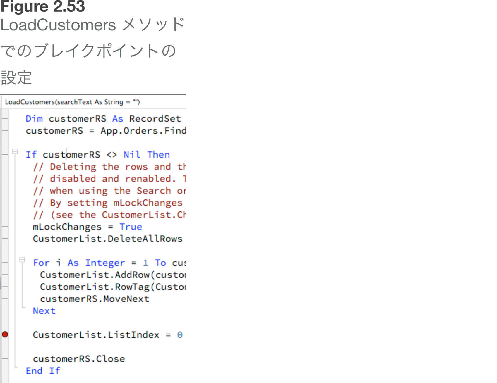
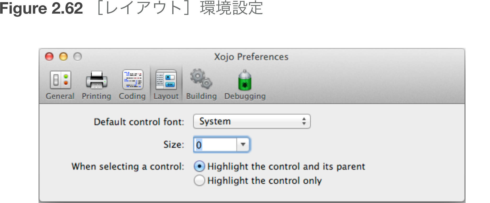
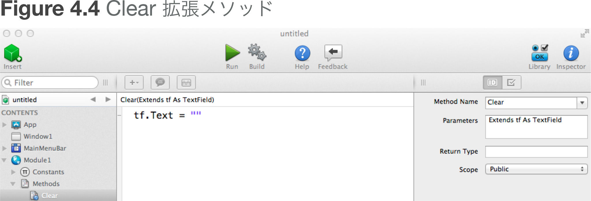
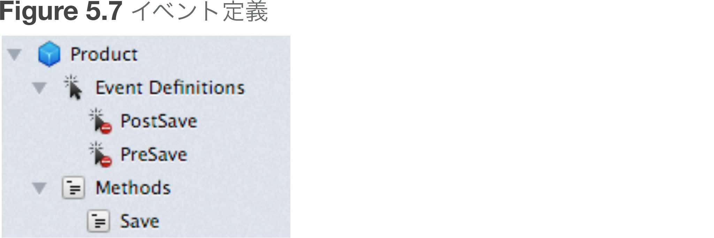
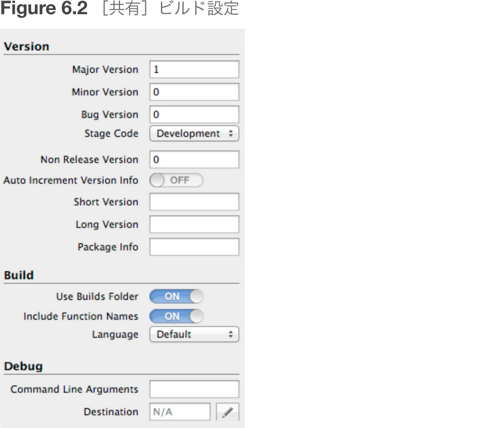
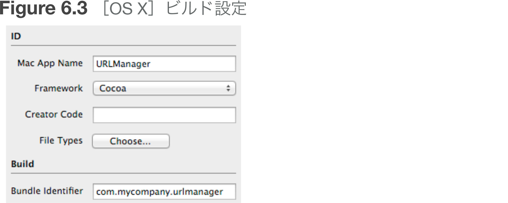

| Xojo ユーザーガイド: Book 1: 基礎 | |
| Xojo開発チーム | |
| グレープシティ株式会社 (2016) | |
※Kindle版発行にあたって
本書籍は、Xojo, Inc. の許諾を得て2015年に発行された「Xojo User Guide Book1 Fundamental」をグレープシティ株式会社が日本語に翻訳したものをKindle版として制作・発行したものです。これからXojoを使ってみようと考えている人、すでにXojoを仕事や研究に活かしている人など、さまざまな方に役立てていただければ幸いです。
本文中のソースコードはAdobe® 社がSIL Open Font License にて提供している欧文等幅フォント Source Han Code JP を使用しています。
グレープシティ 株式会社
Section 1
Xojo ユーザーガイドについて
この Xojo ユーザーガイドは、Xojo の初心者である開発者および Xojo に熟達した開発者の両方を読者として想定しています。
ユーザーガイドは、Xojo の各分野に特化した:『Xojo の基礎』、『Xojo のユーザーインタフェース』、『Xojo のフレームワーク』、および『Xojo での開発』の4冊で構成されています。
ユーザーガイドのトピックの並び順は、通常使用する順序になるように編成されています。
『Xojo の基礎』では、まず Xojo 統合開発環境（IDE）について説明し、その後「Xojo プログラミング言語」、「モジュール」、および「クラス」と続きます。最後は「アプリケーションの構造」の章です。
『Xojo のユーザーインタフェース』では、デスクトップアプリケーションやウェブアプリを作成するためのコントロールとクラスについて説明します。
『Xojo のフレームワーク』は、『Xojo のユーザインタフェース』と『Xojo の基礎』で学習した内容がベースになっています。Xojo の主なフレームワークエリアについて、「ファイル」、「テキスト」、「グラフィックスとマルチメディア」、「データベース」、「印刷とレポート」、「通信とネットワーキング」、「同時実行」、および「デバッグ」の各章で説明します。最後に、「アプリケーションのビルド」の章と「高度な機能」の2つの章があります。
『Xojo での開発』では、「アプリケーションの展開」、「クロスプラットフォームの開発」、「ウェブの開発」、「他のツールからの移行」、「コードの管理」、および「サンプルアプリケーション」の各エリアについて説明します。
著作権
この書籍の著作権はすべて Xojo,Inc. が保有しています。この文書のすべてまたは一部や関連するファイルを、どのような電子的または物理的な形式であっても、物理的、電子的、写真撮影、動画撮影やその他の電磁的複製方法を含むどのような方法であっても、著作権者の文書による許諾を前もって受けることなく、その内容を複製、送信、アップロードすることは、国際法国内法の関連法規により禁じられています。
商標
Xojo は Xojo, Inc. の登録商標です。無断複写・転載を禁じます。
この書籍内で使用されている商品名やサービス名は各社の商標、登録商標、サービスマークで、この書籍内で触れる目的でのみ使用されています。なお、商標、登録商標、サービスマークである可能性がある語句は適宜その旨の表示を行っておりますが、Xojo, Inc. はその情報の正確性を保証するものではありません。そのような語句をこの書籍内で使用していたとしても、商標、登録商標、サービスマークは正しくない可能性があることを含みおきください。Xojo, Inc. はこの書籍内で触れている商品やサービスとは関係がありません。
Section 2
凡例
本書では、Xojo の Windows、OS X、Linux の各画面のスナップショットを掲載しています。インタフェースデザインと機能はすべてのプラットフォームで統一されていますので、プラットフォームによる違いは、見た目の違い、ひいては Windows、OS X、Linux のグラフィカルインタフェースの違いによるものです。
・太字 は初めての新しい項目が使用された時に、その部分を強調するために利用され、また重要な概念を強調する場合にも使用されます。また、書籍のタイトル（『Xojo ユーザーガイド』など）は斜体で記述しています。
・メニューから項目を１つ選択するような場合には、「［ファイル］→［新規プロジェクト］を選択します。」のような書式で表示されます。この例では、「［ファイル］メニューから［新規プロジェクト］を選ぶ」という意味になります。
・キーボードショートカットを構成するキーの並びは、記述されている順序で押す必要があります。Windows と Linux では、［Ctrl］キーが修飾キーです。OS X では、［⌘］（［Command］）キーが修飾キーです。たとえば、［Ctrl］+［O］または［⌘］-［O］の場合、Windows と Linux では［Ctrl］キーを押しながら［O］キーを押し、OS X では［⌘］（［Command］）キーを押しながら［O］キーを押します。修飾キーは、ショートカットキー（この場合は［O］キー）を押す前に手を離してはいけません。
・何かキー入力をしなければならない場合には、「GoButton」のようにその部分はカギかっこで囲んで表示されます。
・コードエディタ上でプログラムを入力する必要がある部分もあります。入力する文字は例のように灰色のボックス内に表示されます。
ShowURL(SelectedURL.Text)
プログラムコードを入力したら、このガイドラインをチェックしてみてください。
・灰色のボックス内の文字列が複数行ある場合、コードエディタ内でも別々の行として入力します。複数の行を無理やり1行に詰め込んだり、長いからといって1行を別々の行に分けてはいけません。
・空白文字（スペース）を入れるように指示されていないのに、余分な空白文字をプログラム内に入れてはいけません。
・もちろん、この書籍からコピー・ペーストして使用することもできます。
自分で作成したアプリケーションを実行する時には、Xojo は毎回、まず入力された文字の間違いや文法間違いを検査します。この検査の時に誤りを発見した場合、Xojo はどの行に問題があったかがすぐに分かるように、そのプログラム内の誤りがある行を表示します。
Section 1
Xojo について
Xojo を使用すると、マルチプラットフォームの強力なデスクトップおよびウェブアプリケーションをすばやく簡単にビルドできます。Xojo のプログラミング言語は、初めてプログラミングを行う方でも簡単に学習できます。経験豊富なプログラマーには、この言語が強力で堅牢なことを実感していただけます。どちらの場合も、短期間で非常に多くのことを実現できます。
Xojo には、まったく（またはほとんど）プログラミングせずにアプリケーションのユーザーインタフェースを作成できる視覚的なグラフィカルユーザーインタフェース（「GUI」）ビルダーがあります。ドラッグアンドドロップ操作を知っていれば、インタフェースをビルドできます。Xojo はインタフェースコントロールの充実したセットを提供しており、ユーザーは独自のコントロールを作成することもできます。
Xojo のプログラミング言語は、わかりやすいコンパイル型オブジェクト指向プログラミング言語です。これは、Xojo のプログラミング言語が、ほとんどのプログラミング言語（C++、Objective-C、Java など）で現在使用されているものと同じタイプの最新アーキテクチャーを使用していることを意味します。オブジェクト指向プログラミング言語では現実世界のオブジェクトに似た個々のオブジェクトとしてコードを作成するため、作成とデバッグがより簡単になります。
Xojo を使用すると、OS のプログラミングインタフェースへのアクセス方法を学習する必要がなくなるので、従来の言語よりも迅速かつ簡単にアプリケーションを開発できます。このアプリケーションプログラミングインタフェース（略して API）は数千個のコマンドで構成されていますが、Xojo でアプリケーションをビルドするためにこれらを学習する必要は一切ありません。
Section 2
Xojo のインストール
Xojo には、ハードウェアと OS に関する次の要件があります。
OS X
IDE
OS X で Xojo を使用して開発を行う場合の要件は、次のとおりです。
| サポート対象 |
|---|
| OS X Lion 10.7 以降 |
| iOS 開発時 OS X Mavericks 10.9 以降 |
| 2 GB RAM |
コンパイル済みアプリケーション
Xojo は、次のバージョンの OS X を搭載したすべての Intel Macintosh 用にアプリケーションを作成できます。
| Cocoa | Carbon |
|---|---|
| OS X 10.7 以降 |
OS X 10.7 以降 |
インストール
次の Xojo ウェブサイトから最新バージョンをダウンロードしてください。
ダウンロードされるデータには、ディスクイメージ（DMG）ファイルが含まれています。このファイルをダブルクリックして Finder に表示してください。
Finder でディスクイメージを選択し、ディスクイメージからアプリケーションフォルダに Xojo フォルダをドラッグします。
Windows
IDE
Microsoft Windows で Xojo を使用して開発を行う場合の要件は、次のとおりです。
| サポート対象 |
|---|
| Windows ７ 以降 |
| 2 GB RAM |
| PDF 閲覧ソフトウェア |
コンパイル済みアプリケーション
Xojo は、Windows の次のバージョンで動作するアプリケーションを作成できます。
| Windows |
|---|
| Windows 7 x86 または x64 |
| Windows 8.x x86 または x64 |
| Windows 10 x86 または x64 |
インストール
Windows インストーラーを実行し、Windows に Xojo をインストールします。
Linux
IDE
Linux で Xojo を使用して開発を行う場合の要件は、次のとおりです。
| サポート対象 |
|---|
| Linux Mint 16 以降 |
| Ubuntu 10.04 以降 |
| Debian 6.0 以降 |
| OpenSUSE 11.3 以降 |
| Fedora 13 Desktop 以降 |
| CentOS 6.0 以降 |
| 2GB RAM |
| PDF 閲覧ソフトウェア |
コンパイル済みアプリケーション
Xojo は、次の要件を満たす Linux ディストリビューションで動作するアプリケーションを作成できます。
| サポート対象 |
|---|
| Linux Mint 16 以降 |
| Ubuntu 10.04 以降 |
| Debian 6.0 以降 |
| OpenSUSE 11.3 以降 |
| Fedora 13 Desktop 以降 |
| CentOS 6.0 以降 |
64 ビットLinux とライブラリ情報
Xojo と Xojo で作成したアプリケーションでは、次のライブラリが必要です。
・GTK+ 2.20（デスクトップ）
・glib 2.0（ウェブとコンソール）
・glibc-2.11
・libstdc++.so.6.0.13
・libicu 4.2+
・libwebkitgtk-1.0.0 または libgtkhtml (HTMLViewer 用)
64 ビット Linux ディストリビューションでは、Xojo または Xojo でビルドしたアプリケーションを実行するために適切な32ビット互換ライブラリがインストールされていることを確認する必要があります。Ubuntu の場合は、通常、次のコマンドのいずれかを使用できます。
sudo apt-get install ia32-libs
sudo apt-get install ia32-libs-multiarch
より新しいバージョンの Ubuntu では、次の追加手順も必要な場合があります。
sudo dpkg --add-architecture i386
sudo apt-get update
sudo apt-get install ia32-libs-multiarch
Multiarch サポートの詳細については、次のウェブサイトを参照してください。
https://wiki.debian.org/Multiarch/HOWTO
Xojo が使用するライブラリは、ldd コマンドで決定できます。
ldd Xojo
ウェブ
ウェブアプリケーションは、サーバーコンポーネントとウェブブラウザで動作するユーザーインタフェースの2つの部分で構成されます。サーバーコンポーネントの要件は、ビルド対象プラットフォームと同じです。
ウェブアプリケーションは、次のウェブブラウザをサポートします。
| サポート対象のウェブブラウザ |
|---|
| Chrome |
| Firefox |
| Safari |
| Internet Explorer 9+ |
| Mobile Safari (iOS) |
| Chrome for Android devices |
iOS
iOS アプリを開いたり作成したりすることができるのは、Xojo の OS X バージョンだけです。次のような、より制約的 IDE 要件もあります。
・OS X Mavericks 10.9 以降
・Xcode 6.1（iOS Simulator 向け）
Xojo で作成した iOS アプリは、次のバージョンの iOS で動作します。
・iOS 7
・iOS 8
次の iOS デバイスがサポートされています。
・iPhone 4S 以降の iPhone
・すべての iPad mini モデル
・iPad 2以降のモデル
・iPod touch（第5世代以上）
次の操作を行うためには、有料の Apple iOS Developer アカウントが必要です。
・iOS デバイスへの展開
・App Store への申請
Section 3
使い始める
Xojo ID のログイン
Xojo がライセンスを使用するためには、Xojo アカウントにログインする必要があります。
ログインするには、Xojo ID とパスワードを入力して［ログイン］ボタンをクリックします。この手順を実行すると、アカウントに関連付けられているライセンスが適用されます。
所有しているライセンスは、［ライセンス］タブの［Xojo について］ウィンドウで確認できます。使用可能なライセンスが、ライセンス終了期限およびライセンスが登録されている電子メールとともに表示されます。
Xojo で新しいライセンスを強制的に確認するには、［ダウンロード］ボタンを使用します。
［追加］ボタンを使用して手動でライセンスファイルを追加することもできます。［削除］ボタンはライセンスを削除します。
Xojo ウェブサイトでは、アカウントにログインしてライセンスの表示、ライセンスファイルのダウンロード、およびライセンスの購入または更新を実行することができます。
https://xojo.com/account/login.php?lang=jp
クイックスタートとチュートリアル
プログラミング初心者の方は、まずデスクトップまたはウェブアプリケーション用のクイックスタートに目を通し、次にチュートリアルに目を通してください。これらのガイドには、Xojo の概要がうまくまとめられており、プログラミング言語が紹介されています。
次に、『Xojo ユーザーガイド』をお読みください。このガイドでは、Xojo、Xojo のプログラミング言語、ユーザーインタフェースコントロール、フレームワーク、およびその他の機能が詳細に説明されています。プログラミング言語の特定のコントロールまたはコマンドの詳細が必要な場合は、次の URL でオンライン言語リファレンスを参照してください。
Section 4
オンラインヘルプ
クイックスタート、チュートリアル、およびユーザーガイド
クイックスタート、チュートリアル、および『Xojo ユーザーガイド』は、Xojo のインストール先に PDF 形式で含まれています。これらのガイドは Xojo のインストール先の Documentation フォルダにあり、Xojoの［ヘルプ］メニューからもアクセスできます。
これらのガイドを iBooks for iOS または iBooks for Mac で読みたい場合は、グレープシティのWebサイト（ http://xojo.grapecity.com/support/developguide ）から入手できます。
言語リファレンス
言語リファレンスは Xojo に組み込まれています。言語リファレンスにアクセスするには、［ヘルプ］→［言語リファレンス］（Windows と Linux では［F1］、OS X では［⌘］-［?］）を選択するか、ツールバーの［ヘルプ］ボタンを使用します。
カテゴリー名をクリックしてサブカテゴリーを表示し、サブカテゴリーをクリックして言語項目を表示します。項目にナビゲートするには、その項目をクリックします。
閲覧してきた項目を前後に移動するには、ヘッダーエリアの矢印を使用します。［ホーム］ボタンを押すと、カテゴリーとサブカテゴリーの一覧のあるページに戻ります。
プログラミング中には、文脈依存型ヘルプも使用できます。ヘルプが必要な項目をコードエディタで選択して右クリック（OS X では［Control］-クリック）します。コンテキストメニューが表示されます。［ItemName のヘルプ］メニューコマンドを選択すると、希望する項目の言語リファレンスが開きます。［Command］キー（Windows と Linux では［Control］キー）を押しながら項目をダブルクリックすることで、その項目の言語リファレンスを開くこともできます。
通常、Xojo 内から言語リファレンスにアクセスする場合は、最新のドキュメントを閲覧できるように、オンラインドキュメントへのアクセスが行われます。
しかしながら、オフライン時に言語リファレンスを使用したい場合もあります。Xojo の各リリースには、組み込み版の言語リファレンスが含まれています。
ローカル言語リファレンスにアクセスするには、［編集］→［環境設定］オプション（OS X では ［Xojo］→［環境設定］）を選択し、［基本設定］ページを選択します。［ヘルプの場所］のセクションでは、オンラインドキュメントと組み込みドキュメントのどちらを使用するかを指定することができます。
OS X では、［Option］キーを押しながら［ヘルプ］メニューから［言語リファレンス］にアクセスすることで、この設定を一時的に逆にすることもできます。
Documentation Wiki の使用
Xojo 自体を介してアクセスできるドキュメントに加えて、 http://docs.xojo.com にはウェブブラウザを使用してアクセスできる Documentation Wiki も用意されています。
Documentation Wiki には、言語リファレンス、記事、ヒントなどの役に立つ情報が含まれています。
Section 5
サンプルプロジェクト
Xojo には、Xojo の多くの特長と機能を実際に示す各種サンプルプロジェクトが含まれています。
サンプルプロジェクトには、Xojo 起動時に表示される［プロジェクト選択］ウィンドウを使用してアクセスすることができます（［プロジェクト選択］ウィンドウの詳細については、第2章のセクション1を参照してください）。
サンプルプロジェクトは、次のフォルダにグループ分けされています。
・Advanced
・Communication
・Console
・Database
・Design Patterns
・Desktop
・Files
・Framework
・Graphics and Multimedia
・Language Features
・Platform-Specific
・Printing and Reporting
・Sample Applications
・Text
・Unit Testing
・Web
サンプルプロジェクトを選択すると、選択したプロジェクトのコピーが開かれます。このコピーは、変更後、任意の場所に保存できます。
Section 6
フィードバック
お問い合わせ情報
| ライセンス | お問い合わせ先 |
|---|---|
| ご購入前 | Webお問い合わせ窓口： http://xojo.grapecity.com/contact カスタマーサービス： sales@grapecity.com |
| ご購入後 | テクニカルサポート： http://xojo.grapecity.com/support |
バグレポートと機能要求
Xojo でバグを見つけたと思われる場合や、機能に関する要求がある場合は、当社までお知らせください。バグレポートまたは機能要求には、Feedback（ http://www.xojo.com/feedback/ ）アプリケーション（＊１）を使用するのが最も良い方法です。Feedback は、バグを追跡し、機能要求を実現するために役立つすべての必要情報を集めるように設計されています。レポートされたバグまたは機能要求（案件と呼びます）ごとに、案件番号が記載された確認メッセージが電子メールで届きます。案件が更新されると、変更を知らせる電子メールが案件提出者に届きます。（＊１：を使用した場合、開発元であるXojo, Inc.社のフィードバックシステムに直接接続されるため、英語でのやりとりが必要となります。日本語によるテクニカルサポートは、左記のお問い合わせ先よりご利用いただけます。）
Feedback アプリケーションは、英語版のXojo 内からは直接起動できますが、グレープシティの販売する日本語版では起動できません。日本語によるお問い合わせは、グレープシティのWebサイトからお問い合わせいただけます。
推奨されるフィードバック案件の作成
フィードバック案件を作成する場合、最も重要なのは詳細情報を提供することです。
ここでは、フィードバック案件作成時に入力が必要なフィールドについて説明します。
Summary
問題を要約して記載します。要約では、実際の問題を説明します。
例：
| 適切でない要約 | 適切な要約 |
|---|---|
| Xojo がクラッシュする | 32 ビットライブラリがない状態で64ビット Linux で Xojo がクラッシュする |
| リストボックスが機能しない | 64 列を超えると、リストボックスが機能しない |
Product
この案件に関係する Xojo 製品を選択します。
Category
カテゴリーを持つ製品もあります。提出案件に最も関係の深いカテゴリーを選択します。
Case Type
ほとんどの場合、案件はバグか機能要求です。
Details
案件をより詳細に記述します。バグの場合は、バグを再現する方法を具体的に具体的に記載してください。記載すべき重要な内容は次のとおりです。
・発生した問題。
・問題が発生する手順。
・予想していた動作。
機能要求の場合は、実現する必要がある内容に関する情報を記載します。具体的な実装の提案は制限するようお願いします。
Workarounds
問題の回避方法を見つけた場合は、このフィールドに記載してください。同じ問題に遭遇した他のユーザーにとって有用です。
Attachments
バグを実際に示す最良の方法は、サンプルプロジェクトを添付することです。お忙しい中恐縮ですが、問題を実証するサンプルプロジェクトを構築して案件に添付してください。
Include System Data
Feedback は、OS、Xojo のバージョン、プラグインなど、システムに関する情報を収集できます。Feedback でこれらの情報を収集することを許可してください。
Section 1
プロジェクト選択ツール
プロジェクト選択
［プロジェクト選択］ウィンドウは、Xojo を起動するたび、および［ファイル］→［新規プロジェクト］の選択時に表示されます。
新規プロジェクト
［プロジェクト選択］では、作業を行うプロジェクトをすばやく決定できます。新しい空のデスクトップ、ウェブ、コンソール、または iOS プロジェクトの作成を選択することができます。
最近使用したプロジェクト
最近使用したプロジェクトを表示し、その中のいずれかを選択して開くことができます。
テンプレート
テンプレートは、Xojo アプリケーションと一緒に Templates フォルダに保存される Xojo プロジェクトです。
よく使用するモジュール、クラスなどのセットがある場合は、それらをすべて1つのプロジェクトにまとめて Templates フォルダに保存することができます。テンプレートを開くと、すべてのプロジェクト項目がすでに含まれた状態の新規プロジェクトが表示されます。
Xojo には、サービスアプリケーション、CGI アプリケーション、およびイベント駆動コンソールアプリケーションを作成するためのテンプレートがあります。
サンプルアプリケーション
［サンプルアプリケーション］セクションでは、Xojo に付属しているサンプルプロジェクトを表示できます。サンプルアプリケーションは、Xojo の特定の特長と機能をどのように使用するのかを実際に示します。
サンプルアプリケーションを選択すると、サンプルアプリケーションが新規プロジェクトで開かれ、実行、編集、または任意の場所に保存することができます。
既存のファイルを開く
［既存のファイルを開く］ボタンをクリックすると、既存の Xojo プロジェクトを開くことができます。ファイル選択ダイアログが表示され、開く対象のファイルを選択できます。
Xojo プロジェクトを（ドックまたはデスクトップ上の）Xojo アプリケーションアイコンにドラッグしたり、Xojo プロジェクトをダブルクリックしたりすることによって、Xojo プロジェクトを開くこともできます。
Section 2
ワークスペース
IDE
Xojo は統合開発環境（IDE）です。つまり、Xojo のすべてのコンポーネント（レイアウトエディタ、コードエディタ、コンパイラー、およびデバッガ）は、1つのパッケージに統合されています。従来のプログラミング言語では、これらの項目はそれぞれ別のアプリケーションでした。
Xojo を開くと、デフォルトではプロジェクト内のすべての項目が、ワークスペースと呼ばれる1つのウィンドウに整理されます。このウィンドウでは、名前をクリックすることでプロジェクト項目間をナビゲートできます。開いているプロジェクト項目をそれら自体のタブで選択することもできます。
複数のプロジェクトが同時に開いている場合は、それぞれが独自のワークスペースに表示されます。
ワークスペース
プロジェクトを選択すると表示されるメインのウィンドウをワークスペースと呼びます。Xojo での開発はすべてこのウィンドウ内で行います。［ファイル］→［新規ワークスペース］を使用すると、1つのプロジェクト用に複数のワークスペースウィンドウを開くことができます。これは、複数のディスプレイで作業する場合に便利です。
ワークスペースは、次のエリアで構成されます。
・ツールバー
・ナビゲーター
・エディタ
・ライブラリ／インスペクタ
・パネル
これらのエリアについては、次のセクション以降で説明します。
ワークスペースツールバー
メインウィンドウの上部にあるツールバーをワークスペースツールバーと呼びます。このツールバーには、次のボタンがあります。
・挿入
プロジェクトまたは選択したプロジェクト項目に追加できる項目のメニューを表示します。
・前画面
タブに最後に表示した項目に戻る場合に使用します。
・次画面
タブの次のナビゲーション履歴に進みます。
・実行
「デバッグモード」でプロジェクトを実行する場合に使用します。
・ビルド
指定されているプラットフォーム用にアプリケーションのスタンドアロンビルドを作成します。
・ヘルプ
［言語リファレンス］ウィンドウを表示します。
・フィードバック
Feedback アプリを開きます。
・ライブラリ
ライブラリの表示を切り替えます。
・インスペクタ
ナビゲーターの表示を切り替えます。
ツールバーは、［表示］→［ツールバーを隠す］を選択して非表示にすることができます。
全画面モード
OS X 10.7 Lion 以降、ウィンドウの右上にある「全画面」ボタンをクリックすることで、ワークスペースを全画面モードにできます。
全画面モードでは、ウィンドウのタイトルバーとメインメニューバーが非表示になります。メインメニューバーを表示したい場合は、画面の上部にマウスカーソルを移動してください。メニューバーが下に展開されて表示されます。全画面モードを終了するには、メニューバーの全画面アイコンをクリックします。
Section 3
ナビゲーター
ナビゲーターとは
ナビゲーターは、プロジェクト内をナビゲートできる左サイドバー上のエリアです。ナビゲーターには［内容］、［実行］、［プロファイル］、および［ビルドの設定］セクションがあります。
［内容］ セクションには、［挿入］ボタンまたは［挿入］メニューを使用して追加した、ウィンドウ、ウェブページ、クラス、メニュー、フォルダなどのプロジェクト内の項目が含まれています。
［内容］セクションでプロジェクト項目をクリックすると、それらを表示または編集できます。
項目が１つ選択されているとき、矢印キーを使用して項目間を移動できます。
［実行］ セクションは、プロジェクト実行中に［デバッガ］タブにのみ表示されます。
［プロファイル］ セクションは、プロファイラーを有効にしてデバッグモードでアプリを実行し、プロファイラーデータを取得している場合のみ表示されます。
［ビルドの設定］ セクションには、ビルド対象（とそれらの設定）やビルドオートメーションで使用される有効なビルド手順などのビルド関連情報がすべて含まれています。
フィルタ
ナビゲーターの上部には、［内容］セクションの表示内容をフィルタリングするために使用できるフィルタフィールドがあります。フィルタは、条件に従って特定のプロジェクト項目をすばやく表示するために使用します。たとえば、「AddInvoice」というメソッドがあることはわかっているが、どのクラスまたはウィンドウにあったのか思い出せない場合は、フィルタフィールドに「Add」とだけ入力することができます。すると、名前に「Add」を含むもの（メソッド、コントロール名、定数、プロパティなど）を持つすべてのプロジェクト項目がナビゲーターに表示されます。
ここでプロジェクト項目をクリックし、表示または編集することができます。
ジャンプバー
ナビゲーターは、階層状のリストを使用して項目を表示します。表示内容のスコープは、ジャンプバーによってコントロールします。デフォルトでは、プロジェクト全体がスコープに含まれるので、ジャンプバーにはプロジェクト名が表示されます。 親である項目をダブルクリックすると、ジャンプバーが変更されて親が表示されます（これをプロジェクト項目の「詳細表示」と言います）。このとき、その子項目だけがナビゲーターに表示されます。
注 ：［環境設定］の［ダブルクリックで新しいタブに項目を表示］設定は、この動作を変更します。この設定にチェックを入れておくと、ダブルクリックによって新しいタブに項目が開かれるため、プロジェクト項目の詳細を表示するには［Option］+［⌘］を押しながらダブルクリックします（Windows と Linux では、［Shift］-［Control］を使用します）。
履歴全体を表示して履歴内の特定の項目にすばやくジャンプするには、ジャンプバー上で名前をクリックします。
作業する特定の項目だけタブで表示できるので、ジャンプバーはタブと使用すると非常に効果的です。
内容
［内容］セクションには、プロジェクト内にある項目が表示されます。
［内容］セクションでプロジェクト項目をクリックすると、それらを表示または編集できます。
項目が１つ選択されているとき、矢印キーを使用して項目間を移動できます。
プロジェクト項目の削除、コピー、貼り付けなどの通常の操作を実行できます。プロジェクト項目をドラッグして、構成を変更することや、プロジェクト項目間で移動することもできます。
たとえば、あるクラスから別のクラスにメソッドをドラッグし、移動することなども可能です。
また、オブジェクトは複数選択することができます。たとえば、クラスとウィンドウを選択し、フォルダにドラッグすることなどが可能です。
実行
プロジェクトを実行すると、［実行］セクションが別のタブに表示されます。これによってアプリ名が見えるようになり、デバッガが表示されます。
プロジェクトの別のセクションにナビゲートする場合は、プロジェクト実行中にこのタブをクリックすると、デバッガが表示されます。
プロファイル
プロファイリングを有効にしてアプリを実行すると、アプリ終了時に［プロファイル］セクションが表示されます。このセクションでは、プロファイル結果をレビューすることができます。
ビルドの設定
［ビルドの設定］セクションは、プロジェクトのビルドと実行に必要な情報を表示および変更するために使用します。
［ビルド］セクションには、利用可能な各種ビルド OS ターゲットも表示されます。［このコンピュータ］は、デフォルトで選択されており、現在使用しているプラットフォームの設定が含まれています。
他のターゲットの横にあるチェックボックスをオンにすると、次回プロジェクトをビルドするときに、そのターゲットのビルドが作成されます。インスペクタを使用して設定を変更するには、ビルドターゲット名をクリックします。
［ビルド］セクションでは、ビルド手順も管理できます。新しいビルド手順は、［挿入］ボタンまたはメニューを使用して追加します。新しいビルド手順は［内容］エリアに追加できますが、［内容］エリアにある間は実行されません。ビルド手順を有効化するには、適切な OS ターゲットにドラッグします。デフォルトの「ビルド」手順の前にある手順はプロジェクトがビルドされる前に実行され、後にある手順はプロジェクトがビルドされた後に実行されます。
ビルド手順を無効化するには、ターゲットの外にドラッグし、［内容］エリアに戻します。
Xojo を採用する前のプロジェクトのビルド手順は、プロジェクトを開いたときに自動的に適切なターゲットに保存されます。
タブ
タブは、プロジェクトに対する1つのビューにすぎません。新しいタブを作成すると、新しいナビゲーターとエディタエリアが表示されます。
タブがない場合とまったく同じように、タブ内のどこにでもナビゲートすることができます。すべてがまったく同じように機能します。プロジェクトに対して、複数のビューを表示して、それぞれ異なる情報を表示できるということです。
タブは、よく使用する項目を表示したままにできる便利な方法であり、特にジャンプバーと組み合わせて使用すると役に立ちます。
タブでプロジェクト項目を開くには、コンテキストメニューを使用し、［新しいタブで開く］を選択します。［Option］+［⌘］を押しながらプロジェクト項目をダブルクリックして、新しいタブで開くこともできます（Windows と Linux では、［Shift］-［Control］キーを使用します）。ダブルクリック時に新しいタブでプロジェクト項目を開くように設定する環境設定もあります。
注 ：［環境設定］の［ダブルクリックで新しいタブに項目を表示］設定は、この動作を変更します。この設定にチェックを入れると、ダブルクリックで新しいタブで項目が開きます。［Option］+［⌘］を押しながらプロジェクト項目をダブルクリックすると、その項目の詳細を表示することができます（Windows と Linux では、［Shift］-［Control］キーを使用します）。
タブは固定または固定解除することができます。フィルタまたは検索結果をクリックしても固定したタブの内容は変更されません。［場所へ移動］を使用した場合も、タブは変更されません。これらの場合は、新しいタブ（または次に使用できる固定されていないタブ）が使用されます。
閉じるには、タブの小さい［x］をクリックします。一番左を除くすべてのタブを閉じるには、［Option］（OS X）または［Alt］（Windows または Linux）を押し続けます。
タブバーに表示できる以上のタブを開くと、［オーバーフロー］アイコンが表示されます。これをクリックすると、ドロップダウンリストが開いて、残りのタブが表示されます。リストからタブを選択すると、現在選択されているタブと置き換えられます。
タブ間は［⌘］+［Shift］+［または［⌘］+［Shift］+］を使用して切り替えることができます（最後のタブの次には最初のタブが、最初のタブの前には最後のタブが表示されます）。
プロジェクト項目の追加
新規プロジェクト項目を追加するには、ツールバーの［挿入］ボタンまたは［挿入］メニューを使用します。
ライブラリからナビゲーターにコントロールを直接ドラッグして新規プロジェクト項目を追加することもできます。この場合は、コントロールのサブクラスが作成されます。
注 ：プロジェクト項目に「Xojo」という名前を付けることはできません。
Xojo では、次のプロジェクト項目はデスクトッププロジェクトとウェブプロジェクトの両方で共有されます。
・クラス
・クラスインタフェース
・コンテナコントロール
・ファイルタイプセット
・フォルダ
・モジュール
・データベース
・ビルド手順
・コピーファイル
・スクリプト
・外部スクリプト
次のプロジェクト項目は、デスクトッププロジェクトに固有です。
・メニューバー
・レポート
・ツールバー
・ウィンドウ
次のプロジェクト項目は、ウェブプロジェクトに固有です。
・ウェブページ
・ウェブダイアログ
・ウェブスタイル
場所へ移動
名前がわかっている場合は、［場所へ移動］機能で特定のプロジェクト項目にジャンプすることができます。
［場所へ移動］ウィンドウを表示するには、［プロジェクト］→［場所へ移動］を選択します。ジャンプ先のプロジェクト項目の名前を入力し、［Return］キーを押します（または［移動］をクリックします）。ナビゲーターでその項目が選択されます。
印刷
ソースコードは、メニューの［ファイル］→［印刷］を使用して印刷できます。
プロジェクト項目を選択している場合は、選択した項目だけが印刷されます。
何も選択していない場合は、プロジェクト全体が印刷されます。
ナビゲーターでのプロジェクト項目の操作
ナビゲーターでプロジェクト項目を右クリック（OS X では［Control］+クリック）すると、コンテキストメニューを表示できます。コンテキストメニューには、次のオプションが表示されます。
・に追加
このコマンドは、イベントハンドラ、メソッド、プロパティなどのコード項目をプロジェクト項目に追加するために使用します。
・Inspect
プロジェクト項目に対してインスペクタを表示します。
・カット／コピー
プロジェクト項目をクリップボードにカットまたはコピーするために使用します。
・貼り付け
クリップボードのプロジェクト項目をナビゲーターに貼り付け、プロジェクトに追加します。
・削除
プロジェクト項目を削除します。
・Duplicate
ナビゲーターでプロジェクト項目のコピーを作成します。
・外部参照ファイルにする／プロジェクトファイル内に取り込む
外部項目を使用すると、プロジェクト間でプロジェクト項目を共有できます。プロジェクト項目の共有については、『Xojo での開発』の第5章を参照してください。
・暗号化／復号
プロジェクト項目の暗号化と復号については、セクション10の「プロジェクトの種類、フォーマット、およびテンプレート」を参照してください。
・エクスポート
プロジェクト項目をファイルにエクスポートするために使用します。エクスポートは、プロジェクト項目を他のユーザーと共有するのに便利な方法です。
・印刷
プロジェクト項目のすべてのソースコードを印刷します。
・New Subclass
プロジェクト項目を親クラスとして使用する新しいクラスをナビゲーターに作成します。
・インタフェース実装
そのクラスに実装するメソッドを含むインタフェースを選択できます。追加するインタフェースを1つ以上選択すると、インタフェースのメソッドがプロジェクト項目に追加されます。インタフェースは、第5章セクション5で説明されます。
・インスペクタ・ビヘイビア
レイアウトに追加するクラスとコントロールのインスペクタで表示されるプロパティをカスタマイズできるインスペクタ・ビヘイビアリストを表示します。カスタムクラスとサブクラスのプロパティを表示し、通常表示されるプロパティを非表示することを選択できます。新しいプロパティは、プロパティのリストの左下にある［+］ボタンを使用して追加します。インスペクタで表示するかどうかを決定するには、プロパティ名の横にあるチェックボックスにチェックを入れるか、チェックを外します。また、表示されるどのプロパティに対してもデフォルト値を指定できます。インスペクタでプロパティを並べ替えたり、グループを変更したりする場合は、リスト内でプロパティをドラッグします。ユーザーがドロップダウンメニューで選択できる値のリストを追加するには、［列挙型の項目］セクションを使用します。
・親クラスを編集
現在選択中のクラスの親（上位）クラスを表示します。この項目は、サブクラスでのみ表示されます。
Section 4
ウィンドウとウェブページのレイアウトエディタ
ユーザーインタフェースのデザイン
ウィンドウとウェブページのレイアウトエディタは、アプリケーションのユーザーインタフェースをデザインするために主に使用するエディタです。
レイアウトエリア
レイアウトエリアは、プロジェクトのタイプに応じて、ウィンドウまたはウェブページのどちらかとして表示されます。どちらの場合も、コントロールをレイアウトエリアに追加するには、ライブラリまたはナビゲーターからコントロールをレイアウトエリアにドラッグします。
ツールバー
レイアウトエディタには固有のツールバーがあります。この後は、使用できる機能を左から右に順番に説明します。
追加
［追加］ボタンは、コードが関連付けられている項目をウィンドウまたはウェブのページに追加するために使用します。次が含まれます。
イベントハンドラ（後述の「イベントハンドラ 」のトピックを参照）
・メニューハンドラ
・メソッド
・メモ
・プロパティ
・計算型プロパティ
・定数
・委譲
・列挙型
・イベント定義
・外部メソッド
・共有計算型プロパティ
・共有メソッド
・共有プロパティ
・構造体
View Layout
これは［View Code］とグループ化された切り替えボタンです。レイアウトを表示している間は、このボタンは選択されています。
レイアウトを表示していないときにこのボタンをクリックすると、すぐにレイアウトエディタに戻って、最後に作業した項目を表示できます。
View Code
これは［View Layout］とグループ化された切り替えボタンです。レイアウトを表示している間は、このボタンを使用してコードエディタに切り替えて、最後に編集した項目の位置に戻ることができます。
Set Default Value
［Set Default Value］ボタンを使用して、さまざまなコントロールのデフォルト値を設定できます。後述の「デフォルト値 」のトピックを参照してください。
位置を固定
［位置を固定］ボタンは、コントロールの位置を固定して移動できないようにします。この機能を使用すると、編集中ユーザーインタフェースが誤って変更されることを防ぐことができます。
タブ順の表示
タブ順エディタに各コントロールを表示します。レイアウトのコントロールは、エディタリストにタブ順で表示されます。レイアウトのタブ順は、コントロールをドラッグすることで変更できます。
メジャーを表示
［メジャーを表示］ボタンを使用して、レイアウトをさらにわかりやすく表示します。このボタン をクリックして［メジャーを表示］ビューを有効にすると、レイアウト上でマウスを移動したときに、ウィンドウまたはウェブページの上端からコントロールまでの距離など、さまざまな測定値を表示できます。
をクリックして［メジャーを表示］ビューを有効にすると、レイアウト上でマウスを移動したときに、ウィンドウまたはウェブページの上端からコントロールまでの距離など、さまざまな測定値を表示できます。
複数のコントロールを選択すると、コントロール間の距離など、さまざまな測定値を表示できます。
移動
各種の移動ボタン（［前面に移動］、［最前面に移動］、［背面に移動］、および［最背面に移動］）は、レイアウト上のコントロールの順序を変更します。
埋める
［幅を埋める］ボタンと［高さを埋める］ボタンは、選択されているコントロールを広げて、コンテナ内の余白を埋めます。
位置揃え
各種の位置揃えボタン（［左揃え］、［右揃え］、［上揃え］、および［下揃え］）は、レイアウト上のコントロールの位置を揃えます。
等間隔に並べる
［横方向に並べる］ボタンと［縦方向に並べる］ボタンは、選択されているコントロールを等間隔に揃えます。
棚
レイアウトに追加されるコントロールの中には、タイマーのように実際にはウィンドウまたはウェブページの一部ではないものもあります。
これらの種類のコントロールをレイアウトに追加すると、レイアウトエディタの下部に棚が自動的に表示され、その棚にコントロールが追加されます。
ウェブアプリケーションでは、ウェブダイアログも棚に表示されます。
デスクトップアプリケーションでは、ウィンドウに追加されたツールバーが棚に表示されます。
デフォルト値
レイアウトエディタ上のコントロールは、コントロールを選択しながら［Return］キーを押したり、マウスをコントロール上に移動すると表示される鉛筆 のロールオーバーアイコンをクリックしたり、またはレイアウトエディタツールバーの［Set Default Value］ ボタンをクリックしたりすることで、デフォルト値を指定することができます。これにより、デフォルト値を入力するポップアウトウィンドウが開きます。たとえば、プッシュボタンの場合は Caption を指定できます。ポップアップウィンドウを閉じるには、［Return］キーを押すか、ポップアップウィンドウの外をクリックするか、またはレイアウトエディタツールバーの［Set Default Value］ボタンをクリックします。
イベントハンドラ
イベントハンドラをコントロールに追加するには、［追加］ ボタンをクリックして［イベントハンドラ］ を選択します。
これにより、コントロール（または選択した場合はウィンドウまたはWebページ）に使用できるイベントを表示する［イベントハンドラの追加］ ダイアログが開きます。各イベントをクリックすると、その説明を表示できます。対応するイベントハンドラを作成するには、1つ以上のイベントを選択して［OK］ をクリックします。［⌘］-［A］（Windows と Linux では［Ctrl］+［A］）を押して、追加するすべてのイベントハンドラを一度に選択することもできます。
イベントハンドラは、ナビゲーター で、選択されているコントロールの下に表示されます。イベントハンドラをクリックすると、そのコードを表示できます。
ゲージ
レイアウト上でコントロールを動かすとき、位置決めをしやすくするゲージが表示されます。
ゲージを無効化するには、［Command］（Windows と Linux では［Control］）を押しながらドラッグします。
ユーザーコントロール（コントロールサブクラス）
ユーザーコントロール（組み込みコントロールのサブクラス）には、ライブラリのプロジェクトコントロールグループからアクセスすることができます。
または単に、ナビゲーターからレイアウトエリアにサブクラスをドラッグします。
レイアウト上のコントロールの操作
レイアウト上でコントロールを右クリック（OS X では［Control］-クリック）すると、コンテキストメニューを表示できます。コンテキストメニューには、次のオプションが表示されます。
・追加
このコマンドは、サブメニューで［イベントハンドラの追加］を選択し、イベントハンドラをコントロールに追加するために使用します。
・Inspect
コントロールに対してインスペクタを表示します。
・カット／コピー
コントロールをカットまたはコピーするために使用します。
・貼り付け
クリップボードのコントロールをレイアウトに貼り付けます。
・削除
コントロールを削除します。クリップボードに入れる場合は［カット］を使用します。
・Duplicate
レイアウト上でコントロールのコピーを作成します。マウスボタンでクリックし、［Command］（Windows と Linux では［Shift］+［Control］）を押しながらマウスをドラッグすることで、コントロールのコピーを作成することもできます。
・印刷
コントロールのイベントハンドラ内に含まれるすべてのソースコードを印刷します。
・New Subclass
ナビゲーターでコントロールを親クラスとして使用する新しいクラスを作成します。
・すべて選択
レイアウト内のすべてのコントロールを選択します。
・選択する
このサブメニューには、レイアウト上のすべてのコントロールが含まれます。コントロールを名前で検索して選択するか、レイヤ化されているためレイアウトでは見えないコントロールを選択するために使用します。
・位置を固定／位置固定を解除
レイアウト上の位置にコントロールを固定し、レイアウト編集中に誤って移動されることを防止します。コントロールを移動する場合は、まず固定を解除します。
・親クラスを編集
コントロールが親クラスを持つ場合に、このコマンドを選択すると、親クラスに直接ジャンプして編集できます。
Section 5
ライブラリとインスペクタ
ライブラリ
ライブラリは、レイアウトに追加できるすべてのビルトインコントロールのリストです。ライブラリには、プロジェクトに追加できるすべてのプロジェクト項目も含まれています。
ライブラリを表示するには、ツールバーの［ライブラリ］ボタンをクリックするか、メニューで［表示］→［ライブラリ］を選択するか、ショートカットキー（OS X では［⌘］-［L］、Windows と Linux では［Ctrl］-［L］）を押します。ライブラリはデフォルトではワークスペースの右側に表示されますが、フローティングパレットとして表示するように環境設定を指定することもできます。
ライブラリでは、さまざまな方法でコントロールをグループ分けすることができます。デフォルトではコントロールは大きいサイズで表示されますが、ライブラリ上部の小さい「ギア」アイコンを使用して、サイズの変更、グループヘッダーの追加、ソートの変更を行うこともできます。表示設定には次のようなものがあります。
・大きいアイコン
・大きいアイコンとラベル
・小さいアイコンとラベル
・大きいアイコンと説明
・グループバナーを表示
・英文字順で並べ替え
コントロールの上にマウスを置くと、下部の説明エリアに説明が表示されます。説明を表示する必要がない場合は、このエリアのサイズを変更して非表示にすることができます。
コントロールを検索することもできます。ライブラリの上部にあるドロップダウンを使用して、特定のグループのコントロールだけを表示することを選択できます。あるいは、同様に上部にある［検索］フィールドを使用して、名前または種類でコントロールをすばやく検索し表示することができます。たとえば、「ボタン」と入力すると、すべてのボタンコントロールが表示されます。
選択したコントロールがレイアウトエディタでサポートされている場合は、ライブラリからレイアウトエディタにコントロールをドラッグできます。コントロールをナビゲーターに直接ドラッグし、サブクラスを即座に作成することもできます。最後に、コントロールをダブルクリックするだけで、ナビゲーター（サブクラスとして）またはレイアウトエディタのどちらかフォーカスのあるほうにコントロールを追加することもできます。
インスペクタ
インスペクタは、現在選択されている対象に関する情報を表示します。この情報として、レイアウトエディタ上のコントロール、ナビゲーターのプロジェクト項目、ビルドの設定、コードエディタ使用時のメソッドまたはプロパティに関して、それらのプロパティが表示されます。
インスペクタは、ワークスペースの右側のスペースをライブラリと共有します。インスペクタを表示するには、ツールバーの［インスペクタ］ボタンをクリックするか、メニューで［表示］→［インスペクタ］を選択するか、ショートカットキー（OS X では［⌘］-［I］、Windows と Linux では［Ctrl］-［I］）を押します。
インスペクタに表示される内容は、選択されている対象によって異なります。レイアウトエディタのコントロールの場合は、選択したコントロールで使用できるすべてのプロパティが表示されます。これらのプロパティは、検索対象を簡単に見つけられるよう、トピックごとにグループ分けされています。
表示している内容によっては、インスペクタの上部に複数のタブがある場合もあります。より一般的な項目は［ID］タブ、使用されることの少ない（または高度な）項目は［Gear］タブに含まれます。
パレット
デフォルトでは、ライブラリとインスペクタはウィンドウの右側に表示され、一度にどちらか1つだけが表示されます。メニューの［表示］→［パレット切り替え］を使用すると、ライブラリとインスペクタをすばやく切り替えることができます。
ライブラリとインスペクタを画面の任意の位置に表示したり、両方を同時に表示したりしたい場合は、環境設定を使用してこれらをパレットとして表示します。
［環境設定］の［基本設定］エリア（Windows と Linux では［Options］）で、［ライブラリとインスペクタを表示］を［プロジェクトウィンドウ］から［フローティングパレットとして］に変更します。
Section 6
コードエディタ
アプリケーションをプログラミングするには、次のような組み込みコードエディタで、Xojo プログラミング言語を使用してコードを作成します。
コードは、ウィンドウ、ウェブページ、コントロール、クラス、モジュールなど、プロジェクト内のほぼすべての項目に関連付けることができます。
ツールバー
コードエディタには、左から右に次の機能を備えた独自のツールバーがあります。
追加
［追加］ボタンは、コードが関連付けられている項目をウィンドウまたはウェブのページに追加するために使用します。次が含まれます。
・イベントハンドラ
・メニューハンドラ
・メソッド
・メモ
・プロパティ
・計算型プロパティ
・定数
・委譲
・列挙型
・イベント定義
・共有計算型プロパティ
・共有メソッド
・共有プロパティ
・構造体
・Using 節
View Layout
このボタンは［View Code］とグループ化された切り替えボタンです。
コードを表示している間は、このボタンをクリックすると、レイアウトエディタにすばやく戻って、最後に作業していた項目が表示されます。
View Code
これは［View Layout］とグループ化された切り替えボタンです。コードを表示するときには、このボタンを選択します。
コードを表示していないときにこのボタンをクリックすると、コードエディタにすばやく戻って、最後に編集していた項目が表示されます。
コメント化／コメント解除
このボタンは、選択したコードをコードエディタでコメント化するために使用します。コードが選択されていない場合は、現在の行がコメント化されます。
コードがすでにコメント化されている場合は、そのコードがコメント解除されます。
項目を分析
現在のプロジェクト項目のソースコードを検証するために使用します。分析では、コンパイルエラーと警告（未使用の変数など）がないかどうかプロジェクト項目が確認されます。
［分析による警告］ウィンドウを使用すると表示する警告をコントロールすることができます。メニューで［プロジェクト］→［分析による警告］を選択し、表示する警告を選択してください。
編集機能
コードエディタには、コードを作成しやすくするために設計された機能がいくつかあります。
構文ハイライト表示
コードエディタは、入力時ソースコードをハイライト表示します。［環境設定］では、キーワード、文字列、整数、コメントなどのデフォルトの色を変更することができます。
自動インデント
コードエディタでは、入力時自動的にコードにインデントが付きます。If/Then、While/Do ループ、Select/Case などのコードやその他のコマンドには、自動的にインデントが付けられます。
インデントが付けられたコードは、コードブロックと呼ばれます。コードエディタでは、コードブロックの左に小さい「-」記号が表示されます。これをクリックすることによりコードブロックを折り畳み（「-」記号は「+」に変化）、ブロック内のすべてのコードを非表示にすることができます。コードは単にコードエディタで表示されなくなるだけで、この状態でも実行され、プロジェクトの一部を構成します。
コードブロックを展開するには、「+」をクリックします。
自動補完
コードエディタで入力中、入力しているテキストの後に3つの小さい省略記号が表示されることがよくあります。これは、コードエディタにオートコンプリート候補があることを示しています。省略記号が表示されたら、［Tab］キーを押して、オートコンプリートに使用可能なコマンドのリストを表示してください。
オートコンプリートはインテリジェンスを備えており、コードの文脈に基づいて関係のあるコマンドだけを表示しようとします。
構文ヘルプ
コードエディタの下部には、構文ヘルプを表示するために使用される小さいエリアがあります。
構文ヘルプエリアには、マウスカーソルの下にあるコードの構文情報、メソッドシグネチャ、宣言などが表示されます。
コンテキストメニュー
プロジェクトまたは Xojo フレームワーク内の変数、メソッド、プロパティ、クラス、または任意の項目を右クリック（または［Control］+クリック）すると、コンテキストメニューが表示され、次に示すさまざまな便利な機能を選択できます。
・カット／コピー／貼り付け／削除
通常のカット、コピー、貼り付け、および削除機能を提供します。
・すべて選択
コードエディタ内のすべてのテキストを選択します。
・コメントにする
選択されているコードをコメントにします（またはコメントを解除します）。
・色の挿入
色選択ウィンドウを開いて、色を選択できるようにします。選択した色は、コードエディタに色リテラルとして追加されます。
・移動
コードエディタで選択した項目の定義にジャンプします。プロジェクトで作成した変数、メソッド、クラスなどに使用できます。
［Command］キー（OS X）または［Control］キー（Windows と Linux）を押しながら変数、メソッド、クラスをダブルクリックすることにより、すばやくジャンプすることもできます。
・切り替え
別のイベント、メソッド、またはプロパティに切り替えます。
・フォーマットを標準化する
選択したテキストに標準的なフォーマットルールを適用します。
・If/End If で囲む
選択したコードを If Then / End If コードブロックで囲みます。
・Do/Loop で囲む
選択したコードを Do / Loop コードブロックで囲みます。
・While/Wend で囲む
選択したコードを While / Wend コードブロックで囲みます。
・メソッドへ変換する
選択したコードを独自のメソッドとして移動し、そのメソッドに切り替えます。
・定数へ変換する
選択部分を独自の定数定義として移動し、その定数に切り替えます。
・まだ作成されていないメソッドを作成する
選択したメソッドをメソッド名として使用し、新しいメソッドを作成します。引数を指定している場合は、それらの型がメソッド定義に自動的に追加されます。
・表示できない文字を消去する
コードのカットと貼り付けを行う際、表示できない ASCII 文字によりコードエディタで混乱が生じる場合があります。このコマンドを使用して、選択したテキストをクリーンアップしてください。
・ブレイクポイントをオン／オフにする
現在の行のブレイクポイントをオンまたはオフにします。
・ヘルプ／言語リファレンスを表示
言語リファレンスを開きます。
カーソル位置のコマンドが Xojo コマンドと認識されると、「ヘルプ」が表示され、言語リファレンスのエントリーに直接ジャンプすることができます。
ツールバー
コードエディタのツールバーには次のボタンがあります。
・追加
イベントハンドラ、メニューハンドラ、メソッド、プロパティ、メモ、計算型プロパティ、定数、委譲、列挙型、イベント定義、外部メソッド、構造体、共有メソッド、共有プロパティ、および共有計算型プロパティなどのその他のソースコード要素を追加することができます。
・［コメントにする］
選択されているコードをコメントにします（またはコメントを解除します）。
・Check for Errors / 選択中の項目を分析する
［選択中の項目を分析する］コマンドを実行し、コンパイルエラーと警告がないかどうか現在のメソッドを確認します。
便利なキーボードショートカット
コードエディタでの作業で生産性を高めるために役立つキーボードショートカットがいくつかあります。
・［Shift］+［Enter］（OS X では［⌘］-［Return］）キーは、コードブロックを補完します。たとえば、「If True」と入力して［Shift］+［Enter］キーを押すと、自動的に「Then」と「End If」が入力されて、それらの間にカーソルが移動します。これは、Select、While、Do、For など、他のコードブロックでも同様に機能します。
・［Ctrl］+［Enter］（OS X では［Option］-［Enter］）キーは、自動的に「_」文字を追加して、コードを新しい行まで拡張します。
・［Ctrl］+［\］（［⌘］-［\］）キーは、行のブレイクポイントのオンとオフを切り替えます。
・［Ctrl］+［'］（［⌘］-［'］）キーは、選択されているコード行、またはコードが選択されていない場合はカーソルがある行をコメント化するか、コメント化を解除します。
・［Ctrl］（OS X では［⌘］）キーを押しながらメソッド名をダブルクリックすると、ナビゲーターでそのメソッドに移動します。
・［Tab］キーは、自動補完機能を実行します。テキストを自動補完するグレーのテキストが表示されている場合または自動補完項目を表示する省略記号が表示されている場合に押します。
メモエディタ
メモエディタは、プロジェクト項目に関するメモを入力できる簡易的なテキストエディタです。たとえば、プロジェクトの技術ドキュメントを保管するのに適しています。
Section 7
その他のエディタ
大部分の作業をレイアウトエディタおよびコードエディタで実行しますが、ほかにもメニュー、ツールバー、レポート、ファイルタイプセット、およびコンテナ用のエディタがあります。
メニューエディタ
メニューエディタを使用すると、デスクトッププロジェクトにメニューバー、メニュー、およびメニュー項目を簡単に追加できます。標準デスクトップアプリケーションテンプレートには、アプリケーション全体のデフォルトメニューバーとして使用されるメニューバーが含まれています。デフォルトのメニューバーを使用することも、特定のウィンドウに使用される他のメニューバーを作成することもできます。メニューバーを作成する場合は、メニューバーをウィンドウに割り当てることができます。
デスクトップアプリケーションのデフォルトメニューバーである MainMenuBar には、［ファイル］メニューと［編集］メニューおよびそれぞれの標準的なメニュー項目が含まれています。［ファイル］メニューには、［Exit］（Windows）または［終了］（OS X と Linux）という1つのメニュー項目があります。［Exit］／［終了］メニュー項目のプロパティが指定されているため、このメニュー項目は自動的に機能します。有効化するためにメニュー項目のプロパティを変更する必要や、何かを追加する必要はありません。
これと同様に、［編集］メニューには［取り消す］、［カット］、［コピー］、［貼り付け］、［削除］、および［すべて選択］メニュー項目が含まれています。
メニューをドラッグして、並べ替えたり、まったく新しいメニューに移動したりできます。ツールバーには、新しいメニューとメニュー項目を追加する機能があります。
［カット］、［コピー］、［貼り付け］を使用すると、メニューの他のエリアにメニュー項目を移動およびコピーすることができます。
ツールバー
ツールバーには次のコマンドがあります。
・プラットフォームの表示
ツールバーのプラットフォームアイコンを使用すると、Windows、OS X、および Linux でメニューがどのように表示されるかを確認できます。
・Create New Top-Level Menu
メニューバーに最上位レベルのメニューを追加します。
・Create New Menu Item
選択した最上位レベルのメニューの下に新しいメニュー項目を作成します。
・Create Separator
選択したメニュー項目の下に区切り線項目を作成します。
・Create Submenu
選択したメニュー項目の下にサブメニューを作成します。
・Convert Select Menu to a Top-Level Menu
このコマンドは、選択したメニュー項目を最上位レベルのメニューに変換するために使用します。
インスペクタ
インスペクタは、選択したメニューまたはメニュー項目のプロパティを表示します。
ツールバーエディタ
デスクトッププロジェクトの場合はさらに、ツールエディタを使用して、デスクトップアプリのツールバーを設計します。
ツールバー
ツールバーには次のコマンドがあります。
・プラットフォームの表示
ツールバーのプラットフォームアイコンを使用すると、Windows、OS X、および Linux でツールバーがどのように表示されるかを確認できます。
・追加
ツールバーに新しい項目を追加します。
インスペクタ
インスペクタは、選択したツールバー項目のプロパティを表示します。
レポートレイアウトエディタ
レポートレイアウトエディタは、デスクトップアプリのレポートを設計するために使用します。
ツールバー
ツールバーには次のコマンドがあります。
・Add Group
ボディの周囲に新しいグループセクションを追加します。
・Add Page Header/Footer
レポートに新しいページヘッダーおよびフッターを追加します。
・Ordering
レポート上でのコントロールの順序を指定します。
・Fill
レポートコントロールで表示可能なスペースを埋めます。
・Alignment
レポートコントロールの位置揃えを調整します。
・Spacing
レポートコントロールの間隔を調整します。
ライブラリとインスペクタ
ライブラリは、レポートのレイアウトに追加できるレポートコントロールを表示します。インスペクタは、選択したレポートコントロールのプロパティを表示します。
ファイルタイプセットエディタ
ファイルタイプセットエディタは、デスクトップアプリケーションがサポートするファイルタイプを定義するために使用します。
ツールバー
ツールバーには次のコマンドがあります。
・Add Custom File Type
アプリのカスタムファイルタイプを追加するために使用します。行をダブルクリックし、インラインエディタを使用して値を追加してください。
・Add Standard File Type
このボタンは、頻繁に使用する標準ファイルタイプのドロップダウンメニューを表示します。完全な選択リストを含むプロンプトを画面下部に表示するには、メニューの「その他」オプションをクリックします。
・Remove File Type
このボタンは、選択したファイルタイプをリストから削除するために使用します。
コンテナコントロールエディタ
コンテナコントロールは、複数のコントロールを1つのコントロールに統合してウィンドウまたはウェブページに追加できる特別なプロジェクト項目です。
コンテナコントロールエディタは、デスクトッププロジェクト用のウィンドウエディタまたはウェブプロジェクト用のウェブページレイアウトエディタと同様に機能します。
Section 8
パネル
概要
ワークスペースの下部には、［検索］、［エラー］、および［メッセージ］パネルを開く3つのボタンがあります。
検索
［検索］パネルは、プロジェクト内のテキストを検索（または置換）するために使用します。［検索］フィールドにテキストを入力すると、即座に検索が行われます。スコープコントロールを使用すると、検索スコープを変更できます。「ギア」ボタンを使用すると、一致条件を変更できます。

スコープの選択肢は次のとおりです。
・グローバル（プロジェクト全体）
・現在のプロジェクト項目
・現在のメソッドまたはイベント（該当する場合）
一致条件の選択肢は次のとおりです。
・単語全体
テキストが1つの単語として出現する場所のみ検索します。
・大文字/小文字を区別
大文字と小文字を区別して検索します。
・RegEx を使用
正規表現を使用して検索します。
プロジェクト内の検索結果の場所にジャンプするには、検索結果を1回クリックします。［検索］では、ナビゲーターに表示されている項目のみ検索します。フィルタまたはジャンプバーのいずれかを使用してナビゲーターをフィルタリングしている場合、［検索］ではフィルタリング結果として表示されている項目のみ検索します。
エラー
［エラー］パネルには、コンパイラーエラーと警告が表示されます。このパネルは、コンパイラーエラーが存在する場合に実行 またはビルド を行うと自動的に表示されます。問題をクリックすると、プロジェクト内の問題の場所にジャンプにします。
警告は、［プロジェクトを分析］または［選択中の項目を分析する］コマンドを使用している場合のみ表示されます。
［エラー］パネルの上部にあるセレクターを使用すると、種類または場所別にエラーまたは警告を表示するよう選択することができます。
［分析による警告］ウィンドウ（［プロジェクト］→［分析による警告］）を使用すると、表示する警告を選択することができます。
メッセージ
［メッセージ］パネルは、デバッガを使用してプロジェクトを実行するときに主に使用します。
プロジェクト実行時には、アプリケーションの起動およびアプリケーションの終了を示すメッセージが自動的に作成されます。このパネルには、追加のシステムメッセージが表示される場合もあります。
また、System.DebugLog メソッドからの出力も［メッセージ］パネルに表示されるため、アプリケーションは独自のロギングメッセージを生成することができます。
メッセージは、検索フィールドを使用して検索することができます。［クリア］ボタンは、リスト内のすべてのメッセージを消去します。
Section 9
アプリケーションの実行
プロジェクトの作業中には、プロジェクトをテストする必要が生じます。この作業は、ツールバーの［実行］ボタンをクリックするか、メニューで［プロジェクト］→［実行］を選択して実行することができます。
この方法でプロジェクトを実行すると、プロジェクトはデバッグ モードで実行されます。このモードでは、Xojo はバックグラウンドでアプリケーションと通信します。ワークスペースには、アプリケーションの名前が付いた新しいタブ（デバッガを含む）が表示されます。
このタブを選択すると、デバッガが表示されます。このタブでは、ナビゲーターが［実行］セクションとデバッグ中のアプリの名前を表示します。
デバッガ
デバッガを使用すると、アプリケーションがどのように実行されるかを観察できます。
・スタック
アプリケーション内のコードが呼び出された順序を表示します。
・変数
変数とその現在の値を表示します。
・ソースコード
現在実行中のソースコードを表示します。
スタック、変数、および現在実行中のソースコードを確認するために、ソースコード内にブレイクポイントを設定することや、ツールバーの［一時停止］ボタンをクリックすることができます。
ツールバー
デバッガツールバーには次のコマンドがあります。
・一時停止
現在実行中のコード行でアプリを一時停止します。デバッガは、このコード行をグレーでハイライト表示します。
・停止
実行中のアプリを停止し、デバッガを閉じます。
・ステップ
一時停止中にコードを1行ずつ実行します。
・ステップイン
一時停止中に現在のコード行がメソッドの場合、そのメソッド内の最初のコード行にステップインします。
・ステップアウト
一時停止中にメソッド内にいる場合、そのメソッド内の残りのコードが実行され、メソッド呼び出しの次のコード行でデバッグを一時停止します。
・View Source
プロジェクト項目に移動し、ソースコードを表示して編集できるようにします。コードに対する変更は、プロジェクトを再度実行してはじめて有効になります。
デバッガの使用
実行中のコードを見直すためにデバッガを一時停止する手順には、次の3種類があります。
・［一時停止］ボタンを使用する。コードを一時停止する場所はコントロールできません。
・コードにブレイクポイントを設定する。
・コードで Break コマンドを使用する。
デバッガの中に入ると、ソースコードを表示することはできますが、変更することはできません。コードを編集するには、［View Source］ボタンを使用して、プロジェクト内で、編集するコードを検索します。すべての変更は、プロジェクトを再度実行してはじめて有効になります。
一時停止後、アプリケーションの実行を再開するには、［実行］ボタンの代わりに表示されるツールバーの［一時停止解除］ボタンをクリックします。
ツールバーの［停止］ボタンをクリックし、実行中のアプリケーションを完全に停止することもできます。アプリは終了しているため、この場合デバッガは表示されませんが、無限ループなどのプログラミングエラーによりアプリをすぐに停止する必要がある場合は便利です。
スタック
スタックエリア（左下）には、呼び出された順序でオブジェクトの名前が表示されます。現在のオブジェクトはリストの一番上に表示されます。リスト内の他の項目をクリックすると、以前実行されたコードを表示できます。
スタックエリアのポップアップメニューは、通常「メインのスレッド」だけを表示します。スレッディングを明確に使用している場合は、このポップアップを使用して他のスレッドで実行中のコードを観察することができます。
変数
変数エリア（右下）には、現在実行中のメソッドのローカル変数が表示されます。左列には変数名、右列には変数の値が表示されます。右側の値をクリックすると、さらに詳しい内容を表示できます。（数字や文字列などの）一部の値は、編集することによって後続のコードの結果に影響を与えることができます。
クリックして変数の詳細を表示すると、［変数］セクションのポップアップメニューの表示が詳細表示に変わります。このポップアップを使用して、前の変数に戻ることができます。
また、［変数］セクションの「グローバル」項目を使用すると、モジュールやAppオブジェクトの内容といった、アプリのグローバル値を確認できます。
ブレイクポイントの設定
コードエディタでは、左マージンのガターにブレイクポイントを設定できるコード行に対応する水平の線が表示されます。ブレイクポイントは、この線をクリックするだけで設定できます。これにより、ブレイクポイントが設定されたことを示す赤い点が表示されます。ブレイクポイントをオフにするには、この赤い点をクリックします。［プロジェクト］→［ブレイクポイント］→［ブレイクポイントを設定する］（OS X では［⌘］+［\］、Windows と Linux では［Ctrl］-［\］）を使用してブレイクポイントを設定することもできます。
アプリ内のすべてのブレイクポイントを無効化するには、［プロジェクト］→［ブレイクポイント］→［すべてのブレイクポイントを消去］を使用します。プロジェクト内のすべてのブレイクポイントを表示するには、［プロジェクト］→［ブレイクポイント］→［すべてを表示］を選択します。［検索］パネルにブレイクポイントが表示されます。
Break コマンドを使用してアプリケーションを一時停止することもできます。コードが Break コマンドに到達すると、デバッガがその行で一時停止されます。スタンドアロンアプリでは、Break コマンドは無視されます。
Break コマンドを使用すると、条件を満たしたときにアプリを一時停止し、特定の状況に基づいてデバッガを有効化することができます。
たとえば、アプリがループ内にある場合は、特定の値に到達したときだけデバッガを中断したい可能性もあります。
For i As Integer = 1 To 100
If i = 50 Then Break
Next

Section 10
プロジェクトの種類、フォーマット、およびテンプレート
プロジェクト
Xojo プロジェクトは、アプリケーションを構成するすべての項目を含むドキュメントです。プロジェクトは一度に複数開くことができ、プロジェクトごとに複数のウィンドウを開くこともできます。
新規プロジェクト作成を選択する場合、デスクトップ、ウェブ、またはコンソールから選択することができます。
デスクトップ
デスクトッププロジェクトでは、グラフィカルユーザーインタフェースを持ち、Windows、OS X、および Linux の各デスクトップ OS で動作するアプリケーションを作成できます。
ウェブ
ウェブプロジェクトでは、ウェブで動作するアプリケーションを作成できます。ユーザーは、ウェブブラウザを使用してこのアプリケーションを操作します。
コンソール
コンソールプロジェクトは、コマンドライン、または端末から実行するか、バックグラウンドアプリケーション（サービスまたはデーモン）として実行するテキストベースのアプリケーションを作成するために使用します。
iOS
iOS プロジェクトは、iPhone や iPad などの iOS デバイスで動作するアプリケーションを作成するために使用します。
プロジェクトフォーマット
プロジェクトは、バイナリシングルファイルフォーマット（xojo_binary_project）、テキストベースの XML フォーマット（xojo_xml_project）、プロジェクト項目ごとに個別のファイルを使用するテキストベースのフォーマット（xojo_project）などの各種フォーマットで保存できます。
注 ：Xojo では引き続き Real Studio プロジェクトファイルフォーマットの既存のプロジェクトを開いたり保存したりすることができます。
［環境設定］では、デフォルトで使用されるフォーマットを変更することができます。
バイナリ（xojo_binary_project ）
バイナリファイルフォーマットです。プロジェクトは、配布が容易な1つのファイルに格納されます（画像などの外部項目は除く）。ライセンスなしで使用できる唯一のファイルフォーマットです。
XML (xojo_xml_project)
XML ファイルフォーマットは、バイナリファイルフォーマットを単に XML で表現したものです。これも単独のファイルですが、すべて XML 形式で記述されています。。XML なので、バイナリとして保存した同じファイルより大きくなる場合があります。
テキスト（xojo_project ）
テキストファイルフォーマットでは、プロジェクトはプロジェクト項目ごとに別々のテキストファイルに保存されます。このため、必ず各テキストプロジェクトをプロジェクト固有のフォルダに保存してください。複数のテキストプロジェクトを同じフォルダには保存しないでください。
テキストファイルフォーマットは、変更されたファイルを正確に把握でき、ファイルに対する変更の履歴を追跡できるため、Subversion や Git などのバージョン管理システムで使用するのに最適です。
このフォーマットでは、プロジェクト項目に次の拡張子を使用します。
・xojo_code
モジュール、クラス、ウェブページなどのソースコードプロジェクト項目を含む。
・xojo_window
デスクトッププロジェクトのウィンドウやコンテナコントロールを含む。
・xojo_menu
デスクトッププロジェクトのメニューを含む。
・xojo_toolbar
デスクトッププロジェクトのツールバーを含む。
・xojo_report
デスクトッププロジェクトのレポートを含む。
・xojo_resources
アイコン、暗号化された項目、その他のバイナリデータなどのバイナリ情報を含む。
・xojo_uistate
ウィンドウの位置やサイズなどの UI レイアウト設定を含む。
バージョン管理システムで使用する場合は、xojo_uistate ファイル以外のすべてのファイルをリポジトリーに追加する必要があります。
テキストプロジェクトフォーマットからファイルやフォルダを削除（またはこれらの名前を変更する）しても、そのファイルやフォルダはバージョン管理ソフトウェアを使用して手動で変更を処理できるようにディスク上に残されます。
外部項目
常に外部項目として格納され、プロジェクトファイルに含まれないプロジェクト項目もあります。これらは、画像、動画、音声、テキストファイル、およびプロジェクトに追加されたその他のファイルです。
実際には外部ファイルとして格納されているウィンドウ、クラス、またはモジュールをプロジェクトに含めることも可能です。この機能により、複数のプロジェクトでプロジェクト項目を共有できます。外部プロジェクト項目を変更してプロジェクトを保存すると、変更はディスク上の外部ファイルに書き出されます。同じ共有ファイルを参照する他のプロジェクトを開くと、そのプロジェクトに変更が反映されます。
プロジェクト項目を外部項目に変換するには、その項目をナビゲーターで選択して右クリック（OS X では［Control］-クリック）し、その項目のコンテキストメニューを表示して［外部参照ファイルにする］を選択します。これにより、［Save File］ダイアログボックスが表示されます。項目を保存するディレクトリにナビゲートし、名前を付け、［保存］をクリックしてください。項目が正常に保存されると、その項目がショートカットバッジとともにナビゲーターに表示されます。名前はイタリックで表示されます。
プロジェクトに外部項目として項目を追加するには、［Alt］キー（OS X では［Option］+［Command］キー）を押します。［ファイル］→［Import］メニューコマンドが［Import as External］に変わります。このコマンドを選択し、インポートする項目を選択します。ショートカットバッジとともにアイコンがイタリックでナビゲーターに表示され、正しい処理が行なわれたことが確認できます。
外部プロジェクト項目を書き込み禁止（Windows または Linux）またはロック状態（OS X）に設定すると、その項目を表示することはできますが、プロジェクト内でその項目を変更することはできません。これは、（多くのプロジェクトで共有される場合がある）外部項目を誤って変更しないように保護するために便利です。バージョン管理システムなど Xojo 以外のソフトウェアによってディスク上の外部ファイルが変更された場合は、プロジェクトをいったん閉じた後に再度開いて、その項目を再度読み込む必要があります。
プロジェクト項目の暗号化
他のユーザーが使用できるようにプロジェクト項目のコピーを配布するが、コードの表示または編集を許可しない場合は、エクスポート前に［暗号化］コマンドを使用してオブジェクトを保護してください。暗号化された項目は、ナビゲーターで右下に小さい鍵が付いたアイコンとともに表示されます。
プロジェクト内にある場合は、［プロジェクト項目名を暗号化...］コンテキストメニューを使用して、プロジェクト項目を暗号化（保護）または復号（保護を解除）することができます。暗号化された項目は開けず、復号パスワードを知らない場合、その項目に関連付けられたコード（またはレイアウト）にアクセスすることはできません。
項目を暗号化するときは、後で復号するために使用できるパスワードを指定します。パスワードは項目を復号する唯一の方法なので、忘れないようにしてください。
プロジェクト項目のインポート
プロジェクトで使用するファイルは、デスクトップからドラッグしてナビゲーターにドロップするだけでインポートできます。ファイルが都合の悪いことにデスクトップ上にない場合は、［ファイル］→［Import］を選択します。ファイルへのナビゲートおよびファイルのインポートを可能にする［ファイルを開く］ダイアログボックスが表示されます。
コードの場合は、コードをインポートするメソッドを開き、デスクトップをドラッグしてメソッドの本体に入れ込みます。［ファイル］→［Import］コマンドを使用してテキストファイルをメソッドの本文にインポートすることはできません。
プロジェクトにインポートしたファイルを削除するには、削除するファイルをナビゲーターでハイライト表示し、キーボードの［Delete］キーを押すか、［編集］→［削除］を選択します。［Control］を押しながら項目をクリックし、コンテキストメニューで［削除］を選択して、ナビゲーターのファイルを削除することもできます。
プロジェクト項目のエクスポート
メソッド、イベント、定数、プロパティなどのコードは、デスクトップにテキストクリップとしてドラッグすることや、テキストエディタまたはワープロ（OS X のみ）にドラッグすることができます。当然のことながら、コードをクリップボードにコピーしてテキストエディタまたはワープロに貼り付けることも可能です。
［エクスポート］メニューコマンドを使用して XML ファイルまたはバイナリファイルフォーマットとしてソースコードをエクスポートすることもできます。これは、コードを共有する場合に便利です。
テンプレート
すべてのプロジェクトで共通して使用する複数の項目がある場合は、それらを1つのプロジェクトファイルに保存して、そのプロジェクトファイルを新規プロジェクトのテンプレートにすることができます。テンプレートには、カスタムウィンドウ、カスタムクラス、カスタムモジュールなどのプロジェクト項目を含めることができます。
テンプレートをベースに新規プロジェクトを作成すると、テンプレートの完全なコピーである無題の新しいプロジェクトが作成されます。テンプレートプロジェクト自体は変更されません。このため、元の項目を変更することを心配せずに既存のプロジェクト項目を使用して新規プロジェクトを作成できます。
テンプレートを最も効率的に使用するには、Xojo と同じディレクトリ内にある「Project Templates」という名前の特別なディレクトリに保存します。この場所に保存した場合、［ファイル］→［新規プロジェクト］を選択すると、テンプレートのリストが［プロジェクト選択］に一覧表示されます。
次にデフォルトで取り込まれるプロジェクトテンプレートについて説明します。これらはビルトインテンプレートですが、これらと同じ名前を付けたテンプレートを Project Templates フォルダに保存すると、ビルトインテンプレートのほうを無効にできます。
・CGIApplication：Apache サーバーとインタフェース接続するウェブアプリケーションとして機能することに特化したコンソールアプリケーションテンプレートです。このテンプレートの App クラスは、ConsoleApplication クラスをベースとする CGIApplication クラス（プロジェクト内）から派生しています。CGI（共通ゲートウェイインタフェース）は、ウェブアプリケーションが Apache と連動する仕組みです。
CGIApplication に関するより詳しい注意は、テンプレートプロジェクトの App クラスの「Notes」セクションに記載されています。HTTP モジュールには HTTP 要求を管理するカスタムクラスが含まれています。また、Apache に対するインタフェースを構築するために使用するプロパティとメソッドが含まれています。
・EmptyService：サービスアプリケーションテンプレートです。この App クラスは、ServiceApplication クラスをベースとしています。また、バックグラウンドで動作し、ユーザーインタフェースはありません。詳細については、言語リファレンスの ServiceApplication クラスの「Notes」セクションを参照してください。
・Event Driven Console：これもコンソールアプリケーションのテンプレートです。この App クラスも ConsoleApplication クラスがベースです。また、MyApplication というカスタムクラスを含んでいます。このカスタムクラスには、コンソールアプリケーションのシェルメソッドとプロパティが含まれています。コンソールアプリケーションの仕組みについては、言語リファレンスの ConsoleApplication クラスの「Notes」セクションを参照してください。
デフォルトのデスクトップ、ウェブ、およびコンソールプロジェクトの変更
新しいデスクトップ、ウェブ、またはコンソールプロジェクトを作成すると、作業を開始するための基本事項だけを含む簡単なプロジェクトが開かれます。
デスクトップ、ウェブ、およびコンソールプロジェクトに使用されるこのシンプルなプロジェクトの代わりに独自のプロジェクトファイルを使用することもできます。
そのためには、プロジェクトを（バイナリフォーマットで）作成し、デフォルトで含めるプロジェクト項目を追加します。これらは、Project Templates フォルダに次の名前で保存します。
・Default Desktop Project
・Default Web Project
・Default Console Project
たとえば、2つのウィンドウ、いくつかの標準的なモジュール、およびすべてのプロジェクトで標準的に使用するクラスを持つ Default Desktop Project を作成した場合、［プロジェクト選択］から「Desktop」を選択すればすぐにこれらを使用できます。
Section 11
環境設定とオプション
デフォルト動作の変更に使用できる環境設定は複数あります。環境設定は、基本設定、印刷、コード作成、レイアウト、ビルド、およびデバッグにグループ分けされています。
［環境設定］ウィンドウは、Windows と Linux では［Options］と呼ばれます。
基本設定
［基本設定］エリアには、最も一般的な環境設定が含まれています。
ライブラリとインスペクタを表示
ライブラリとインスペクタの表示方法を指定します。デフォルトでは、ライブラリとインスペクタはワークスペースの右側に表示され、両方が同じエリアを共有します。画面に両方同時に表示し、ワークスペースのスペースを占有しないように、フローティングパレットとして表示することを選択することもできます。
標準プロジェクトフォーマット
プロジェクトを保存するとき、デフォルトでは標準的なシングルファイルバイナリフォーマット（xojo_binary_project）が使用されます。このフォーマットは配布しやすいものの、Subversion や Git などのバージョン管理システムでは使用できません。
この設定は、デフォルトのプロジェクトフォーマットを変更するために使用します。
ヘルプの検索
Xojo は、言語リファレンスを使用してコマンドを参照します。デフォルトでは、最新情報を得られるようにオンライン言語リファレンスが使用されますが、これにはインターネット接続が必要です。
言語リファレンスのローカルコピーを使用したい場合は、この設定を変更してください。
項目のスコープを表示
この設定は、ナビゲーターでプロパティとメソッドのスコープを表示する方法を決定します。［項目文字列の後ろ］を選択すると、スコープの色はナビゲーターで項目の後ろに背景色として表示されます。［アイテムアイコン］を選択すると、ナビゲーターで項目の上にスコープを示すオーバーレイが表示されます。
最後のウインドウを閉じた時
この設定は、Windows で使用できます。［Xojo はそのまま実行］を選択すると、（システムトレイとも呼ばれる）タスクバーの通知エリアに新しいアイコンが表示され、最後のワークスペースウィンドウを閉じても、Xojo は終了せずに動作し続けます。通知アイコンを右クリックすると、［新規プロジェクト］、［Xojo について］、および［Exit］を含むメニューが表示されます。［新規プロジェクト］は［プロジェクト選択］ウィンドウを開き、［Xojo について］は［Xojo について］ウィンドウを表示し、［Exit］は Xojo を完全に終了します。
ナビゲーター
［ダブルクリックで新しいタブに項目を表示］設定は、ナビゲーターでプロジェクト項目をダブルクリックする動作をコントロールします。デフォルト動作は、ジャンプバーを使用したプロジェクト項目の「詳細表示」です。
ダブルクリック時に新しいタブでプロジェクト項目を開くには、このボックスにチェックを入れてください。
ナビゲーターでプロパティのデフォルト値を表示するには、［Show default values in navigator］にチェックを入れます。
［Show types in navigator］にチェックを入れると、ナビゲーターでプロパティの種類が表示されます。
印刷
［印刷］環境設定は、印刷時にコードがどのように表示されるかをコントロールします。
フォント
印刷テキストに使用するフォントを選択します。
大きさ
印刷テキストに使用するフォントの大きさを選択します。
カラーで印刷
［コード］環境設定で指定した構文の色を使用してソースコードを印刷する場合は、このボックスにチェックを入れます。
画面レイアウトの画像も印刷
ユーザーインタフェースレイアウト（ウィンドウとウェブページ）の画像を含めたプリントアウトが必要な場合は、このボックスにチェックを入れます。
コード
［コード］環境設定は、コードエディタでのコードの表示方法を指定します。
フォント
使用しているシステムにインストールされている使用可能なフォントのリストから、コードエディタで使用するフォントを選択します。
大きさ
コードエディタで使用するフォントの大きさを指定します。
予約語の色
ソースコードの各部分の色をカスタマイズすることができます。特定の構文を選択し、色ボックスをクリックして構文の色を選択します。
標準のコメント記号
この設定は、［コメント化］ボタンおよびコンテキストメニューのコメント化機能で使用されるコメントのスタイルを決定します。
自動で補完
この2つのオプションにより、自動補完の機能をコントロールできます。［一般的な大／小文字設定を使用］ にチェックを入れると、自動補完時に大文字小文字が適切に使い分けられます（たとえば、msgbox ではなく MsgBox となります）。
［アイコンを表示］ にチェックを入れると、自動補完リストの値の横にアイコンが表示されます。
\"Home\" と \"End\" キー
［Home］キーと［End］キーをどのように機能させるかを決定します。
レイアウト
［レイアウト］環境設定は、レイアウトエディタの動作を調整します。

コントロールの標準フォント
デフォルトでは、Xojo はすべてのコントロールのフォントとして System を使用します。この場合、プラットフォームは、実行時に独自のデフォルトフォントを使用できます。特定のフォントを使用する場合は、ここで選択することができます。
大きさ
デフォルトでは、Xojo はすべてのコントロールのフォントの大きさとして0を使用します。この場合、プラットフォームは、実行時に独自のデフォルトフォントの大きさを使用できます。特定のフォントの大きさを使用する場合は、ここで設定することができます。
コントロールの選択時
コントロールをネストしている（あるコントロールを別のコントロールの上に重ねている）場合、レイアウトエディタは親コントロールを赤い輪郭線で強調表示します。強調表示をしない場合は、ここでオフにすることができます。
ビルド
［ビルド］環境設定は、アプリケーションのビルド時または実行時における Xojo の動作をコントロールします。
アプリケーションの表示
アプリケーションをビルドした後、Xojo は Finder または Explorer を使用してビルドしたアプリ内の場所を表示することができます。
既にファイルがある場合
アプリケーションのビルド時、Xojo は通常ビルドした既存のアプリケーション（と関連ファイル）を自動的に置き換えます。ファイルが上書きされるときにプロンプトを表示させる場合は、ここで設定を変更できます。
未保存プロジェクトのビルド先
未保存のプロジェクトをビルドしようとすると、ビルドしたアプリケーションがここで指定した場所に格納されます。
デバッグ
［デバッグ］環境設定は、リモートデバッグをコントロールするために使用します。
ネットワークインタフェース
リモートデバッガへの接続に使用するネットワーキングインタフェースを指定します。
リモートデバッグのホスト
ここでは、リモートデバッグを行う場所を追加、編集、または削除することができます。
変数リストにオブジェクトID を表示
デバッガ変数エリアにオブジェクト ID を表示します。
プロキシ
［プロキシ］環境設定は、Xojo がサーバーに接続してライセンスを検証できるように、プロキシ情報を指定するために使用します。この設定は、Xojo に「ログイン」するときに使用します。
指定されているプロキシサーバーの使用を有効化するには、［プロキシサーバーを利用して接続］チェックボックスを選択します。適切なフィールドに値を入力し、プロキシサーバーの場所、および認証に必要な情報を指定します。
最新版
［最新版］環境設定では、Xojo が新しいバージョンを確認する頻度を選択できます。サーバーへのシステム情報の送信を許可するかどうかも指定できます。
Section 12
キーボードショートカット
基本設定
IDE のユーザーインタフェースの状態の読み込みを防止するには、［Alt］（Windows）、［Shift］（Linux）、または［Option］（OS X）を押し続けます。この操作により、タブは読み込まれず、Xojo が標準的なウィンドウの大きさに設定されます。
コードエディタ
コードエディタでの作業時に生産性を高めるうえで有用なキーボードショートカットがいくつか用意されています。
・［Shift］+［Enter］（OS X では［⌘］-［Return］）キーは、コードブロックを補完します。たとえば、「If True」と入力して［Shift］+［Enter］キーを押すと、自動的に「Then」と「End」が入力されて、それらの間にカーソルが移動します。これは、Select、While、Do、For など、他のコードブロックでも同様に機能します。
・［Ctrl］+［Enter］（OS X では［Option］-［Enter］）キーは、自動的に「_」文字を追加して、コードを新しい行まで拡張します。
・［Ctrl］+［\］（［⌘］-［\］）キーは、行のブレイクポイントのオンとオフを切り替えます。
・［Ctrl］+［'］（［⌘］-［'］）キーは、選択されているコード行、またはコードが選択されていない場合はカーソルがある行をコメント化するか、コメント化を解除します。
・［Ctrl］（OS X では［⌘］）キーを押しながらメソッド名をダブルクリックすると、ナビゲーターでそのメソッドに移動します。
・［Tab］キーは、自動補完機能を実行します。テキストを自動補完するグレーのテキストが表示されている場合または自動補完項目を表示する省略記号が表示されている場合に押します。
メニュー
Xojo が使用するメニューのキーボードショートカットすべてを以下に示します。
| ファイルメニュー | ||
|---|---|---|
| Windows / Linux キー | OS X キー |
コマンド |
| ⌘-, | Open Preferences/Options | |
| ⌘-Q | Quit/Exit Xojo | |
| Ctrl+N | ⌘-N | Open Project Chooser |
| Ctrl+Shift+N | ⇧-⌘-N | Open New Workspace |
| Ctrl+T | ⌘-T | Open New Tab |
| Ctrl+O | ⌘-O | Open Project File |
| Ctrl+W | ⌘-W | タブを閉じる |
| Ctrl+Shift+W | ⇧-⌘-W | ウインドウを閉じる |
| Ctrl+S | ⌘-S | Save Project |
| Ctrl+Shift+S | ⇧-⌘-S | Save As Project |
| Ctrl+P | ⌘-P | |
| ⇧-⌘-P | Print Setup | |
| 編集メニュー | ||
|---|---|---|
| Windows / Linux キー | OS X キー |
コマンド |
| Ctrl+Z | ⌘-Z | 取り消す |
| Ctrl+Y | ⇧-⌘-Z | Redo |
| Ctrl+X | ⌘-X | Cut |
| Ctrl+C | ⌘-C | コピー |
| Ctrl+V | ⌘-V | 貼り付け |
| 削除 | ||
| Ctrl+D | ⌘-D | Duplicate |
| Ctrl+A | ⌘-A | すべて選択 |
| Ctrl+Shift+A | ⇧-⌘-A | Deselect All |
| Ctrl+' | ⌘-' | Comment |
| ⏎（改行） | ⏎（改行） | デフォルト値を設定する |
| Ctrl+F | ⌘-F | 検索 |
| 挿入メニュー | ||
|---|---|---|
| Windows / Linux キー | OS X キー | コマンド |
| Ctrl+Shift+E | -⌘-E | イベントハンドラ |
| Ctrl+Shift+H | メニューハンドラ | |
| Ctrl+Shift+M | -⌘-M | メソッド |
| -⌘-N | メモ | |
| Ctrl+Shift+P | -⌘-P | プロパティ |
| Ctrl+Shift+C | -⌘-C | Constant |
| プロジェクトメニュー | ||
|---|---|---|
| Windows / Linux キー | OS X キー | コマンド |
| Ctrl+R | ⌘-R | 実行 |
| Ctrl+Shift+R | ⇧-⌘-R | デバッグ停止 |
| Ctrl+Alt+R | -⌘-R | リモート端末で実行 |
| Ctrl+Shift+O | ⇧-⌘-O | Step Over |
| Ctrl+Shift+I | ⇧-⌘-I | Step Into |
| Ctrl+Shift+T | ⇧-⌘-T | ステップアウト |
| Ctrl+\ | ⌘-\ | ブレイクポイントを設定する/ ブレイクポイントを解除する |
| Ctrl+K | ⌘-K | プロジェクトを分析 |
| Ctrl+B | ⌘-B | アプリケーションのビルド |
| Option-⌘-F | 検索へ移動 | |
| Ctrl+Shift+L | ⇧-⌘-L | 場所へ移動 |
| 表示メニュー | ||
|---|---|---|
| Windows / Linux キー | OS X キー | コマンド |
| Ctrl+E | ⌘-E | Go to Layout / Code Editor |
| Ctrl+L | ⌘-L | ライブラリ |
| Ctrl+I | ⌘-I | インスペクタ |
| ウィンドウメニュー | ||
|---|---|---|
| Windows / Linux キー | OS X キー | コマンド |
| ⌘-M | Minimize | |
| Ctrl+Tab | ⌘-} | 次のタブ |
| Ctrl+Shift+Tab | ⌘-{ | 前のタブ |
| ⌘-1..5 | Select Window | |
| ヘルプメニュー | ||
|---|---|---|
| Windows / Linux キー | OS X キー | コマンド |
| F1 | 言語リファレンス | |
Section 1
命名規則
次のセクション以降では、変数、定数、メソッド、モジュール、クラスなどの作成方法を学習します。これらの項目はすべて、次に示される同じ命名標準に従います。
・名前の最初の文字は ASCII 文字（A ～ Z）または（a ～ z）にしなければなりません。
・2文字目以降には、次のいずれかの文字を含めることができます。
・英数字の ASCII 文字（A ～ Z、a ～ z、0 ～ 9）
・アンダースコア（_）
・コードポイントが127より大きい Unicode 文字
・名前の長さは自由です。
・名前では大文字と小文字は区別されません（age とAge は同じです。）
無効な文字を使用した場合は、プロジェクトを実行しようとしたときにコンパイルエラーが発生します（通常、構文エラーとして報告されます）。インスペクタを使用して指定した名前の場合は、名前が無効で、前の名前に戻されることを示すプロンプトが表示されます。
Section 2
変数と定数
情報の記憶
コンピュータのメモリには、一時メモリと永久メモリの2種類があります。一時メモリは、コンピュータがオンであるかぎり情報を記憶するために使用されます。コンピュータをオフに（または再起動）すると、一時メモリの内容はすべて失われます。一時メモリは、大抵の場合 RAM（ランダムアクセスメモリ）と呼ばれます。
永久メモリは、コンピュータをオフにした後もデータを記憶します。この種類のメモリは、一般的に、ハードディスク、ソリッドステートディスク、またはフラッシュメモリです。永久メモリには、ファイルを使用してデータを保存します。これについては、『Xojo のフレームワーク』で説明されています。
プログラム作成時には、データを記憶する必要性がしばしば生じます。一時メモリに情報を格納するには、変数と呼ばれる概念を使用します。変数は、カウンタ値、フィールド値、プログラム実行中に必要な他のすべてのデータなどの情報を保持するのに適しています。
変数に含まれる値はプログラムによって変更される可能性があり、その結果値が変化し得るため、「変数」という言葉が使用されます。
変数
変数は値を格納する最もシンプルな方法です。すべての変数は Dim 文を使用してコード内で宣言します。各変数は使用する前に宣言する必要があります。変数を宣言するときには、変数に含めることができるデータの型を指定します。
変数宣言は、Dim キーワード、変数名、およびデータ型の3つの部分で構成されます。変数宣言の例を次に示します。
Dim age As Integer
使用可能な単純なデータ型は、文字列、整数、倍精度、通貨、ブール型、 および色 です。データ型については、次のセクションの「データの型と保存」で取り上げます。
変数を宣言した後は、次のように変数に値を代入することができます。
Dim age As Integer
age = 42
変数は、最初の使用よりも前である限り、メソッドの内のどこででも宣言できます。
同じ型の変数が複数ある場合は、次のように1つの Dim 文ですべてを宣言できます。
Dim i, j, k As Integer
異なる型の複数の変数を宣言する場合も、1つの Dim 文で宣言できます。たとえば、次の Dim 文は有効です。
Dim Name, Address as String, ShoeSize As Integer
Dim 文で変数を作成するときに、値を割り当てることもできます。このためには、データ型に続けて等号と値を記述します。次に例を示します。
Dim i As Integer = 1
Dim Name As String = "Igor", Address As String = "15 Rue de Vallee"
初期値のある変数と初期値のない変数を次のように混在させることもできます。
Dim a As Integer, b As Integer = 15
この場合は、変数 a を整数として宣言していますが、値は割り当てていません。a の値を調べると、0です。これに対して、変数 b の値は15です。
また、次の記述も有効です。
Dim a, b, c As Integer = 15
この文は、3つの整数変数を宣言し、すべてに値15を割り当てます。この記述は有効ですが、割り当ての経緯を見失いやすいので、1つの Dim 文で 複数の変数に値を割り当てる場合は注意が必要です。
変数へのアクセス
変数には、それが宣言されたメソッド内でのみアクセスできます。メソッドが終了すると、変数の値を格納するために使用されていたメモリをその他の用途に使用できるようになります。つまり、この変数値にアプリケーション内の別のメソッドはアクセスできません。
変数などにアクセスできる範囲を説明するには、「スコープ」という言葉が使用されます。メソッド内で宣言した変数と定数は、そのメソッドのみがローカルに使用できるので、いわゆるローカルスコープを持っています。
コードブロック内部で変数または定数を宣言する場合（If 文、Select 文、任意のループ文など）、その変数または定数のスコープは、メソッド全体ではなくコードブロックに対してローカルになります。
たとえば、次のように記述できます。
If x > 5 Then
Dim y As Integer
y = 10
End If
// y goes out of scope here; the
variable name y can now be reused.
// It is redeclared as a string in the following If statement
If x < 5 Then
Dim y As String
y = "hello"
End If
別の変数を使用して変数に値を割り当てることもできます。これによって元の変数が影響を受けることはありません。
単純なデータ型を使用する場合は、元の変数内のデータのコピーを新しい変数が取得します。新しい変数を変更しても、元の変数の値は変更されません。
オブジェクト変数でクラス参照を処理する方法については、「クラス」の章を参照してください。
この例では文字列変数を作成し、作成した変数に値を割り当て、その値を別の文字列変数に割り当てます。
Dim s As String = "hello"
Dim s2 As String
s2 = s // s2 now contains "hello"
MsgBox(s2)
// Changing s2 does not affect s
s2 = "world"
MsgBox(s2)
// s still contains "hello"
MsgBox(s)
定数
定数の動作は変数と似ていますが、宣言時に型を指定しないことと、設定後は値を変更できないという2つの大きな違いがあります。
定数宣言の例を次に示します。
Const pi = 3.14159
Const value = 256*10
Const kDefault = "DefaultName"
定数には定数値または定数式の結果のみを割り当てることができます。
Section 3
データの型と保存
プログラミングコードの実行を高速化したり、プログラミングにかかる時間を短縮する強力なコマンドを提供したりするには、コンピュータが、ユーザーから与えられる情報についてある程度仮定できる必要があります。たとえば、ユーザーがコンピュータに情報を入力した際に、コンピュータはそれが数字、文字列、日付などのどれなのかを判断できる必要があります。コンピュータは、命令「1 + 1」が与えられた場合、それぞれの「1」がどの種類のデータであるかを知る必要があります。それがわからないと、「1 + 1」が2または文字列「11」のどちらを意味するのかを判断できません。この例では、数字を意味していることを指定すると、2つの値が加算されます。これによって「2」という結果が返されます。文字を意味していることを指定すると、2つの値が連結されて「11」という結果が返されます。使用可能なデータ型は多数ありますが、圧倒的によく使用されるデータ型は、テキスト、文字列、整数、倍精度、通貨、ブール型、 および色 です。
テキスト
テキストはh一続きの文字です。テキストは文字列と呼ばれる場合もありますが（次のセクションを参照）テキストは、あらゆる種類の言語のテキストをより高度に処理できるので、テキストを取り扱うのに適切なデータ型です。
テキストの最大長は空きメモリによってのみ制限されます。
テキストは次のように宣言します。
Dim t As Text
次のように、宣言の一部として値を直接割り当てることもできます。
Dim t As Text = "Hello, World!"
基本的には、引用符で囲むだけでどのような種類の情報もテキストとして格納できます。
文字列
文字列は、テキストを取り扱う比較的古い方法です。本質的に、文字列は一続きの（または一連の）文字（またはバイト）です。
文字列は主にバイトを取り扱うため、言語によっては使いづらくなる場合もあります。このため、大部分の場合は、テキストデータ型を使用する必要があります。文字列値は、String.ToText を呼び出してテキスト値に変換することができます。
Dim s As String = "Hello, World!"
Dim t As Text = s.ToText
文字列は次のように宣言します。
Dim s As String
次のように、宣言の一部として値を直接割り当てることもできます。
Dim s As String = "Hello, World!"
直接割り当てのない文字列の値は、デフォルトでは空の文字列です。
基本的に、どのような種類の情報も文字列として格納できます。「Jenni」、「3/17/98」、「45.90」はすべて文字列の例です。
後ろの2つは文字列に見えないかもしれませんが、文字列です。コード内で情報を引用符で囲んだ場合、そのデータは単に一連の文字であり、それ以外の何物でもないと指定していることになります。文字列の最大長は空きメモリにのみ左右されます。
2つの文字列は加算記号（+）で連結ができます。たとえば、文「"Big" + "Dog"」は文字列「BigDog」が生成されます。文字列で実行できる「計算」はこれが限度です。ただし、文字列を処理しやすくする組み込み関数は多数存在します。たとえば、Lowercase 関数は文字列のすべての文字を小文字に変換します。Trim 関数は、先頭と末尾の空白文字を削除します。
整数
整数は小数部分のない数字です。小数値や分数は格納できません。
注 ：整数データ型は、対象プラットフォームのワード長を使用する符号付き整数です。現在は、すべてのサポート対象プラットフォームで4バイト（32ビット）なので、整数の範囲は -2,147,483,648 から 2,147,483,647 になります。
整数は数なので、数学計算を行えます。文字列とは違い、コード内で整数値を引用符で囲んではいけません。整数は次のように宣言します。
Dim i As Integer
このように宣言した整数のデフォルト値は、0です。次のように、整数を宣言してデフォルト値を指定することもできます。
Dim i As Integer = 100
通常は整数型だけを使用する必要がありますが、特定の状況（一般的に、OS API との通信時のみ）で使用できる、より具体的な整数型も各種存在します（符号付き整数データ型と符号なし整数データ型）。たとえば、Int8、Int16、Int32、Int64、UInt8（バイト）、UInt16、UInt32、UInt64 などです。
注 ：符号付き整数と符号なし整数間の違いは、符号なし整数は正の数字（と 0）だけを含むことができるということです。
倍精度
倍精度は、小数値を含むことができる数字です。他の言語では、倍精度は倍精度実数と呼ばれる場合もあります。倍精度は数字なので、倍精度では数学計算を行えます。倍精度は、8バイト分のメモリを使用します。倍精度の範囲は、±1.79769313486231570814527423731704357e+308 です。
Dim value As Double
このように宣言した倍精度のデフォルト値は、0.0 です。次のように、倍精度を宣言してデフォルト値を指定することもできます。
Dim pi As Double = 3.1415926
通貨
通貨は、整数部分が15桁、小数部分が4桁の（64ビット、8バイトの）固定小数点形式です。通貨は、4桁の小数部分を指定するため、10,000 倍されます。通貨は常に小数第4位の精度となります。通貨は、お金の計算や精度が非常に重要な計算に役立ちます。このデータ型は、Visual Basic の一部のバージョンで提供されている通貨データ型と互換性があります。
Dim value As Currency
このように宣言した通貨のデフォルト値は、0.0です。次のように、通貨を宣言してデフォルト値を指定することもできます。
Dim value As Currency = 1.23
ブール型
ブール型の値は、True または False です。デフォルトのブール値は False です。
Dim b As Boolean = True
ブール型には、True 値を使用して True を設定し、False 値を使用して False に戻すか、またはブール値を返す任意の式を使用して値を設定することができます。
Dim b As Boolean = True
この例では、整数値が5より大きいかどうかにより、b に True または False が設定されます。
Dim i As Integer = 10
Dim b As Boolean
b = (i > 5) // b gets set to True
色
色は、色の値を格納するデータ型です。色の「値」は、実際には、光の三原色（RGB）、色相-彩度-値（HSV）、またはシアン-マゼンタ-イエロー（CMY）の3つの一般的な色モデルを使用して設定できる3つの数値で構成されます。各 RGB 値は、バイトとして格納されます。つまり、各数字に含まれる可能性がある値は256あります。
各色関数は、透明度の指定に使用できるオプションの整数引数も含めることができます。透明度はアルファチャネルと呼ばれることもあります。これも、0から255の整数引数です。0は透明度なし（完全に不透明）、255は完全に透明であることを意味します。透明度引数をすべて省略すると、デフォルトは不透明になります。
接頭辞 &c を使用するか、3つの色モデルに対応する3つの色関数（RGB、HSV、CMY）のいずれかにより、色に値を設定することもできます。
色の宣言の例を次に示します。
// Different ways to assign Red
Dim red As Color
red = &cff0000
red = RGB(255, 0, 0)
red = Color.Red
red = &cff000088 // semi-transparent
あるデータ型から別のデータ型への値の変更
あるデータ型から別のデータ型に値を変更する必要が生じる場合もあります。一般的な理由は、別のデータ型を使用するように設計されたものに値を使用する必要がある場合です。たとえば、ウィンドウのタイトルに数字を含めたいが、ウィンドウのタイトルは数字ではなく文字列である場合などが考えられます。その結果、ウィンドウのタイトルに数字を割り当てようとすると、アプリケーションの実行時にエラーメッセージが表示されます。エラーでは、2つのデータ型には互換性がない（異なる）ことが示されます。ウィンドウタイトルは文字列なので、ウィンドウタイトルに割り当てる前に、数字を文字列に変更する必要があります。
幸運なことに、数字を文字列に変更できるStr （String（文字列）を表す）という組み込み関数が存在します。詳細については、言語リファレンスの Str 関数を参照してください。文字列を数字に変更するためのVal （Value（値）の略）という組み込み関数もあります。詳細については、言語リファレンスの Val 関数を参照してください。
テキストを使用する場合は、一般的にテキスト以外の型の ToText メソッドを使用して、テキスト以外の型をテキスト値に変換します。たとえば、整数は次のようにテキスト値に変換できます。
Dim i As Integer = 42
Dim t As Text = i.ToText
テキスト値から整数値を作成するには、FromText メソッドを使用します。
Dim i As Integer = 42
i = Integer.FromText("42")
数学演算子
数学計算の実行はプログラミングで非常に一般的なタスクであり、一般的な数学演算はすべてサポートされています。
Figure 3.1 数学演算子
| 実行される演算 | 演算子 | 例 |
|---|---|---|
| 加算 | + | 2+3=5 |
| 減算 | - | 3-2=1 |
| 乗算 | * | 3*2=6 |
| 浮動小数点除算 | / | 6/4=1.5 |
| 整数除算 | \ | 6\4=1 |
| モジュロ | Mod | 6 Mod 3 = 0 6 Mod 4 = 2 |
| 累乗 | ^ | 2^3=8 |
上記以外にも多数の数学関数が用意されており、これらについては言語リファレンスで詳しく説明されています。
数式では、標準的な数学的優先順位がサポートされています。つまり、カッコ内の式が最初に計算されます。最も外側にあるカッコの内側にあるカッコから計算されます。次に累乗が計算され、続いて左から右に乗算と除算が行われます。最後に、加算と減算が行われます。「数式のサンプル」の表では、カッコの配置により、3つの式が返す結果が異なっています。
演算子の優先順位
式に複数の演算子が含まれる場合には、演算子の優先順位により演算子が実行される順序が決まります。たとえば、次の式
5+2/3
には、除算演算子と加算演算子の両方が含まれています。除算と加算のどちらを先に行うかが重要な意味を持ちます。カッコを使用すると、特定の優先順位を強制的に設定できます。デフォルトでは、加算より除算が優先されるため、この数式では5に2/3が足されます。次のようにカッコを使用して演算子のデフォルトの優先順位を書き換えると、加算を強制的に先に実行できます。
Figure 3.2 数式のサンプル
| 式 | 結果 |
|---|---|
| 2+3*(5+3) | 26 |
| (2+3)*(5+3) | 40 |
| 2+(3*5)+3 | 20 |
(5+2)/3
式に複数の演算子が含まれる場合、優先順位は左から右となります。たとえば、乗算、浮動小数点除算、整数除算、モジュロの順に優先されます。
Figure 3.3 演算子の優先順位
| 演算子 | 説明 |
|---|---|
| . | ドット演算子 |
| AddressOf | 委譲作成 |
| IsA | 型チェック |
| ^ | 累乗 |
| - | 単項マイナスの否定 |
| Not | 論理否定 |
| *, /, \, Mod | 乗算と除算の計算 |
| -, + | 減算と加算 |
| =, >, <, >=, <=, <>, Is | 比較 |
| And | ビット論理積 |
| Or, Xor | ビット論理和 |
| : | 対生成 |
対（:）と指数（^）を除き、すべての演算子は左の数字に結合します。左に結合するということは、(foo or bar or baz) は (foo or (bar or baz)) ではなく ((foo or bar) or baz) になります。反対に、右に結合する場合、(foo:bar:baz) は ((foo:bar):baz) ではなく (foo: (bar: baz)) になります。
ブール式
ブール式では、True 値 と False 値のみが取り扱われます。True と False は、数字や文字列とまったく同じように Xojo が操作できる値です。
ブール式には、次の2種類があります。
・単純式：ブール式は、一般的に=（イコール）、<>（ノットイコール）、<=（小なりイコール）、>=（大なりイコール）などの演算子を使用し、プログラム内の値について記述します。プログラム内のプロパティなどが実際に単なるブール値である場合もあります。インスペクタのトグルスイッチが良い例です。テキストフィールドの1つをクリックすると、インスペクタで Bold トグルスイッチが表示されるので、Source1.Bold は有効なブール式です。したがって、Source1 の Bold トグルスイッチがオンに設定されている場合、式 Source1.Bold は True になります。
・複合式：ブール型演算子 Not、And、または Or を使用して他のブール式（これら自体は単純式の場合も複合式の場合もある）で構成されるブール式。
ブール式では、他の種類の式と同じように、多くの場合、演算の実行順序を明確化するためにカッコを使用する必要があります。また、やはり他の種類の式と同じように、Xojo は内側から外側に向かって演算を実行して最終値を算出します。
複合式の例
次の数式について考察してみましょう。
(Val(Source1.Text) = 0 And
Source1.Text <> "0") Or
(Val(Source2.Text) = 0 And
Source2.Text <> "0")
このような複合式は、左から右のルールに従って評価されます。OR 式の2つの分岐は、OR の前に個別に判定されます。
AND で結合された複合式の場合、False と評価されるサブ数式により、複合式内のそれ以降のサブ数式の判定プロセスが終了します。これは、False のサブ数式が1つあると、AND 複合式全体も False になるためです。
このような式は、構文ツリーとして表すことができます。この数式の構文ツリーをFigure 3.1 に示します。
この式は、ツリーの下から上に判定されます。ツリーの各レベルは左から右に判定されます。
この例では、最初の手順で OR 式の左の分岐を判定します。この式は AND を使用して分岐しているので、それ自体が複合式です。
最初に次の式を評価します。
Val(Source1.Text) = 0
この数式が True を返す場合、次に、次の式を評価します。
Source1.Text <> "0"
最後に、次の式を判定します。
Val(Source1.Text) = 0
これが False の場合、「AND」を判定する十分な情報があるので、2番目の式を判定することなく、すぐ上のレベルに False が返されます。
この2つの複合式は OR で結合されているため、左の複合式の判定が False であっても、ツリーの下部分にある右の複合式を判定する必要があります。左の分岐が False でも、右の分岐が True の場合、複合式全体は True になります。
OR 複合文の右の分岐の判定でも、同じ手順に従います。
バリアント
バリアントは、どんな型のデータも含めることができる特別なデータ型です。バリアントは、値が必要に応じて他の型に自動的に変換され、意図しない動作につながることも多い、使用に注意が必要な高度な機能です。
バリアントの詳細については、言語リファレンスを参照してください。
オート
オート型は、バリアントの代わりに使用されます。オート型にもあらゆる型のデータを含めることができますが、オート型は他の型に自動的に変換されることはありません。代わりに、使用するには適切な型の変数に値を明示的に割り当てる必要があります。
したがって、型変換による意図しない動作が発生することはないので、オート型を使用するほうがかなり安全です。
オート型の詳細については、リファレンスガイドを参照してください。
Section 4
データのコレクション
多くの場合、プログラムは大量のデータを管理します。データ管理手法には、配列とディクショナリーの2つがあります。配列とディクショナリーはどちらも大量の情報の集合を格納しますが、方法が異なります。
配列
配列は、同じデータ型の値を複数含む特別な型の変数です。配列内の各変数は、配列の要素と呼ばれます。特定の要素を参照するには、インデックス番号を使用します。
Dim 文で配列を作成して型を指定することもできます。配列を宣言するときには、配列の要素数を指定します。要素数は、後で変更することができます。
配列の作成
配列は、配列の最後の要素のインデックスを指定して宣言します。配列には常に要素ゼロが含まれるので、Dim 文で指定するインデックスは、実際には配列の要素数より1つ少ない数になります。このような配列は、ゼロベースの配列と呼ばれることもあります。配列の最初の要素が要素1の場合は、1ベースの配列と呼ばれます。Xojo の配列はゼロベースなので、文は次のようになります。
Dim names(10) As String
これにより、要素が11個の文字列配列が作成されます。
別の文を見てみましょう。
Dim names(0) As String
この記述では、要素が1つ（要素ゼロ）の文字列配列が作成されます。この要素は、正のインデックスを持つすべての要素と同じように読み書きすることができます。
言い換えると、最後の要素のインデックスを Dim 文に追加するだけで、変数を配列として宣言できます。最後の要素のインデックスは、数字または定数のいずれかである必要があります。この構文で変数を使用することはできません。
宣言時に必要な配列の大きさが不明である場合は、ヌル配列、つまり、要素を持たない配列として宣言することができます。そのためには、Dim 文で -1 というインデックスを使用するか、中身のないカッコを残します。これは「要素を持たない配列」を意味します。たとえば、次のような文が考えられます。
Dim firstNames(-1) As String
Dim lastNames() As String
この記述では、要素を持たない配列が作成されます。後で、Redim 文を使用して配列の大きさを変更することや、Append またはArray メソッドを使用して要素単位で配列を「拡大」することもできます。
多次元配列
多次元配列を作成することもできます。たとえば、スプレッドシートのレイアウトは、行 x 列の2次元配列と考えることができます。
各次元は、独自のインデックスにより参照されます。たとえば、2次元配列の要素は、行のインデックスと列のインデックスにより参照されます。左上の最初の要素は、要素 0,0です。
多次元配列は、各次元のインデックスを指定することにより作成します。たとえば、次の文
Dim names(2, 10) As String
は、3行 x 11列の2次元配列を作成します。
配列の大きさは、Dim 文で定数を使用して設定します。たとえば、次の宣言は、モジュールで定義されているグローバル定数、kLanguages を参照します。
Dim names(10, kLanguages) As String
この例では、kLanguages は、アプリケーションがサポートしている言語の数で、アプリケーション内のさまざまな場所で使用されます。変更する場合は、モジュール内の定義のみ変更すれば済みます。
配列要素の参照
配列の要素は、希望する要素をカッコで囲んで参照します。たとえば、次の文
names(1, 1) = "Frank"
は、文字列「Frank」を配列要素（1,1）に保存します。
最後の要素のインデックスの取得
Ubound 関数は、1次元配列の最後の要素のインデックスを返します。たとえば、次の式
Ubound(names)
は、この値を返します。配列には要素ゼロがあるので、要素数はこの数字より1大きくなります。
たとえば、次の例では変数 i に5が返されます。
Dim i As Integer
Dim names(5) As String
i = Ubound(names)
ドット表記構文を使用して配列の最後の要素を取得することもできます。次のコードも同じ内容です。
Dim i As Integer
Dim names(5) As String
i = names.Ubound
配列の初期化
配列を宣言した後は、次に示す最初の例のように個別の代入文を使用する方法に加えて、Array 関数を使用する方法でも、要素に初期値を割り当てることができます。Array 関数は値のリストを使用し、配列の要素に、先頭の要素から順番に、値を代入します。言い換えると、配列の各要素の個別割り当て文と同じ機能を提供します。
たとえば、次の文は、配列の各要素の個別割り当て文を使用して配列を初期化します。
Dim names(2) As String
// Separate assignment statements
names(0) = "Fred"
names(1) = "Ginger"
names(2) = "Stanley"
次の文も Array 関数を使用して同じ処理を行います。Dim 文では配列の正確な大きさを宣言する必要はありません。
Dim names() As String
names = Array("Fred", "Ginger", "Stanley")
Array 関数が、必要な数の要素を配列に追加します。
固定の大きさの配列を宣言し、指定する値の数が要素の数より少ない場合、Array 関数は要素ゼロから指定された数の要素を使用します。
配列の割り当て
互換性のあるデータ型の配列が2つある場合は、一方の配列をもう一方の配列に割り当てることができます。カッコなしで割り当て文を使用するだけで実行できます。次に単純な例を示します。
Dim names(2), copyNames(2) As String
names = Array("Fred", "Ginger", "Stanley")
copyNames = names
最後の文が、names の3つの要素すべての値をcopyNames の最初の3つの要素に割り当てます。copyNames の要素がnames より少ない場合は、まず追加要素がcopyNames に追加され、names のすべての要素のcopyNames への割り当てが完了します。たとえば、次の例は有効です。
Dim names(3), copyNames(2) As String
names(0) = "Fred"
names(1) = "Ginger"
names(2) = "Tommy"
names(3) = "Woody"
copyNames = names
コード実行後、copyNames 配列には値「Woody」を格納するための4番目の要素が存在します。
配列の大きさの変更
この言語には、配列の大きさを変更する複数のメソッドがあります。
・Append : Append メソッドは、大きさを1つ増やして配列に要素を追加します。Append を呼び出すときは、追加する値を配列に渡します。たとえば、次のような文が考えられます。
names.Append("Dave")
この記述により、配列 names に要素が追加され、この要素の値が文字列「Dave」に設定されます。Append は1次元配列でのみ使用できます。
・Insert : Insert メソッドは追加要素を作成し、指定された場所に挿入します。このメソッドは、要素を挿入するインデックスと新しい要素の値という2つの引数を使用します。次に例を示します。
names.Insert(9, "Hal")
この文の実行後、names(9) の値は「Hal」になります。また、古い要素（9）は要素（10）にシフトし、それ以降の要素も同様に後方にシフトします。配列の大きさは、Append と同じように1つ増えます。
Insert も1次元配列でのみ使用できます。
・Remove : Remove メソッドは、指定されたインデックスの要素を削除します。次に例を示します。
names.Remove(9)
この記述では、インデックス9の要素が削除され、配列の大きさが1つ減り、削除された要素の後の配列要素が1つずつ前方にシフトします。これも1次元配列でのみ使用できます。
・Redim : Redim 文は、既存の配列の大きさを変更します。配列のインデックスの新しい値を渡しますが、データ型は指定しません。データ型は最初の Dim 文で設定されるためです。たとえば、次の文
ReDim names(100)
は、配列 names の大きさを101要素に変更します。
Redim は1次元配列と多次元配列の両方で使用できます。多次元配列の場合、既存の次元の大きさのみを変更できます。次元の数自体を増減することはできません。
Dim と Redim の違いは、Dim が整数または定数のみを受け付けるのに対し、Redim は整数を返すすべての式を受け付けることです。これには、たとえば、整数値を返すユーザー定義関数または単純な変数含まれます。この機能を使用することにより、実行中に配列の大きさを設定できます。
宣言時に必要な配列の大きさがわからない場合は、ヌル配列、つまり、要素を持たない配列として宣言し、後で Redim コマンドを使用して大きさを変更することができます。ユーザーが入力した名前のリストをプログラムが読み込む必要がある場合は、ユーザーが入力した名前の数を把握してから配列の大きさを設定することができます。関数を作成してこの数を確認し、Redim で使用するか、または Append メソッドを使用して配列に必要な要素を1つずつ追加することができます。
配列と変数間の変換
2つの関数により、配列をバラバラの変数に分割すること、および1つの文字列変数を配列に変換することができます。
・Split : Split 関数は文字列変数を受け取り、文字列を要素に分割して1次元配列を作成します。この関数は、区切り文字、つまりある要素の最後と次の要素の最初を示す区切り文字または文字列を使用してこのタスクを実行します。デフォルトの区切り文字はスペースですが、別の区切り文字を指定することもできます。
Dim names() As String
// resize using the Split method
Dim s As String
s = "Juliet,Taylor,Casting"
names = Split(s, ",")
Split 関数は文字列を1つ目の引数、区切り文字を2つ目の引数として受け取ります。ここでは、文字列の内容を配列要素に分割する例を示します。この例では、コンマが区切り文字に指定されています。この呼び出しの結果作成される配列 names には、次の3つの要素が含まれます。
names(0) = "Juliet"
names(1) = "Taylor"
names(2) = "Casting"
・Join : Join 関数は1次元配列を受け取り、その配列のすべての要素を含み、区切り文字または文字列で区切った文字列変数を作成します。デフォルトの区切り文字はスペースですが、2つ目の引数として区切り文字を渡すことにより独自の区切り文字を指定することもできます。区切り文字は、2つ目の引数として渡されます。
たとえば、ある人物の下の名前と姓および電話番号を格納する要素を含む配列がある場合、Join 関数はすべての情報を含む1つの文字列変数を作成します。次に例を示します。
Dim names(2) As String
Dim s As String
names(0) = "Anthony"
names(1) = "Aardvark"
names(2) = "(406) 737-8946"
// "Anthony,Aardvark,(406) 737-8946"
s = Join(names, ",")
この例では、Join 関数の呼び出しにより、配列の名前と区切り文字としてのコンマが指定されます。次のような呼び出しだった場合は、
s = Join(names)
「Anthony Aardvark (406) 737-8946」のように結果内の各値の間にスペースが入ります。
ディクショナリー
ディクショナリーは、キーと値のペアのリストで構成されるオブジェクトです。つまり、各値は識別キーとペアになっています。ディクショナリーの興味深い特徴は、キーと値の両方がバリアントであるということです。つまり、ディクショナリーにはデータ型を混在させて格納することができ、キーが単なる整数である必要はありません。ディクショナリーの値は、キーまたはディクショナリー内の連続する位置を指定してルックアップすることができます。
ディクショナリーは、情報の高速ランダムルックアップに適した方法です。
ディクショナリーはクラス（第5章参照）なので、New コマンドを使用して次のように作成できます。
Dim d As New Dictionary
ディクショナリーには、Value メソッドを使用して値を追加します。インデックスの指定は限定されず、文字列でも構いません。
d.Value("FirstName") = "Bob"
値は、同じようにインデックスを使用してルックアップできます。
MsgBox(d.Value("FirstName")) // Shows Bob
ペア
Pair クラスはディクショナリーに類似しています。このクラスには、Left と Right の2つのプロパティがあります。よって、各 Pair インスタンスはキーと値のペアで構成されます。ディクショナリーの場合と同様、ペアの値はバリアントです。Left と Right の値は、ペア宣言時に「:」演算子を使用して割り当てます。次に例を示します。
Dim p As Pair = "Telephone Number" :
"(406) 737-8946"
これにより、「Telephone Number」がペアの Left プロパティに、番号の値が Right プロパティに割り当てられます。
次のような項目リストを渡された場合は、リンクされたペアリストを格納することもできます。
Dim p as Pair = 1 :2 :3 :4 :5
最初のペアは、ペア「1」（Left プロパティ）と2つ目のペアオブジェクト（Right プロパティ）、次のペアは「2」と3つ目のペアなどというように構成されます。
Section 5
比較
2つの値を比較し、特定の条件が成立しているかどうかを判断する必要がある場合も多くあります。比較を行う際、実際に行っているのは、True または False になる文の作成です。たとえば、「私の犬は猫です」という文は False と判定される可能性があります。一方、「私の犬は私の猫より体重が重い」という文は True と判定されます。下の表は、使用可能な比較演算子の例を示しています。
Figure 3.4 比較演算子
| 説明 | 記号 | 例 | 結果 |
|---|---|---|---|
| 等しい | = | 5 = 5 | True |
| 等しくない | <> | 5 <> 5 | False |
| より大きい | > | 6 > 5 | True |
| より小さい | < | 6 < 5 | False |
| 以上 | >= | 6 >= 5 | True |
| 以下 | <= | 6 <= 5 | False |
比較には文字列とブール値も使用できます。文字列比較では大文字と小文字は区別されず、アルファベット順に行われます。つまり、「Jeannie」と「jeannie」は等しいと判定されます。また、「Jason」はアルファベット順で「Jeannie」より前になるので、「Jeannie」より小さくなります。大文字と小文字を区別する必要がある場合や、辞書式比較が必要な場合は、StrComp 関数を使用します。
If StrComp("Jeannie", "jeannie", 0) <> 0 Then
MsgBox("Strings do not match.")
End If
詳細については、言語リファレンスの StrComp 関数を参照してください。
また、浮動小数点の等号演算子もあります。この演算子を使用すると、2つの浮動小数点数は等しいとみなせるほど近いかどうかを判断することができます。浮動小数点除算などの演算の不正確さを考慮する場合に使用してください。浮動小数点の等号演算子は、Equals キーワードです。これに対する記号はありません。構文は次のとおりです。
result = expression.Equals(NumValue, x)
expression は比較する浮動小数点値です。NumValue は比較対象の値、x は許容範囲を示す最後の位置の単位数です。結果は、比較結果によって True または False のいずれかになります。
たとえば、10000 をある値と比較する場合に x=1 を指定すると、許容値は10000.000000000002 、10000.0 、および9999.999999999998 です。
Dim d As Double = 10000
If d.Equals(compareValue, 1) Then
// take action here..
End if
論理比較
And、Or、および Not 演算子を使用して一度に複数の比較をテストすることができます。ブール値を渡すと、これらの演算子は式が true か false かを判断します。
And 演算子
この演算子は、すべての比較が True 判定かどうかを確認する必要がある場合に使用します。下の例では、変数 x に10が含まれている場合、式は False 判定となります。
x > 1 And x < 5
これは10が1より大きく5より小さい値ではないからです。
Or 演算子
この演算子は、いずれかの比較が True 判定かどうかを確認する必要がある場合に使用します。下の例では、変数 x に10が含まれている場合、式は True 判定となります。
x > 1 Or x < 5
これは10が1より大きいからです。比較のうちいずれかが True であるかどうかだけが重要なので、10が5より小さくないことは問題になりません。
Xor 演算子
この演算子は、いずれかの比較が True 判定だがすべてではないかどうかを確認する必要がある場合に使用します。下の例では、変数 x に10が含まれている場合、式は True 判定となります。
x > 1 Xor x < 5
これは比較のうち1つだけが True だからです。しかし x に3が含まれる場合は、両方のサブ式が True になるため、上記の式は False を返します。
Not 演算子
Not 演算子は、ブール型変数の値を反転する場合に使用します。次に例を示します。
Not x < 0
この式は、x が0以上かどうかを確認します。
Figure 3.5 ブール型判定表（真偽表）
| Expr1 | Expr2 | Xor | Or | And |
|---|---|---|---|---|
| True | True | False | True | True |
| True | False | True | True | False |
| False | True | True | True | False |
| False | False | False | False | False |
ビット単位の比較
2つの整数の各ビットを比較し、それらが等しいかどうかを判断することもできます。これは、各整数を2進数として表現し直すことで実行されます。次に、2つの整数の同じ位置のビット同士を比較します。各比較の結果である新しい整数を取得できます。
Figure 3.6 ビット単位の比較表
| Bit 1 | Bit 2 | Xor | Or | And |
|---|---|---|---|---|
| 1 | 1 | 0 | 1 | 1 |
| 1 | 0 | 1 | 1 | 0 |
| 0 | 1 | 1 | 1 | 0 |
| 0 | 0 | 0 | 0 | 0 |
これは、And、Or、および Xor 演算子を使用して実行できます。これらはオーバーロードされているとみなされます。これは、これらの演算子がブール型（上記のとおり）または整数のいずれかを受け取ることができることを意味します。ブール式が渡されると、前のセクションで説明した論理比較が必要とされていることを演算子が「認識」します。整数が渡されると、2つの整数を構成するビットの比較が必要とされていることを演算子が「認識」します。この場合、各演算子はそれぞれすべてのビット比較の結果で構成される整数を返します。次の表には、渡された整数の各ビットの比較結果をまとめます。
たとえば、数字5と3について検討してみましょう。これらは、2進数で記述すると次のようになります。
101 (5)
011 (3)
5 Xor 3 を判定するには、各ビットを比較します。したがって、この例では次のようになります。
1 Xor 0 = 1
0 Xor 1 = 1
1 Xor 1 = 0
新しい2進数値は110、つまり6です。
したがって、5 Xor 3 = 6 となります。
Not 演算子もオーバーロードされています。整数を Not に渡すと、単に各ビット値が反転されます。
Figure 3.7 ビット単位の Not 値の変化
| Bit 1 | Not Bit 1 |
|---|---|
| 0 | 1 |
| 1 | 0 |
Bitwise クラスのメソッドを使用してこれらのビット比較を実行することもできます（詳細については、言語リファレンスを参照してください）。
Section 6
分岐
分岐による判定
作成したメソッドは、上から下、左から右に1行ずつ実行されます。アプリケーションで特定の条件に基づき（比較を使用して）コードの一部を実行したい場合もあります。アプリケーションのロジックで判定が必要な場合、そのロジックは分岐と呼ばれます。分岐を使用すると、実行するコードと実行タイミングをコントロールできます。分岐文は、If...Then...End If と Select...Case の2つがあります。
If...Then...End If
If...Then...End If 文は、コードがブール型（True または False）条件を確認し、その条件を基にコードを実行する必要がある場合に使用します。確認する条件が True の場合は、If...Then 行と End If 行の間にあるコード行が実行されます。
If condition Then
// [Your code goes here]
End If
たとえば、次のように整数変数 month を確認し、その値が1の場合は、何らかのコードを実行するとします。
If month = 1 Then
// [Your code goes here]
End If
「month = 1」の部分はブール式で、True または False のいずれかです。変数 month は1または1以外となります。
特定のチェックボックスにチェックを入れている場合に追加タスクを実行するボタンがあるとします。チェックボックスの value プロパティはブール型なので、If 文で次のように簡単に確認できます。
If CheckBox1.Value Then
// [Your code goes here]
End If
If 文の内部では、Dim 文を使用してローカル変数を宣言できます。ただし、このような変数は End If 文の後スコープ外となります。次に例を示します。
If error = -123 Then
Dim a As String
a = "Oops!An error occurred."
End If
MsgBox(a) // out of scope
End If 文の後で変数が必要な場合は、If...End If 文内ではなくメソッド全体に対してローカルに宣言する必要があります。
If...Then...Else...End If
場合によっては、ブール型条件が True の場合と False の場合で別々の処理を実行する必要がある場合もあります。これらの場合は、If 文のオプションの Else 節を使用できます。Else 節を使用すると、実行するコードを条件が True の場合に実行するコードと条件が False の場合に実行するコードの2つの部分に分割できます。この例では、条件が True の場合と False の場合にそれぞれ別のメッセージが表示されます。
If month = 1 Then
MsgBox("It's January.")
Else
MsgBox("It's not January.")
End If
If...Then...ElseIf...End If
場合によっては、初期条件が False の場合に追加の確認を実行する必要があることもあります。オプションの ElseIf 文を使用します。下の例では、変数 month が1でない場合、ElseIf 文は次のような追加の確認を実行します。
If month = 1 Then
MsgBox("It's January.")
ElseIf month < 4 Then
MsgBox("It's still Winter.")
Else
MsgBox("It's not Winter.")
End If
当然ながら、最初の If 文の Else 部分の内部で追加の If...Then...End If 文を使用して、別の確認を実行することもできます。ただし、これによりもう1つ End If が追加され、コードが必要以上に複雑になります。代わりに、必要な数だけ ElseIf 文を使用することができます。
下の例では、追加の確認を実行するために別の ElseIf が追加されています。
If month = 1 Then
MsgBox("It's January.")
ElseIf month < 4 Then
MsgBox("It's still Winter.")
ElseIf month < 6 Then
MsgBox("It must be Spring.")
End If
初期条件が False の場合、True の ElseIf 条件が見つかるまでコードは ElseIf 条件の確認を継続します。見つかったらその ElseIf 文に関連付けられたコードを実行し、End If 文の後のコード行の実行を続けます。
If...Then...Else
Then 文および（場合によっては）Else 文に続く、すべてのコードを1行に記述できる場合は、If 文を1行に記述することができます。この構文を使用する場合は、End If 文を省略します。たとえば、次の文は有効です。
If error = 123 Then MsgBox("An error occurred.")
If error = 123 Then MsgBox("An error occurred.")Else MsgBox("Success")
If error = 103 Then Break
If 演算子
比較に基づく結果を返すことだけが必要な場合は、If 演算子を使用できます。
If(condition, resultIfTrue, resultIfFalse)
condition が判定され、判定結果が True の場合は resultIfTrue、False の場合は resultIfFalse が返されます。
たとえば、次のコードの出力は「Big」です。
Dim myInteger As Integer = 41
MsgBox(If(myInteger > 40, "Big", "Small"))
Select...Case
プロパティまたは変数が複数の取りうる値のうちいずれか1つに一致するかどうかを確認し、その値を基に処理を実行する必要がある場合は、Select...Case 文を使用します。
次の例について考察してみましょう。この例では、If...ElseIf..End If を使用して変数（dayNumber）を確認し、曜日を表示しています。
Dim dayName As String
If dayNumber = 2 Then
dayName = "Monday"
ElseIf dayNumber = 3 Then
dayName = "Tuesday"
ElseIf dayNumber = 4 Then
dayName = "Wednesday"
ElseIf dayNumber = 5 Then
dayName = "Thursday"
ElseIf dayNumber = 6 Then
dayName = "Friday"
Else
dayName = "the weekend."
End If
MsgBox("It's " + dayName)
これらの条件のうち2つが同時に True になることはありません。このコードの記述方法は有効ですが、読みやすくありません。
次の例は、Select...Case 文を使用して同じ結果を実現します。このほうがはるかに読みやすくなります。
Dim dayName As String
Select Case dayNumber
Case 2
dayName = "Monday"
Case 3
dayName = "Tuesday"
Case 4
dayName = "Wednesday"
Case 5
dayName = "Thursday"
Case 6
dayName = "Friday"
Else
MsgBox "the weekend."
End Select
MsgBox("It's " + dayName)
Select...Case 文は、1行目で渡される変数またはプロパティを Case 文上の各値と比較します。
一致が見つかると、その Case と次の Case の間のコードが実行されます。
Select...Case 文には、ケースによって明示的に処理されないその他のすべての値を処理するために Else 文を含めることができます。
Case 文の内部には、Dim 文を使用してローカル変数を作成できます。ただし、このような変数はその Case 文の終了後にスコープ外となります。次に例を示します。
Select Case dayNumber
Case 2
Dim day As String
day = "Tuesday"
Else
MsgBox("It's NOT Tuesday!")
End Select
MsgBox(day) // Error: day out of scope
変数「day」は、End Select 文実行後に使用できるように、Select...Case 文の前に宣言する必要があります。
Select...Case 文は、文字列、整数、単精度、倍精度、ブール、色などの任意のデータ型の変数を扱うことができます。たとえば、次の例のように色を比較することもできます。
Dim c As Color
c = &cFF0000 // pure red
Select Case c
Case &c00FF00 // green
MsgBox("Green")
Case &cFF0000 // red
MsgBox("Red")
Case &c0000FF // blue
MsgBox("Blue")
End Select
Case 文は、コンマで区切られた複数の異なる値を受け付けることができます。たとえば、次の例は有効です。
Dim c As Color
c = &cFF0000 // red
Select Case c
Case &c00FF00, &cFF0000 // green, red
MsgBox("Green or Red")
Case &cFF0000 // red
MsgBox("Red")
Case &c0000FF // blue
MsgBox("Blue")
End Select
この例では、最初の Case 文が True なので、そのコードが実行されます。Select...Case に渡された色は赤ですが、最初に一致したケースではないので2つ目のケースのコードは実行されません。
Select Case 文では Else 節を使用できます。Else 節のコードは、それより前のケースがどれも一致しない場合のみ実行されます。Else 節は「Else」または「Case Else」と記述することができます。次の例では、色 FFFF00 はどの Case 文とも一致しないので、Case Else 節が実行されます。
Dim c As Color
c = &cFF0000 // pure red
Select Case c
Case &c00FF00 // green
MsgBox("Green")
Case &cFF0000 // red
MsgBox("Red")
Case &c0000FF // blue
MsgBox("Blue")
Case Else
MsgBox("None of the above")
End Select
Case 文は「To」キーワードを使用して連続する値の範囲を受け付けることもできます。次に例を示します。
Dim i As Integer = 53
Select Case i
Case 1 To 25
MsgBox("25 or less")
Case 26 To 50
MsgBox("26 to 50")
Case 51 To 100
MsgBox("51 to 100")
End Select
この例では、3つ目のケース「51 to 100」が True です。
コンマで区切ることにより、次のように範囲を連続しない値と組み合わせることもできます。
Case 0, 26 to 50, 75, 100 to 200
不等式は、「Is」キーワードと不等号演算子で記述できます。構文は次のとおりです。
Is ineqalityOperator <value>
次に例を示します。
Dim i As Integer = 10
Select Case i
Case Is <= 10
// this case selected
Case Is > 10
// this case not selected
End Select
不等式は、次のように値と組み合わせることができます。
Dim i As Integer = 75
Select Case i
Case 0, Is <= 10, 100
// case not selected
Case Is > 10, Is < 99
// case selected
End Select
Case 文では、指定されているデータ型の値を返す関数を使用することもできます。次に簡単な例を示します。
Dim i As Integer = 4
Dim a As Integer = 2
Select Case i
Case CalcSquare(a)
// case 1
Case a
// case 2
Else
// no match
End Select
1つ目の Case 文の関数は、次のとおりです。
Function CalcSquare(a As Integer) As Integer
Return a * a
End Function
この例では、関数が渡された値を二乗するので、最初の Case 文が一致します。
このような単純な関数の場合は、Case 文自体の中に式を記述することができます。つまり、次に示す文はまったく同じ一致 Case 文です。
Case a*a
Select Case 文は、オブジェクトである変数を比較することもできます。
次の例では、Select...Case 文を使用し、メッセージダイアログボックスでユーザーが押したボタンを判断します。Select Case 文は、MessageDialogButton タイプのオブジェクトを比較し、考えられる3つのダイアログボタンのうちどれが押されたかを判断します。
Dim d As New MessageDialog
Dim b As MessageDialogButton
d.Icon = MessageDialog.GraphicCaution
d.ActionButton.Caption = "Save"
d.CancelButton.Visible = True
d.AlternateActionButton.Visible = True
d.AlternateActionCaption = "Don't Save"
d.Message = "Save changes before closing?"
d.Explanation = "If you don't save your changes, you will lose your work."
b = d.ShowModal
Select Case b
Case d.ActionButton
// user pressed Save
Case d.AlternateActionButton
// user pressed Don't Save
Case d.CancelButton
// user pressed Cancel
End Select
IsA 演算子を使用して、オブジェクトが特定のクラスかどうかを判断することもできます。文法を次に示します。構文は次のとおりです。
Case IsA ClassName
次に簡単な例を示します。ウィンドウの PushButton の Action イベントハンドラのコードは次のとおりです。
Select Case Me
Case IsA PushButton
MsgBox("I'm a PushButton.")
Case IsA TextField
MsgBox("Nope!")
End Select
「Me」は PushButton を参照するので、最初の Case 文が true を返します。
Section 7
ループ
ループによる命令の反復実行
1行以上のコードを複数回実行する必要がある場合もあります。必要なコード実行回数がわかっている場合は、単にその回数コードを繰り返すことができます。たとえば、クリック時に押しボタンが3回メッセージを表示するようにする場合は、次のように単にコードで MsgBox メソッドを3回記述することもできます。
MsgBox("One")
MsgBox("Two")
MsgBox("Three")
50回、あるいは特定の条件が成立するまでカウントする必要があるとします。このような場合にコードを単に何度も繰り返すことは、非常に面倒であったり、不可能であったりします。どうすればこの問題を解決できるでしょうか。この答えがループです。
ループは1行以上のコードを何度も実行します。
次の種類のループ構造を使用することができます。
・While...Wend : While 文に指定されている条件が成立するまで、ループが実行されます。
・Do...Loop : Do またはLoop 文に指定されている条件が成立するまで、ループが実行されます。
・For...Next : ループが For 文で指定されている回数実行されます。ループの実行は、ローカルカウンタ変数がコントロールします。
・For...Each : 配列の要素ごとにループが繰り返し実行されます。
ループ構造の内部では、ローカル変数を宣言することができます。ループ構造内部でローカル変数を定義すると、そのスコープは、メソッド全体ではなく構造自体に対してローカルになります。このローカル変数は、ループ終了条件が成立するとスコープ外になります。ループ実行後に変数を使用する必要がある場合は、メソッドにローカルになるように変数をループの外で定義します。
While...Wend
While ループは、While 文と Wend 文間の1行以上のコードを実行します。While 文に渡される条件が True 判定である間は、これらの文の間のコードが繰り返し実行されます。
次の例について考えてみましょう。
Dim i As Integer
While i < 10
i = i + 1
Wend
Dim 文により作成された場合の変数「i」のデフォルトは0です。0は10より小さいので、実行が While...Wend ループ内部に移ります。変数 i は1ずつ増分され、ループは先頭に戻って While 文で条件がまだ True かどうかを確認し、True の場合は、ループ内部のコードが再度実行されます。この処理は、条件が True ではなくなるまで続きます。変数 i が最初の時点で10以上の場合は、Wend 文の後にあるコード行の実行が継続します。
Do...Loop
Do ループは While ループに類似していますが、While ループより少し柔軟です。Do ループは、特定の条件が True になるまで、Do 文と Loop 文間のすべてのコード行の実行を続けます。これに対し、While ループは条件が True である限り処理を実行します。Do ループはループの最初または最後で条件を確認できるため、While ループより柔軟性が高くなります。次の例は、条件を最初に確認するループと最後に確認するループの2つのループを示しています。
Do Until i = 10
i = i + 1
Loop
Do
i = i + 1
Loop Until i = 10
ここでは、この2つのループの違いを説明します。最初のループは、変数 i はすでに10に等しい場合は、ループは実行されません。2つ目のループは、ループの最後まで条件が確認されないので、i の値にかかわらず少なくとも1回は実行されます。
条件をまったく確認しない Do ループを作成できます。次のループについて考察してみましょう。
Do
i = i + 1
Loop
確認が行われないため、このループは無限に実行されます。条件を確認する以外の方法でループを強制的に終了するには、Exit メソッドを使用します。ただし、どうなればループが終了するのかを調べるためにコード全体に目を通す必要があるので、こはの方法では一般的に質の悪い設計とみなされます。
無限ループ
While および Do ループ内部のコードが最終的に条件を満たすことを確認してください。満たすことがない場合、永久に実行される無限ループになってしまいます。無限ループを誤って実行した場合は、デバッガの［停止］ボタンをクリックします。これがうまくいかない場合は、Windows ではタスクマネージャー、OS X では［Force Quit］ウィンドウ、Linux では［Tasks］ウィンドウを使用すると、実行中のアプリケーションを必ず「強制終了」できます。
長いループ
ループの実行が開始されると、その処理が「占有的」に動作し、ユーザーはメニュー、ボタン、スクロールバーなどのインタフェース要素を操作できません。最新のコンピュータや適度な短さのループでは、ユーザーが別のボタンを押したり、別のメニュー項目を選択したりすることを思いつく前にループが完了するため、こういった問題は発生しません。それ以外の場合は、次のような対処を行うことができます。
・ループが終了するまで別の処理の実行を待機する必要がある場合は（ユーザーの操作によりループの結果が無効になる可能性がある場合など）、ループが終了するまでマウスカーソルを「待機」カーソルに変更することにより、長い処理が進行中であることを示すことができます。詳細については、言語リファレンスの MouseCursor クラスに関するセクションを参照してください。
Self.MouseCursor = System.Cursors.Wait
・ループ実行中にユーザーが他のタスクを実行することが許可されている場合は、スレッドの使用を検討してください。スレッドはメインアプリケーション（ユーザー入力を処理し、ユーザーインタフェースを維持管理する）と並行してコードを実行します。しかしコードはバックグラウンドタスクとして実行されるため、フォアグラウンドではユーザー操作を実行できます。『Xojo のフレームワーク』にはスレッドに関する詳細が記載されています。
For...Next
ループを実行する必要がある回数が条件に応じて変わるので確定できない場合は While ループおよび Do ループが最適です。For ループは、ループ実行回数を確定できる場合に適しています。たとえば、リストボックスに1から10の数字を追加する必要があるとします。コードの実行回数が厳密にわかっているので、For ループが最適な選択肢です。For ループにはループカウンタ変数、およびループカウンタ変数の開始値と終了値があるという面でも、For ループは While および Do ループとは異なります。For ループの基本構成は次のとおりです。
Dim Counter As Integer
For Counter = 0 To 100
// [your code goes here]
Next
Dim 文は、整数としてカウンタを宣言しています。整数はカウンタ変数を定義する最も一般的な方法ですが、単精度または倍精度として宣言することもできます。
この例では、Dim 文を使用して通常の方法でカウンタ変数を宣言しました。For ループ外部でカウンタ変数が必要になることは稀なので、For 文内部でカウンタ変数を宣言することもできます。言い換えると、この例は次のように変更できます。
For Counter As Integer = 0 To 100
// [your code goes here]
Next
この例からは Dim 文が削除されていることに注目してください。このように宣言したカウンタ変数は、For ループ内でのみ使用できます。For ループ終了後は、この変数はスコープ外になります。これが、推奨されるカウンタ変数宣言方法です。For ループの外でカウンタ変数の値を読み取ったり変更したりする必要がある場合は（必要になることはほとんどありませんが）、当然のことながら Dim 文を代わりに使用してください。
前の例では、開始値と終了値が数値として指定されています。この例に示されているように変数を使用することもできます。
Dim startingValue, endingValue As Integer
startingValue = 0
endingValue = 100
For counter As Integer = startingValue To endingValue
// [your code goes here]
Next
ループが初めて実行されると、カウンタ変数が StartingValue に設定されます。ループが Next 文に到達すると、カウンタ変数が1ずつ増分されます。Next 文に到達し、カウンタ変数が EndingValue と等しい場合、カウンタが増分されてループが終了します。
上記の例を振り返ってみましょう。リストボックスに1から10の数字を追加します。次のコードでそれを達成します。
For i As Integer = 1 To 10
ListBox1.AddRow(Str(i))
Next
ListBox1 の AddRow メソッドに渡すことができるように、カウンタ変数（この場合、i）を Str 関数に渡して文字列に変換します。
注 ：歴史的な慣習として、文字「i」はループカウンタとしてよく使用されます。FORTRAN では、文字 I から N はデフォルトでは整数です。したがって、FORTRAN プログラマーはこれらの文字をアルファベット順にカウンタとして使用するようになりました。つまり、FORTRAN プログラマーがあるループを別のループの中にネストする必要がある場合は、内部ループのカウンタとして j を使用します。この慣習により、FORTRAN プログラマーは多次元配列を処理したコードのロジックを簡単にたどることができます。
デフォルトでは、For ループはカウンタを1増分します。Step 文を使用すると、別の増分値を指定できます。この例では、1ではなく5ずつカウンタ変数を増分するために Step 文が追加されています。
For i As Integer = 5 To 100 Step 5
ListBox1.AddRow(Str(i))
Next
この例では、For ループが100でカウンタを開始し、5ずつ減分されます。
For i As Integer = 100 DownTo 1 Step 5
ListBox1.AddRow(Str(i))
Next
性能に関する考慮事項
これまでは、StartingValue と EndingValue が整数である例を見てきました。StartingValue または EndingValue のいずれかを整数として判定する必要がある式である場合は、式が常に同じ整数として判定される場合でも、カウンタを増分するごとに、For ループが判定を実行します。
したがって、性能上の理由から、ループを入力する前に判定を実行することをお勧めします。たとえば、ユーザーのコンピュータにインストールされているすべてのフォントを処理する必要があるループを考えてみましょう。フォントの数をあらかじめ把握することはできませんが、フォントの合計を取得するために使用できる FontCount という組み込み関数があります。この関数を For 文で使用して EndingValue を計算すると、次のようになります。
For i As Integer = 0 To FontCount-1
.
.
Next
ループの実行速度は、値を1回だけ計算する場合より遅くなります。
Dim numFonts As Integer = FontCount-1
For i As Integer = 0 To numFonts
.
.
Next
ただし、非常に長いループでない限り、実質的には速度の違いがない場合もあります。一般的なコンピュータでは、この2つのループ間の違いは極めて小さく、気になるほどではありません。
ネストされたループ
For ループ（およびその他の種類のループ）は、内部に別のループを含めることができます。For ループの場合、注意が必要なのは、ループが互いに混乱しないようにカウンタ変数が異なることを確認することだけです。下の例では、別の For ループの内部に組み込まれている For ループにより、複数の列を持つリストボックスのすべてのセルを確認して、「Hello」という言葉が含まれるセルの数がカウントされます。
Dim count As Integer
For row As Integer = 0 To ListBox1.ListCount-1
For column As Integer = 0 To ListBox1.ColumnCount-1
If ListBox1.Cell(row, column) = "hello" Then
count = count + 1
End If
Next
Next
MsgBox(Str(count))
これを正常に保つもう1つの方法は、「i」以降のアルファベット文字をカウンタとして使用するという、FORTRAN プログラマーが始めた命名規則を使用することです。それにより、ループが実行すべき内容の把握を試みることなく、どのループが別のループの内部にあるかを常に把握できます。
For...Each 文
値のまとまりをループ処理する必要がある別の状況は、配列の処理です。 For...Each 文はカウンタの値ごとに一連の文をループ処理するのではなく、渡された配列の各要素を処理します。
カウンタ変数を使用し、配列の値を合計する例を見てみましょう。
Dim values() As Double
values = Array(2.2, 1.1, 3.3, 4.4)
Dim sum As Double
Dim element As Double
For i As Integer = 0 To values.Ubound
sum = sum + values(i)
Next
For...Each を使用した同じ処理の例を次に示します。
Dim values() As Double
values = Array(2.2,1.1,3.3,4.4)
Dim sum As Double
Dim element As Double
For Each element In values
sum = sum + element
Next
For...Each 文では、カウンタ変数の代わりに、配列の各要素の値を自動的に取得する変数があります。上の例では、要素変数は、ループを通るたびに values 配列の次の値を取得します。
配列を使用する場合は、For...Each を使用して、より単純なコードを作成できます。
配列は必ずしも数字である必要はないので、この文を使用すると、どの型のオブジェクトのグループでも処理できます。たとえば、画像、色、ドキュメント、データベースレコードのセットなどが考えられます。
For...Next ループの場合と同じように、別の Dim 文ではなく、For...Each 文内部で要素変数のデータ型を宣言できます。たとえば、前の例を次のように書き換えることができます。
Dim values() As Double
values = Array(2.2, 1.1, 3.3, 4.4)
Dim sum As Double
For Each element As Double In values
sum = sum + element
Next
コードエディタを使用したループの追加
コードエディタのコンテキストメニューは、コードにループを追加する、非常に便利な方法を提供します。コンテキストメニューの最後の3項目は、選択したコード行をある種類のループで囲みます。これらのメニュー項目を使用するには、ループ内部に入るコードを作成して行を選択し、コンテキストメニューからループの種類を選択するだけです。選択肢は、If...End If、Do...Loop、および While...Wend です。
コードエディタはループ内の選択行を囲むことができますが、ループを終了する条件は把握していません。したがって、プレースホルダーテキスト_condition_ をループ文に挿入します。この条件はすでに選択されているので、ほかに何も操作する必要はなく、そのまま必要な条件の入力を開始してプレースホルダーテキストを置き換えることができます。
Section 8
メソッド
メソッドは、アプリケーションのビルディングブロックです。作成するコードはそのほとんどがメリットに存在します。
メソッドは、特定のタスク、つまりある種のアクションを達成するために実行される1つ以上の命令です。組み込みメソッドは多数存在します。たとえば、Quit メソッドはアプリケーションを終了します。ほとんどのクラスには組み込みメソッドがあります。たとえば、ListBox クラスには、AddRow と呼ばれるメソッドがあり、名前が暗示するように、行を追加します。
独自のカスタムメソッドを作成することもできます。
メソッドには、インスペクタを使用して設定する次の4つの値が含まれます。
・メソッド名
メソッドの名前。変数と同じように、メソッドにも内容を表す名前が付けられており、同じルールが適用されます。つまり、名前の長さに制限はありませんが、文字で始める必要があり、英数字（a 〜 z、A 〜 Z、0 〜 9）またはアンダースコア（_）だけを含めることができます。
・引数
引数は、メソッドが使用できるよう、メソッドに渡す値です。
・戻り型
戻り型を指定しないメソッドをサブルーチン と呼びます。戻り型を指定するメソッドを関数 と呼びます。
戻り型は、クラスを含む有効なデータ型のうちのどの型でもあり得ます。
・スコープ
スコープは、メソッドの呼び出し元に関する条件を示します。パブリック、保護、およびプライベートという値があります。
・パブリックメソッドは、すべてのユーザーが何の制限もなく呼び出すことができます。
・保護メソッドには、メソッドの場所（クラスまたはモジュール）によって異なるいくつかの制限があります。
・プライベートメソッドを呼び出せるのは、そのメソッドを含むモジュールまたはクラスのみです。
メソッドに値を渡す
機能を実行するためには1つ以上の情報が必要なメソッドもあります。この情報を引数と呼びます。引数は、メソッド名の右側に記述して、メソッドに渡します。次の例では、ListBox1 と呼ばれるリストボックスの AddRow メソッドが呼び出されます。AddRow はリストボックスの最後に1行追加し、新しい行でテキストを書き込みます。これを実行するために、引数としてテキストを AddRow に渡す必要があります。次に例を示します。
ListBox1.AddRow("January")
引数を渡すときには、正しいデータ型の値を渡す必要があります。たとえば、AddRow では文字列が必要です。リストボックスに数字を追加する必要がある場合は、数字を文字列に変換する必要があります。たとえば、数字 12.7 をリストボックスに追加する必要がある場合は、次のように記述します。
ListBox1.AddRow("12.7")
または、渡された数字を文字列に変換する組み込み Str 関数を使用することもできます。次の記述も機能します。
ListBox1.AddRow(Str(12.7))
Str 関数自体は、数字である引数を1つ受け取って、文字列を返すメソッドです。したがってこの数式は、表示する数字を受け取って文字列に変換し、その文字列を AddRow メソッドに渡します。
メソッドで複数の引数が必要な場合は、コンマを使用して複数の引数区切ります。ListBox クラスには、リストボックスの任意の位置に新しい行を挿入するために使用する InsertRow と呼ばれるメソッドがあります。InsertRow メソッドには、新しい行の行番号、および新しい行に表示する文字列値の2つの値が必要です。複数の引数が必要な場合は、これらの引数をコンマで区切ります。
ListBox1.InsertRow(3, "January")
引数は変数または定数の場合もあります。変数が引数として渡される場合は、変数の現在の値が渡されます。下の例では、変数に値が割り当てられ、引数として渡されます。
Dim month As String
month = "January"
ListBox1.InsertRow(3, month)
引数として配列を渡す
配列は、メソッドまたは関数への呼び出しで引数として渡すことができます。1次元配列と多次元配列の両方を渡すことができます。引数が1次元配列であることを指定するには、宣言の名前の後に空のカッコを置きます。次に例を示します。
names() As String
この記述は、文字列の配列をサブルーチンに渡す場合の宣言で使用できます。渡す配列の要素数を指定する必要はないので、コードの複数の場所で異なる数の要素を渡すことができます。メソッドまたは関数に配列を渡すときは、配列内のカッコを省略します。次に例を示します。
PrintLabels(allNames)
PrintLabels は、文字列配列を引数として受け取るメソッドの名前です。
各次元の要素数を指定せずに多次元配列を渡すことができますが、次元数は指定する必要があります。そのためには、次元より1つ少ないコンマをカッコ内に記述します。たとえば、names が2次元文字列配列の場合は、次のように宣言します。
names(,) As String
メソッドまたは関数に多次元配列を渡す場合は、次のようにカッコを記述することはできますが、コンマは記述しません。
PrintLabels(allNames())
メソッドから値を返す
値を返すメソッドもあります。これらのメソッドを関数と呼びます。メソッドが値を返す場合、その値はメソッドからメソッドを呼び出したコード行に渡されます。たとえば、グローバルメソッドTicks は、コンピュータをオンにしてから経過したティック数（ティックは1秒の60分の1）を返します。メソッドによって返された値は、値を割り当てるのと同じように割り当てることができます。下の例では、Ticks によって返される値が変数 elapsed に割り当てられます。
elapsed = Ticks
引数を要求して値を返すメソッドもあります。たとえば、Chr 関数は渡された ASCII コードが表す文字を返します。値を返すメソッドに引数を渡す場合は、引数をカッコで囲む必要があります。下の例では、Chr 関数が13（Return の ASCII コード）を渡され、変数 carriageReturn に ASCII コードを返します。
carriageReturn = Chr(13)
下の例では、（渡された文字列の文字数を返す）Len 関数によって返された数値が、（数値を文字列に変換する）Str 関数に渡されます。Str 関数によって返される文字列は、リストボックスの InsertRow メソッドに引数として渡されます。
ListBox1.InsertRow(3, Str(Len("Hello")))
値と参照により引数を渡す
デフォルトでは、値は値によりメソッドに渡します。この場合、メソッドは渡すデータのコピーを受け取るため、メソッドは元の値に影響を与えることなくデータを変更することができます。
値によって渡される引数は、Dim 文を使用して作成される変数同様、メソッド内部ではローカル変数として取り扱われます。つまり、先に引数をローカル変数に代入しなくても、引数自体の値を変更できます。たとえば、引数「x」で値を渡す場合は、Dim を使用して作成するローカル変数に x の値を割り当てずに、x の値を増分または減分できます。
次の例では、引数を変更し、結果を表示します。
Sub SquareIt(d As Integer)
d = d * d
MsgBox(Str(d))
End Sub
独自のメソッドを作成する場合は、参照により情報を渡すという選択肢もあります。参照により情報を渡す場合、実際に渡すのは、情報を含むオブジェクトへのポインターです。この手法の実用面での利点は、メソッドは各引数の値を変更でき、各引数の値を変更後の値と置き換えられるということです。これは、値により引数を渡す場合は実行できません。なぜなら、その場合は引数は値自体のコピーを表しているだけだからです。
注 ：メソッド宣言で指定されている内容に関わらず、すべての配列およびオブジェクト型は常に参照により渡されます。
このように動作する組み込みメソッドはほとんどありません。その1つが ParseDate 関数です。ParseDate はテキストとして記述された日付を取り、Date オブジェクトを返します。ParseDate が特殊なのは、渡される引数に Date を返す点です。ParseDate 関数自体は、関数が成功したかどうかを示すブール値を返します。
参照で引数を渡すメソッドまたは関数は、その構文でキーワード ByRef を使用します。この場合、ParseDate の構文は次のとおりです。
result = ParseDate(Text, ByRef Parsedate)
・Text には、構文解析により Date 型を生成する文字列が含まれます。
・ParseDate には、この関数の呼び出しが動作した場合に、Date が格納されます。
・result は、関数呼び出しの成否を示すブール値です。
ParseDate を使用するには、Dim 文で Date 変数とブール型変数を宣言します。.次に、構文解析される文字列とともに新しい Date 変数を渡します。呼び出し後、結果を確認し、関数の成否を判断します。次に例を示します。
Dim theDate As New Date
Dim success As Boolean
success = ParseDate("12/14/1991", theDate)
If success Then
MsgBox(thedate.AbbreviatedDate)
Else
MsgBox("Invalid Date format!")
End If
オプションの引数とデフォルト値
引数をオプションにする方法は2つあり、どちらも宣言を記述するときに実行します。宣言で引数に値を割り当てること、あるいは宣言で Optional キーワードを使用することができます。
引数の明示的なステータスを明確化するには、Optional キーワードを使用します。この修飾子は引数名の前に配置され、デフォルト値ありでもなしでも使用できます。呼び出し側でこの引数を省略すると、宣言でデフォルト値が指定されていない場合、そのデータ型のデフォルト値が引数として渡されます。次に例を示します。
MyMethod(a As Integer, b As Integer, Optional c As Integer)
引数 c はオプションです。メソッド呼び出しから省略すると、整数のデフォルト値である0が渡されます。
特定のデフォルト値を指定したい場合は、次のようにそれを割り当てます。
MyMethod(a As Integer, b As Integer, Optional c As Integer = 5)
この例でも引数 c はオプションのままですが、メソッド呼び出しから引数 c を省略すると、値5が渡されます。
最後に、次のようにデフォルト値を指定すると、Optional キーワードを省略できます。
MyMethod(a As Integer, b As Integer, c As Integer = 5)
コードでのメソッド名の取得
ロギング目的では、現在実行中のメソッドの名前がわかると便利なことが多々あります。現在実行中のメソッドの名前を取得するには、コード内で CurrentMethodName 定数を使用します。
MsgBox(CurrentMethodName)
セッター
メソッドに渡す値は、通常、次のようにメソッド名の後のカッコ内で指定します。
MyMethod(10)
場合によっては、次のように引数を割り当てるために、メソッド呼び出しの動作を変えたほうが好ましいこともあります。
MyMethod = 10
MyMethod に引数として10を渡すのではなく、MyMethod 値に10を設定しているように見えるので、これはセッターと呼ばれます。この代わりの構文は、引数宣言で Assigns キーワードを使用して有効化できます。
Sub MyMethod(Assigns value As Integer)
イベント
イベントは、コントロールクラスとよく使用される特別な種類のメソッドです。ただし、コントロールクラス以外の独自のクラスでも実装できます。イベントは、そのイベントを宣言しているクラスによってのみ呼び出すことができます。一般的に言って、イベントはサブクラスが追加機能を実現する方法を提供するために使用されます。
現時点でイベントについて頭を悩ませる必要はありません。サブクラスとイベントはどちらも、「クラス」の章でより詳細に説明されています。
Section 1
モジュールについて
モジュールの理解
モジュールはプロジェクト項目のコレクションです。この場合のプロジェクト項目は、通常メソッドプロパティと定数です。ただし、モジュールには、クラスなどのその他のプロジェクト項目や、その他のモジュールさえ含めることができます。実際には、モジュールには、ウィンドウとコンテナコントロールを除くすべてを含めることができます。
モジュールはグローバルとみなされ、プロジェクト内のどこでもアクセスできます。
ただし、モジュールに追加する項目のスコープはコントロールすることができます。
モジュールを使用する場合
一般的に、Xojo などのオブジェクト指向言語では、モジュールはあまり使わないようにする必要があります。ほとんどの場合は、クラスのほうが役立ちます。
これを前提として、モジュールの一般的な（かつ有効な）用途を次に示します。
・グローバル定数（特にローカリゼーション目的）
・名前空間へのプロジェクト項目のグループ化
・クラスの拡張
・グローバルプロパティとメソッド（ただし、最小限に抑える）
ここでまずモジュールを取り上げるのは、使用と学習が容易で、（次章で取り上げる）クラスにスムーズに移行できるためです。
モジュールの追加
プロジェクトに新しいモジュールを追加するには、ツールバーの［挿入］ボタンをクリックして［モジュール］を選択します（または、メニューの［挿入］→［モジュール］またはコンテキストメニューを使用します）。新しいモジュールは、デフォルトの名前でナビゲーターに表示されます（たとえば、最初に追加するモジュールの名前はModule1 となります）。インスペクタを使用すると、モジュールの名前をより適切なものに変更することができます。たとえば、モジュールに財務関数が含まれる場合は、Financial という名前にすることができます。
モジュールは、コードエディタを使用して編集します。ナビゲーターでモジュールの名前をクリックするだけです。モジュールは、ナビゲーターで特別なアイコン（ ）によって識別されます。
モジュールには、主にプロパティ、定数、およびメソッドが含まれます。
モジュールへのプロパティの追加
プロパティは、1つのメソッドではなくモジュール全体に属する変数です。
モジュールにプロパティを追加するには、コードエディタツールバーの［追加］ボタン、メニューの［挿入］→［プロパティ］、コンテキストメニュー、またはキーボードショートカット（OS X では［Option］-［Command］-［P］、Windows と Linux では［Ctrl］+［Shift］+［P］）を使用します。)
プロパティ名、型、デフォルト値、およびスコープは、インスペクタのフィールドを使用して設定できます。
注 ：簡単にプロパティを作成する方法として、その名前と型を［名前］フィールドに「PropertyName As DataType」のように１行で入力します。このフィールドから移動すると、入力した型が［型］フィールドに設定されます。
モジュールへのメソッドの追加
モジュールにメソッドを追加するには、コードエディタツールバーの［追加］ボタン、メニューの［挿入］→［メソッド］、コンテキストメニュー、またはキーボードショートカット（OS X では［Option］-［Command］-［M］、Windows と Linux では［Ctrl］+［Shift］+［M］）を使用します。
インスペクタを使用して、メソッドの名前、引数、戻り型、およびスコープを設定できます。
モジュールへの定数の追加
「第3章 Xojo プログラミング 」で前述したとおり、定数はプログラム実行中に値を変更できない変数のようなものです。
モジュールに定数を追加できた場合、その定数は1つのメソッドではなくモジュールに属しています。
モジュールに定数を追加するには、コードエディタツールバーの［追加］ボタン、メニューの［挿入］→［定数］、コンテキストメニュー、またはキーボードショートカット（OS X では［Option］-［Command］-［C］、Windows と Linux では［Ctrl］+［Shift］+［C］）を使用します。
残念ながら、メソッドで Const キーワードを使用して作成した場合と異なり、この方法で作成した定数には関数からの値を割り当てることはできません。この動作をシミュレートする方法の1つは、代わりに希望する値を返すメソッドをモジュールに追加するというものです。
たとえば、モジュールに次のメソッドを追加すると、復帰改行文字（ASCII 13）を返すメソッドを作成できます。
Function CR as String
Return Chr(13)
End Function
モジュールの項目のスコープ
モジュールに項目を追加する場合は、インスペクタで Scope プロパティを使用してそのスコープを設定する必要があります。スコープは、ナビゲーターでも示されます。項目のスコープにより、プロジェクト内のその他の項目に対するアクセス性が決まります。次の3つの選択肢があります。
・グローバル : グローバル項目は、アプリケーション全体のコードで使用できます。グローバルスコープは、モジュール内の項目に対してのみ使用できます。たとえば、グローバルプロパティを使用すると、ウィンドウが1つも開いてない場合でも、複数の異なるウィンドウおよびアプリケーション全体からアクセスできる必要がある情報を格納することができます（OS X のみ）。コードがグローバル項目にアクセスする必要がある場合は、アプリケーションのどこからでも名前で参照するだけです。ネストされたモジュール内の項目に対して、グローバルスコープを使用することはできません。
・パブリック : パブリック項目も、アプリケーション全体でコードからアクセスできます。モジュール外部にあるパブリック項目にアクセスする必要がある場合は、「ドット」表記を使用し、名前の前にモジュール名を記述します。たとえば、Module1 でパブリックプロパティ MyPublicProperty を宣言している場合、Module1 の外部では、Module1.MyPublicProperty という構文を使用してアクセスします。ネストされたモジュールでパブリックプロパティを作成する場合、モジュールの外部で参照するときはプロパティへのフルパスを含める必要があります。たとえば、Module1 内にネストされている Module2 でパブリックプロパティ myPublicProperty を宣言している場合、Module1 の外部では、Module1.Module2.MyPublicProperty と参照します。
・プライベート : プライベート項目は、そのモジュール内でのみアクセスできます。アプリケーションの他の部分からは「見えません」。プライベート項目を作成したモジュール内部でその項目にアクセスする必要がある場合は、名前で参照するだけです。ネストされたモジュールで作成したプライベート項目は、その上位のモジュールからアクセスできません。しかし、上位のモジュール内のプライベート項目は、ネストされたモジュールからアクセスできます。
Section 2
プロジェクト項目のグループ化（名前空間）
モジュールへのプロジェクト項目の追加
モジュールには、クラス、クラスインタフェースなどのその他のプロジェクト項目や、その他のモジュールさえ含めることができます。モジュールに、ウィンドウ、ウェブページ、iOS ビュー、またはコンテナを含めることはできません。
クラス、クラスインタフェース、およびその他のモジュールを含めることができるというモジュールが備える機能は、モジュール名前空間システムを表します。クラス、インタフェース、およびモジュールは、モジュールの名前空間内に「存在」します。モジュールの名前空間は、プロジェクト自体によって表されるルート名前空間と対照的です。ナビゲーターに一覧表示されるクラス、クラスインタフェース、およびモジュールは、技術的にプロジェクトのルート名前空間内にあります。
モジュール内のクラスは、モジュール内部に「存在」します。モジュールの外部では、モジュールクラスはドット表記によって参照されます。次に例を示します。
Dim c As New Module1.Class1
c.MethodCall
上の例では、Class1 は Module1 に含まれています。
モジュールがその他のプロジェクト項目を含む場合、ナビゲーターのモジュールに開示ウィジェット（小さい三角形）が表示されます。
Using 文
Using 文を使用すると、名前空間内に含まれる項目にアクセスしようとするたびに完全な名前空間名を記述しなくて済みます。たとえば、次のようなコードを作成すると、完全なドット表記を使用せずに Module1 内のクラスにアクセスできます。
Using Module1
Dim c As New Class1 // Module1 内
c.MethodCall
モジュールクラスへのプロジェクトクラスの変換
プロジェクトクラスはモジュールクラスに変更できます。プロジェクトクラスはナビゲーターに表示され、プロジェクトでグローバルに使用できます。
ナビゲーターでモジュールクラスにプロジェクトクラスを変換するには、モジュール名にクラスをドラッグします。
モジュール名が青いハイライト表示ボックスに囲まれていることに注意してください。これは、クラスがモジュールに追加されることを示しています。
ドラッグが成功すると、インデントが付けられたクラスがモジュール内に表示されます。
モジュール内でのモジュールのネスト
モジュールには他のモジュールを含めることができます。別のモジュールでネストされたモジュールには、最上位レベルのモジュールとまったく同じように、クラス、クラスインタフェース、メソッド、プロパティ、定数、構造体、および列挙型を含めることができます。項目のスコープにより、モジュール外部での参照方法が決まります。ただし、より上位のモジュールはネストされたモジュール内の項目を「見る」ことはできません。
モジュール内の項目は、モジュール名に接頭辞を付けることにより参照します。
ネストされた新しいモジュールには他のモジュールを含めることができます。モジュールのネストは無制限に続けることができます。
モジュール内部のクラス内にあるメソッドは、モジュール直下にあるメソッドと同じように、モジュールのメンバーを認識します。含まれるクラスはすべてのプライベートモジュールメンバーにアクセスでき、モジュール名を指定する必要なく、パブリックモジュールメンバーを参照できます。
ネストされたモジュールの項目のスコープ
ネストされたモジュールに項目を追加する場合は、その Scope 属性を設定する必要があります。項目のスコープにより、その項目にアクセスできるプロジェクト内の他の項目が決まります。次の2つの値が考えられます。
・パブリック：パブリック項目は、アプリケーション全体のコードからもアクセスできます。ネストされたモジュールでパブリック項目を作成する場合は、参照するときに項目へのフルパスを含める必要があります。たとえば、Module1 内にネストされている Module2 にあるパブリックプロパティ MyPublicProperty を宣言する場合は、それ自身が属するモジュールの外部で Module1.Module2.MyPublicProperty と参照します。Module1 でパブリックプロパティを宣言している場合、Module2 では Module1.MyPublicProperty としてアクセスできます。
・プライベート：プライベート項目は、そのモジュール内でのみアクセスできます。アプリケーションの他の部分からは「見えません」。モジュール内部のコードがプライベートメソッド、プロパティ、または定数にアクセスする必要がある場合は、名前で参照するだけです。ネストされたモジュールで作成したプライベート項目は、その上位のモジュールからアクセスできません。しかし、上位のモジュール内のプライベート項目は、ネストされたモジュールからアクセスできます。
Section 3
拡張メソッド
クラス拡張メソッドは、別のオブジェクトに属することを示す構文を使用して呼び出すことができるメソッドです。たとえば、特定のフォーマットで何かを保存するために、FolderItem オブジェクトから呼び出すメソッドを追加することができます。クラス拡張メソッドは、モジュールに追加した後、FolderItem クラスに組み込んだかのように呼び出すことができます。
この特長は、ソースコードにアクセスできないクラスを拡張する必要がある場合に便利です。特に、組み込みフレームワーククラスの機能を拡張できます。
メソッドをクラス拡張メソッドとして定義するには、1つ目の引数の前にExtends キーワードを使用します。1つ目の引数のデータ型は、このメソッドを呼び出す際に指定する必要があるオブジェクト型です。言い換えると、Extends キーワードを使用すると、その引数をこのメソッドを呼び出す文でドット（「.」）演算子の左側に使用することを指定します。Extends キーワードを使用する場合、その型のオブジェクトをメソッドに渡す必要はありません。「通常の」引数は、引数宣言のExtends を指定した引数の後に追加することができます。
Extends キーワードは、モジュールに常駐するグローバルメソッドでのみ使用できます。モジュールがプロジェクト内にある限り、プロジェクトのどこからでもこのクラス拡張メソッドを呼び出すことができます。
このクラス拡張メソッドを別のプロジェクトで使用するために必要な手順は、そのプロジェクトにモジュールをインポートするだけです。
クラス拡張メソッドの記述
たとえば、テキストエリアオブジェクトから呼び出すことができるメソッドを追加することができます。テキストエリアのテキストを消去するClear メソッドが必要だとします。モジュールがまだない場合はプロジェクト内で作成し、そのモジュールにClear メソッドを追加します。
次のような引数となります。
Extends ta As TextArea
この拡張のコードは次のように単純です。
ta.Text = ""
Extends キーワードは、プロジェクト内にあるどのテキストエリアオブジェクトからもこのメソッドを呼び出すことができることを示します。クラス拡張メソッドのスコープはグローバルでなければならない点も注意してください。
クラス拡張メソッドの呼び出し
このメソッドは、プロジェクトのどこからでも呼び出すことができます。ウィンドウのどこかで次の行を使用するだけです。
TextArea1.Clear

この記述は、TextArea1 という名前のテキストエリアがあることを前提にしています。
このクラス拡張メソッドを別のプロジェクトで使用するために必要な手順は、クラス拡張メソッドの定義を含むモジュールをそのプロジェクトにコピーするだけです。
Section 1
クラスについて
クラスとは
簡単に言うと、クラスはコードのコンテナでモジュールに類似しています。ただし、モジュールと異なる点として、クラスを使用した方が、コードを再利用しやすくなります。
クラスは、オブジェクト指向プログラミングの基本的なビルディングブロックです。
クラスの利点
クラスは、次に示す例を含む多数の利点を提供します。
・再利用可能なコード
押しボタンコントロールにコードを追加してその動作をカスタマイズする場合、追加したコードはその押しボタンでのみ使用できます。別の押しボタンで同じコードを使用する場合は、コードをコピーし、元の押しボタンを参照していた場合はコードを変更する必要があります（新しい押しボタンと元の押しボタンの名前は異なるため）。
クラスは一度だけコードを格納し、変更を行わずに何度でも同じコードを再利用できるように、一般にはオブジェクト（PushButton など）を参照します。押しボタンコントロールを基にしてクラスを作成し、そのクラスにコードを追加すると、そのカスタムクラスのすべてのインスタンスに追加されたコードが含まれます。
・プロジェクトとアプリケーションのコンパクト化
クラスを使用すると、一度だけコードを格納しプロジェクト内で何度も使用できるため、プロジェクトおよび結果的に作成されるアプリケーションはコンパクト化され、必要メモリも縮小できる場合があります。
・コードの保守性の向上
コードが減るということは、保守も減るということです。基本的にアプリケーションの複数の場所に同じコードがある場合は、変更を加えるときやバグを修正するときに、それを忘れないようにする必要があります。コードのコピーを1つ格納することにより、プロジェクト内で同じコードを使用している場所をすべて追跡するために必要な時間が減ります。クラス内のコードを変更すると、クラスが使用されているすべての場所が自動的に更新されます。
・デバッグの容易化
コードが減れば減るほど、デバッグが必要なコードも減ります。
・コントロールの拡大
ウィンドウのコントロールのイベントハンドラにコードを追加する場合よりも、クラスを使用する場合のほうが、コントロールできる対象が広がります。実際、メニューまで管理できるクラスもあります。クラスを使用してカスタムコントロールを作成することもできます。また、クラスを使用すると、クラスのソースコードへのアクセスを許可しないバージョンを作成できるので、他人と共有または販売できるクラスを作成することもできます。
プロジェクトでのクラスの使用
プロジェクトでクラスを使用する前に、クラス自体、クラスのインスタンス、およびクラスへの参照という3つの概念の違いを理解することが重要です。
クラス
クラスは、モジュールによく似た、情報コンテナのテンプレートと考えてください。モジュールと同じように、各クラスはプロジェクト内に1回だけ存在します。ただし、モジュールとは異なり、クラスは複数のインスタンスを持つことができます。
インスタンス
クラスを使用すると、インスタンスと呼ばれる概念により、コードを再利用しやすくなります。アプリケーション内に1回だけ存在するモジュールと異なり、クラスは複数のインスタンスを持つことができます。（オブジェクトとも呼ばれる）各インスタンスは、クラスおよびクラスのすべてのメソッドとプロパティの独立したコピーです。
たとえば、インタフェースコントロールには、PushButton、WebButton、Label、WebLabel、TextField、WebTextField、ListBox、WebListBox などの多数のビルトインクラスが存在します。
コントロールクラスは単なる抽象的なテンプレートで、それだけではあまり役立ちません。ただし、ウィンドウにコントロールクラスを追加するたびに、そのクラスのインスタンスが生成されます。各ボタンは独立したインスタンスなので、それぞれ互いに完全に独立した複数のボタンを1つのウィンドウに配置できます。
これらのインスタンスは、プログラマーがウィンドウでコードを作成するときに操作し、ユーザーがアプリケーションを使用するときに操作する対象です。
たとえば、ライブラリからウィンドウにテキストエリアをドラッグすると、ウィンドウにテキストエリアの使用可能なインスタンスが作成されます。新しいインスタンスには、TextArea クラスに組み込まれているすべてのプロパティとメソッドが含まれます。スタイル設定したテキスト、複数の行、スクロールバーなどのすべてを手に入れることができます。テキストエリアの特定のインスタンスをカスタマイズするには、そのインスタンスのプロパティの値を変更します。
ウィンドウ（またはウェブページ）にコントロールを追加すると、レイアウトエディタが自動的に参照を作成します（コントロールの名前が付けられます）。
コードを作成するときは、次のように New キーワードを使用してクラスのインスタンスを作成します。
Dim car As New Vehicle
参照
参照は、クラスのインスタンスを参照する変数またはプロパティです。
上のコード例では、car 変数が Vehicle クラスのインスタンスへの参照です。
クラスのプロパティとメソッドとは、次のようにドット表記を使用して操作します。
Dim car As New Vehicle
car.Brand = "Ford"
car.Model = "Focus"
ここで、Brand と Model は Vehicle クラスのプロパティとして定義されており、特定のインスタンスの値が指定されています。
この変数またはプロパティがインスタンスへの参照を指していることを念頭に置いてください。これは、別の変数に参照を割り当てるときに重要な考慮事項です。
ある参照変数から別の参照変数に割り当てる場合、2つ目の変数は1つ目の変数と同じ参照を指します。つまり、クラスのコピーではなくクラスの同じインスタンスが参照されるということを意味します。いずれかの変数でクラスのプロパティを変更すると、そのプロパティは両方に対して変更されます。次の例を参照してください。
Dim car As New Vehicle
car.Brand = "Ford"
car.Model = "Focus"
Dim truck As Vehicle
truck = car
// truck.Model = "Focus"
car.Model = "Mustang"
// truck.Model is now also "Mustang"
truck.Model = "F-150"
// car.Model is now also "F-150"
Figure 5.1 を見ると、car と truck の両方の変数が Vehicle の同じインスタンスを指していることがわかります。したがって、どちらかを変更すると両方が変更されます。
クラスのコピーを作成する場合は、代わりに（New キーワードを使用して）新しいインスタンスを作成し、次のように個々のプロパティをコピーする必要があります。
Dim car As New Vehicle
car.Brand = "Ford"
car.Model = "Focus"
Dim truck As New Vehicle
truck.Brand = car.Brand
trunk.Model = car.Model
// truck.Model is now also "Focus"
truck.Model = "F-150"
// car.Model remains "Focus"
このように実行すると、2つの別々のインスタンスが生成されます。
クラスの作成
クラスはプロジェクトに容易に追加できます。新しいクラスを追加するには、ツールバーの［挿入］ボタンをクリックして［クラス］を選択するか、［挿入］メニューで［クラス］を選択します。これにより、新しいクラスがデフォルトの名前（最初のクラスの場合は Class1）でナビゲーターに追加されます。
クラスの名前を変更するには、インスペクタを使用します。
モジュールのように、クラスには主にプロパティとメソッドが含まれます。
クラスへのプロパティの追加
プロパティは、1つのメソッドではなくクラスインスタンス全体に属する変数です。
クラスにプロパティを追加するには、コードエディタツールバーの［追加］ボタン、メニューの［挿入］→［プロパティ］、コンテキストメニュー、またはキーボードショートカット（OS X では［Option］-［Command］-［P］、Windows と Linux では［Ctrl］+［Shift］+［P］）を使用します。
プロパティ名、型、デフォルト値、およびスコープは、インスペクタを使用して設定できます。
注 ：簡単にプロパティを作成する方法として、その名前と型を［名前］フィールドに「PropertyName As DataType」のように１行で入力できます。このフィールドから移動すると、入力した型が［型］フィールドに設定されます。
このように追加したプロパティは、クラスのインスタンスでのみ使用できるので、インスタンスプロパティ と呼ばれる場合もあります。
インスタンスを使用せずにクラス自体を通してアクセスできるプロパティを追加することもできます。これらは共有プロパティと呼ばれます。
共有プロパティ
共有プロパティ（クラスプロパティ と呼ばれる場合もある）は、クラスのインスタンスではなくクラスに属することを除き、「通常の」プロパティと同じです。共有プロパティはグローバルで、スコープによる許容範囲のどこからでもアクセスできます。さまざまな点で、モジュールプロパティのように機能します。
共有プロパティは文字通り共有されるということを理解することが重要です。共有プロパティの値を変更すると、共有プロパティは基本的にすべての場所で変更されます。
一般的に言うと、共有プロパティは特別な場合でのみ必要な応用機能です。
クラスへのメソッドの追加
クラスにメソッドを追加するには、コードエディタツールバーの［追加］ボタン、メニューの［挿入］→［メソッド］、コンテキストメニュー、またはキーボードショートカット（OS X では［Option］-［Command］-［M］、Windows と Linux では［Ctrl］+［Shift］+［M］）を使用します。
インスペクタを使用して、メソッドの名前、引数、戻り型、およびスコープを設定できます。
注 ：メソッド名を入力すると、フィールドはスーパークラスの任意のメソッドの名前で自動的に補完されます。
このように追加したメソッドは、クラスのインスタンスでのみ使用できるので、インスタンスメソッド と呼ばれます。
クラス自体を通してアクセスできるメソッドを追加することもできます。これらは共有メソッドと呼ばれます。
共有メソッド
共有メソッド（クラスメソッド と呼ばれる場合もある）は、クラスのインスタンスではなくクラスに属することを除き、通常のメソッドと同じです。共有メソッドはグローバルで、スコープによる許容範囲のどこからでも呼び出せます。さまざまな点で、モジュールメソッドのように機能します。
共有メソッドは文字通り共有されるということを理解することが重要です。インスタンスを認識しないので、クラスの他の共有メソッドまたはプロパティにのみアクセスできます。
一般的に言うと、共有メソッドは特別な場合でのみ必要な応用機能です。たとえば、クラスのインスタンスを使用して項目（人、商品、売買取引など）を追跡する場合は、カウンタとして共有プロパティを使用できます。クラスのインスタンスを作成または破棄するたびに、コンストラクタでは共有プロパティの値を増分し、デストラクタでは共有プロパティの値を減分することによって実現できます（コンストラクタとデストラクタについては、「コンストラクタとデストラクタ」のセクションを参照してください）。これにアクセスすると、クラスの現在のインスタンス数を把握できます。
Section 2
オブジェクト指向設計の概念
このセクションでは、クラスに適用されるオブジェクト指向設計の重要な概念であるカプセル化、オーバーロード、継承、および多様性を取り上げます。
カプセル化
カプセル化は、開示する必要がない情報を隠すプロセスです。クラスにより、プロパティとメソッドのスコープを使用してカプセル化をコントロールすることができます。可視性の低いものから高いものまで順番に、プライベート、保護、パブリックがあります。
プライベート
スコープをプライベートに設定すると、その項目には現在のクラスインスタンス（または共有項目の場合はクラス）からのみアクセスできます。コードの残りの部分からその項目を見ることはできません。
これは最も制限が厳しい設定です。実際のコーディングでは、クラスインスタンス外部で必要ない場合は、項目をプライベートに設定する習慣を付けることをお勧めします。
慣行として、プライベートプロパティの前には、次のように「m」を付けます。
mUserName As String
保護
スコープが保護であるとは、その項目には現在のクラスインスタンス（または共有項目の場合はクラス）とそのサブクラスからアクセスできることを意味します。
保護メソッド、プロパティ、または定数は、そのクラスとそのクラスに基づくサブクラス内の他のコードでのみ使用できます。アプリケーションの他の部分からは「見えません」。クラス内の他のコードが保護メソッド、プロパティ、または定数にアクセスする必要がある場合は、名前で参照するだけです。クラスの外部で保護メソッド、プロパティ、または定数にアクセスしようとした場合、プロジェクトを実行しようとしたときに、項目がスコープ外になることを示す情報エラーメッセージが表示されます。
パブリック
パブリックメソッド、プロパティ、または定数は、アプリケーション全体でコードからアクセスできます。パブリック項目は、car.Model などのような、クラス参照と名前で表されるドット表記を使用して参照します。
オーバーロード
オーバーロードは、名前が同じだが、メソッドシグネチャーが異なる（引数の数が異なる、引数のデータ型が異なる、サブクラスに属するなど）メソッドを意味する用語です。
注 ：戻り値を基にメソッドをオーバーロードすることはできません。
独自のクラスのメソッドをオーバーロードするには、クラスに新しいメソッドを追加し、異なる引数を指定するだけです。このメソッドは、区別のためメソッドの下にオーバーロードした引数を示した状態で、ナビゲーターに表示されます。
組み込みフレームワーククラスのメソッドをオーバーロードするには、まず継承を使用してサブクラスを作成する必要があります。
特別に実装されている各種関数を使用し、演算子をオーバーロードすることもできます。オーバーロードされている組み込み型演算子の好例として、「+」演算子があります。引数が数の場合は、合計値が計算されます。引数が文字列の場合は、文字列が連結されます。この章の「クラスの応用機能」セクションには、この件の例があります。
継承（サブクラス化）
既存のクラスに基づいて新しいクラスを作成するオブジェクト指向プログラミングの機能を継承しています。この新しいクラスをサブクラスと呼び、既存のクラスをスーパークラスと呼びます。
継承はなぜ便利なのでしょうか。組み込みクラスの1つをわずかに変更したバージョンのオブジェクトが必要になる場合もあります。たとえば、ユーザーが機密データをクリップボードに保存することを防止するために、［編集］メニューの［カット］と［コピー］を無効化するバージョンの TextArea コントロールが必要な場合などが考えられます。また、デフォルトでは1年の各月が含まれるリストボックスを作成したい場合もあります。このような組み込みクラスの独自のバージョンを作成するには、サブクラスを作成してプロジェクトに追加します。
TextField のインスタンスをウィンドウに追加することと、TextField をベースにしたサブクラスをプロジェクトに追加することの間には、重要な違いがあります。TextField ベースのサブクラスをプロジェクトに追加する場合、TextField 自体に基づいてサブクラスをカスタマイズし、カスタマイズしたサブクラスのインスタンスをアプリケーションのさまざまな場所で使用できます。カスタマイズしたサブクラスは、他のプロジェクトでも再利用できるように保存することもできます。
サブクラスとは
サブクラスとは、単にスーパークラス を持つクラスです。スーパークラスはサブクラスがベースとするクラスで、上位 クラスと呼ばれる場合もあります。サブクラスは、親のプロパティ、メソッド、定数、およびイベントをすべて継承します。サブクラスは継承後これらを変更することができます。実際には、変更を始めるまでサブクラスはスーパークラスとまったく同じです。その後、プロパティを追加し、イベントを変更し、メソッドを追加または変更することで変えた部分だけが、スーパークラスとの違いになります。
既存のクラスからのサブクラスの作成
プロジェクトの既存のクラスまたは既存のフレームワーククラスからサブクラスを作成する方法はいくつかあります。
1. 組み込みコントロールクラスをサブクラス化する場合は、ライブラリからナビゲーターにコントロールをドラッグするだけです。
2. ナビゲーターでクラスを選択し、コンテキストメニューオプション［新規サブクラス］を使用して、選択したクラスを基に新しいサブクラスを作成します。
3. （ツールバーの［挿入］ボタンまたは［挿入］メニューを使用して）プロジェクトにクラスを追加し、［スーパークラス選択］ダイアログを使用して、Super プロパティをベースとするクラスの名前に手動で変更できます。
既存のクラスからのスーパークラスの作成
明らかにサブクラスであるべきだと判断した既存のクラスがある場合は、そのクラスからスーパークラスを作成できます。クラスのコンテキストメニューを使用し、［スーパークラス選択］を選択します。これにより、スーパークラスの名前を指定し、クラスからスーパークラスに移動するメソッドとプロパティを選択するためのダイアログ（Figure 5.3）が開かれます。
仮想メソッド（オーバーライド）
仮想メソッドは、スーパークラスが持つメソッドの独自のバージョンをサブクラスがオーバーライドする方法を提供します。通常、サブクラスは親に属するメソッドを継承します。
サブクラスがスーパークラスのメソッドと同じ名前（と引数）を持つメソッドを含む場合は、サブクラスメソッドが代わりに呼び出されます。これは「オーバーライド」と呼ばれます。この場合も、次のように、メソッド呼び出しで Super 接頭辞を特に使用して呼び出すことにより、スーパークラスのメソッドを呼び出すことができます。
Super.MethodName
多様性
多様性は、完全に異なるデータ型（一般的にクラス）を同じように動作させることができる機能です。そのためには、継承とオーバーライド、継承とイベントまたはクラスインタフェース（この章の後半で説明）を使用します。
この一般的な例は、動物、猫、および犬の関係です。猫または犬のどちらが含まれるかによって「ニャオ」または「ワン」という鳴き方を知っている一般的な動物オブジェクトが必要な場合は、継承とオーバーロードを使用して実装できます。
まず、Animal と呼ばれる新しいクラスを作成します。String を返す Speak メソッドをそこに追加します。
次に、Cat と呼ばれる Animal のサブクラスを作成します。String を返す Speak メソッドをそこに追加します。これは、Animal で未実装の Speak メソッドをオーバーライドすることを意味します。このメソッドのコードは次のようになります。
Return "Meow!"
次に、Dog と呼ばれる Animal のサブクラスを作成します。次のコードで String を返す Speak メソッドをそこに追加します。
Return "Woof!"
これをテストするために、ウィンドウ上にボタンを作成します。ボタンの Action イベントに、Animal の配列を作成するコードを追加します。
Dim animals() As Animal
animals.Append(New Cat)
animals.Append(New Dog)
For Each a As Animal In animals
MsgBox(a.Speak)
Next
このコードを実行すると、最初に「Meow!」、次に「Woof!」が表示されます。
Cat と Dog はどちらも Animal のサブクラスなので、型が Animal の変数（animals 配列）に代入できます。
（ループで）Animal の Speak メソッドを呼び出すと、多様性により、コードが、配列に追加された実際のサブクラス型の Speak メソッドを呼び出します。
後のセクションでは、イベントおよびクラスインタフェースの継承を使用して同じことをどのように実現できるかも示されています。
Section 3
プロパティ、メソッド、およびイベント
プロパティ
プロパティは、オブジェクトについての何かを示す特徴です。
プロパティを、クラスインスタンスが値を格納する方法として使用します。クラスには、プロパティ、計算型プロパティ、共有プロパティ、および共有計算型プロパティの4種類のプロパティを追加できます。
クラスにプロパティを追加すると、スーパークラスが格納していない値を格納できます。たとえば、ユーザーが入力した最後の値を格納する TextField コントロールのサブクラスを作成する必要がある場合もあります。これにより、現在の入力を選択的に拒絶し、最後の入力を復旧できます。
プロパティ
プロパティ（インスタンスプロパティ）については、セクション1で説明されています。これらは、クラスインスタンスに属するプロパティです。
計算型プロパティ
計算型プロパティは値を格納せず、アクセスするたびに計算するプロパティです。
計算型プロパティには、ゲッターとセッターの2つの部分があります。このプロパティは、ナビゲーターでプロパティ名の下に Get および Set ノードとして表示されます。Get ノードには、プロパティの値を取得するためにコードを追加します。Set ノードには、プロパティの値を設定するためにコードを追加します。Set にコードを含めない場合、プロパティは書き込み禁止プロパティとなります。
Get ノードのコードを削除して、プロパティを書き込み専用にすることもできますが、そうしても役立つことはほとんどありません。
計算型プロパティの例は、Product クラスの TotalPrice プロパティです。
Get で次のコードを使用して TotalPrice を実装できます。
Return Price * Quantity
計算型プロパティに値を保持する必要があるときには、多くの場合、（通常、「m」を前に付けて）対応するプライベートプロパティを作成して値を保持します。つまり、次のように記述します。
Get:
Return mName
Set:
mName = Value
共有プロパティ
セクション1で説明されているように、共有プロパティ（クラスプロパティとも呼ばれる）は、インスタンスではなくクラスに属するプロパティです。
共有計算型プロパティ
共有計算型プロパティの機能は、期待を裏切りません。これらは、計算型プロパティの共有バージョンです。
メソッド
メソッドは、クラスに機能を提供します。メソッドは通常、データの読み込みや値の計算などの処理を実行します。
第3章のセクション8では、メソッドがより詳細に説明されています。
メソッド
メソッド（インスタンスメソッド）については、セクション1で説明されています。これらは、クラスインスタンスに属するメソッドです。
共有メソッド
セクション1で説明されているように、共有メソッド（クラスメソッドとも呼ばれる）は、インスタンスではなくクラスに属するメソッドです。
イベント
イベントは、発生した処理（またはイベント）に呼び出される種類のメソッドです。これらのイベントは、「イベント駆動プログラミング」の「イベント」とはまったく関係ありません。
多くのクラスとコントロールには独自の組み込みイベント（『Xojo のユーザーインタフェース』と『Xojo のフレームワーク』で説明）がありますが、イベント定義を使用して独自のイベントを作成することもできます。
イベント定義は、クラスに独自のイベントハンドラを追加する手段を提供します。イベント定義はクラス自体からしか呼び出せませんが、サブクラスによってのみ実装できます。
クラスにイベント定義を追加するには、コードエディタツールバーの［追加］ボタン、メニューの［挿入］→［イベント定義］、またはコンテキストメニューを使用します。
たとえば、あるクラス上に Save メソッドがある場合、保存前後に処理を実行する手段をサブクラスに提供する必要がある場合もあります。これを実行する方法の1つは、次のようにサブクラスで Save メソッドをオーバーライドすることです。
Sub Save
PreSave
Super.Save
PostSave
End Sub
この記述でも機能しますが、すべてを適切に定義および実装する必要があります。イベントを使用してこれを実行すれば、エラーが生じる可能性がなくなります。
スーパークラスで PreSave と PostSave の2つのイベント定義を作成します。
スーパークラスの Save メソッドでは、最初に PreSave、最後に PostSave を呼び出します。
サブクラスを作成すると、作成したサブクラスに追加できるイベントハンドラが2つ（PreSave と PostSave）あることを確認できます。これらのイベントハンドラを追加し、必要に応じて実装するだけです。

組み込みコントロールクラスのすべてには、すべてこのように機能する幅広いイベントハンドラ（Open など）が含まれています。
イベントハンドラは実装すると、サブクラスに表示されなくなります。追加のサブクラスでもそのままイベントハンドラが使用できるようにするには、（名前と引数が一致する）サブクラスで新しいイベント定義を作成し、実装したイベント定義で呼び出す必要があります。
Animal の例
Animal の例を振り返ります。これは、イベントを使用する場合の記述方法を示しています。
Animal と呼ばれる新しいクラスを作成します。次のコードで String を返す Speak メソッドをそこに追加します。
Return SpeakSound
Animal クラスに SpeakSound と呼ばれるイベント定義を追加し、戻り値に文字列を設定します。
次に、Cat と呼ばれる Animal のサブクラスを作成します。ツールバーの［+］ボタンをクリックし、［イベントハンドラの追加］を選択します。ダイアログでは、SpeakSound イベントハンドラが表示されます。［OK］を選択して押します。
このイベントハンドラのコードは次のようになります。
Return "Meow!"
次に、Dog と呼ばれる Animal のサブクラスを作成し、さらに次のコードで SpeakSound イベントハンドラを追加します。
Return "Woof!"
これをテストするために、ウィンドウ上にボタンを作成します。ボタンのAction イベントに、Animal の配列を作成するコードを追加します。
Dim animals() As Animal
animals.Append(New Cat)
animals.Append(New Dog)
For Each a As Animal In animals
MsgBox(a.Speak)
Next
このコードを実行すると、最初に「Meow!」、次に「Woof!」が表示されます。
Cat と Dog はどちらも Animal のサブクラスなので、型が Animal の変数（animals 配列）に代入できます。
（ループで）Animal の Speak メソッドを呼び出すと、配列に追加されたサブクラスの SpeakSound イベントハンドラが次に呼び出されます。
Section 4
コンストラクタとデストラクタ
新しいオブジェクトを作成するときには、ある種の初期化をオブジェクトで実行する必要がある場合があります。コンストラクタは、これを実行するためのメカニズムです。オブジェクトのコンストラクタは、クラスのインスタンス作成時に自動的に実行されるメソッドです。
反対に、オブジェクトをメモリから削除するときには、デストラクタが呼び出されます。
コンストラクタ
クラスに Constructor という名前でメソッドを追加することにより、コンストラクタをクラスに追加します。便宜上「Constructor」は、コードエディタの［メソッド名］ポップアップメニューの選択肢となっています。
New 演算子によりインスタンスが作成されると、コンストラクタが自動的に呼び出されます。コンストラクタが引数を受け付ける場合、要求される数の引数を渡す必要があります。また、引数は正しいデータ型である必要があります。
サブクラスのコンストラクタを作成するたびに、コードエディタは、コードエディタでスーパークラスのコンストラクタへの呼び出しを自動的に追加し、処理を説明するコメントを追加します。
// Calling the overridden superclass constructor
Super.Constructor
これが追加されるのは、作成するコンストラクタがスーパークラスのコンストラクタをオーバーライドするためです。しかし、スーパークラスのコンストラクタが実行されない限り、新しいオブジェクトは正しく初期化されないこともあります。Super メソッドは、サブクラスのメソッドによりオーバーライドされたスーパークラスのメソッドを呼び出す方法です。
ここでコンストラクタのシンプルな例を紹介します。たとえば、月額購読を販売するサービスを管理しているとします。インスタンスがインスタンス化されたときに、終了期限の値を自動的に受け取る Date クラスのカスタムバージョンが必要です。まず、プロジェクトに新しいクラスを追加し、そのスーパークラスを Date に設定し、「ExpirationDate」に名前を変更します。次に、「Constructor」というメソッドを追加できます。コンストラクタは、顧客が契約している月数である整数引数、numMonths を受け取ります。したがって、コンストラクタには次の1行のコードしか含まれません。
Self.Month = Self.Month + numMonths
「通常の」Date オブジェクトのインスタンスが作成されると、現在の日付に初期化されるため、この行は、現在の月数に引数として渡される月数を加算します。
半年間契約する顧客の終了期限を取得する必要がある場合は、次のように取得できます。
Dim expDate As New ExpirationDate(6)
MsgBox(expDate.ShortDate)
月数が引数として渡され、新しいインスタンスは現在の日付ではなく終了期限を保持します。
コントロールサブクラスの初期化
コントロールサブクラスのインスタンスを初期化する必要がある場合は、コンストラクタを使用しないでください。代わりに、初期化を実行するコードをコントロールの Open イベントハンドラに保存します。
コンストラクタのインスペクタプロパティにアクセスする場合、インスペクタプロパティはインスペクタで指定されているデフォルト値ではなく、データ型のデフォルト値を持ちます。これらのパブリックプロパティに値を割り当てる場合、値はインスペクタで指定されている内容でオーバーライドされます。
デストラクタ
必要になる場合はあまりありませんが、デストラクタを作成することもできます。たとえばユーザーがウィンドウを閉じる場合に親クラスのインスタンスが削除されるときや、スコープ外に出るとき、デストラクタが自動的に呼び出されます。新しいメソッドに「Destructor」という名前を付けます。デストラクタは引数を取らず、値を返しません。
デストラクタは、オブジェクトへの最後の参照が削除されると、別のオブジェクトのデストラクタで処理が実行されている場合でも、呼び出されます。つまり、深い反復でデストラクタが他のデストラクタをトリガーする場合、スタックのオーバーフローを発生する可能性があります。ただし、オブジェクトのプロパティが自動的にクリーンアップされている限り、このようなオーバーフローは発生しません。したがって、デストラクタでプロパティに Nil を設定せずに、自動的にクリーンアップすることを一般的にはお勧めします。
メモリ管理
メモリは、参照カウント と呼ばれるものを使用して、自動的に管理されます。カウンタは、作成する各インスタンス（オブジェクト）によって使用され、オブジェクトへの参照を記録します。参照のたびにカウンタを増分します。オブジェクトへの参照を削除すると、カウンタが減分されます。参照は、Nil に設定したり、インスタンスのあるウィンドウを閉じるなどの方法でスコープから外したりして、削除します。参照カウンタがゼロに到達すると、オブジェクトがメモリから即座に削除されます。
つまり、クラスのインスタンスは、使用されなくなると、メモリから自動的に削除されます。リストボックスをベースにクラスを作成するとします。次に、ウィンドウでそのクラスのインスタンスを作成します。ウィンドウを開くと、クラスのインスタンスがメモリ内に自動的に作成されます。ウィンドウを閉じると、クラスのインスタンスがメモリから自動的に削除されます。ローカル変数にクラスへの参照を格納すると、メソッドまたはイベントハンドラ実行終了時に、クラスのインスタンスがメモリから削除されます。プロパティにクラスのインスタンスへの参照を格納した場合は、プロパティを所有するオブジェクトをメモリから削除すると、インスタンスがメモリから削除されます。
Section 5
インタフェース
クラスインタフェースは、スーパークラスを共有しないが、アプリケーション内で何らかの共通点を持つクラスをまとめるために使用できるコンストラクトです。クラスインタフェースは、オブジェクトの処理について、方法は指定せずに内容を指定するために使用します。
クラスインタフェースをより良く理解するためには、クラスは、クラスとの（パブリック）インタフェースと実装の2つのコンポーネントで構成されると考えるとわかりやすいでしょう。インタフェースはクラスのパブリックメソッド呼び出しで構成されており、実装はメソッドを実装するコードです。インタフェースがクラスによって実行される処理を、実装が処理方法を示します。
オブジェクト階層では、サブクラスがスーパークラスからインタフェースと実装の両方を継承します。つまり、メソッド呼び出しとメソッドの具体的な実装の両方を取得します。
クラスインタフェースを使用すると、2つのコンストラクトを区別することができます。2つ以上のクラスが同じことを実行するが異なる方法で実行する必要がある場合は、スーパークラスではなくインタフェースを使用します。
クラスインタフェースは、プロジェクト内のカスタムクラスが使用するメソッドのリストを含む「仕様」として動作します。実際には、メソッド自体のコードは含まれません。
クラスインタフェースのメソッドは、クラスインタフェースを「実装」する各カスタムクラスに実際に含まれるメソッドのプレースホルダーです。また、1つのカスタムクラスは複数のクラスインタフェースを実装することができます。
「実装」という用語は、クラスインタフェースにあるメソッドと名前と宣言が同じメソッドをクラスが持つことを意味するにすぎません。クラスインタフェースはメソッドと宣言を指定しますが、コードは指定しません。
複数のクラスインタフェースがフレームワークに組み込まれます。これらのいずれかをクラスに実装することや、独自のものを追加して実装することができます。たとえば、Readable および Writeable インタフェースは、データを読み書きする方法を指定します。Readable またはWriteable インタフェースを使用する各クラスは、実装を提供します。たとえば、シリアルポートからデータを読み取るクラスは、バイナリファイルからデータを読み取るクラスとは別の実装を使用します。
クラスがクラスインタフェースを実装することを指定する場合、そのクラスはクラスインタフェースのすべてのメソッドを実装し、メソッド宣言が一致する必要があります。ただし、クラスは異なる方法で自由にメソッドを実装できます。たとえば、ラベルのフォントを変更するメソッドは、Graphics クラスを呼び出してテキストを表示する Canvas コントロールのフォントを変更するメソッドとは別の方法で実装されます。
このプロセスは、次の3つの基本フェーズで構成されます。
・クラスインタフェースの作成
・クラスインタフェースを実装するクラスの作成
・プロジェクトへのクラスの追加、およびプログラムでのクラスインタフェースメソッドの呼び出し。一般的に、これは、クラスがクラスインタフェースを実装しているかどうかを確認する汎用的なコードの作成、および必要に応じたクラスインタフェースメソッドの実行を意味します。
新しいクラスインタフェースを追加するには、ツールバーの［挿入］ボタンをクリックして［クラスインタフェース］を選択するか、［挿入］メニューで［クラスインタフェース］を選択します。これにより、新しいクラスインタフェースがデフォルトの名前（最初のクラスインタフェースの場合は Interface1）でナビゲーターに追加されます。
クラスインタフェースの名前を変更するには、インスペクタを使用します。
クラスインタフェースにはメソッドだけを追加できます。クラスインタフェースにメソッドを追加するには、コードエディタツールバーの［追加］ボタン、メニューの［挿入］→［メソッド］、コンテキストメニュー、またはキーボードショートカット（OS X では［Option］-［Command］-［M］、Windows と Linux では［Ctrl］+［Shift］+［M］）を使用します。クラスインタフェースではコードを指定できないので、コードエディタが無効化されます。メソッド名と引数を指定するには、インスペクタを使用します。
クラスでのインタフェースメソッドの実装
クラスインタフェースのメソッドを実装するには、クラスにクラスインタフェースを割り当てる必要があります。そのためには、ナビゲーターでクラスを選択し、インスペクタでインタフェースラベルの横にある［選択］ボタンを選択します。ナビゲーターでメソッドのコンテキストメニューから［インタフェース実装］オプションを使用することもできます。
［選択］をクリックすると、［インターフェース実装］ダイアログが表示され、使用できるすべてのクラスインタフェースの名前が示されます。インタフェースには組み込み型のものや、ユーザーが作成したものがあります。クラスに割り当てるインタフェースを1つ以上選択してください。
［Include "#pragma error" in the source of each method］を選択し、メッセージ「このメソッドを実装し忘れないでください！」とともにコンパイラーエラーが強制的に生成されるようにすることもできます。コードを追加してインタフェースメソッドを実装した後は、プラグマを削除します。
「OK」を押すと、コードエディタは自動的にインタフェースのメソッドを所属先のインタフェースを示すコメント付きで（オプションのプラグマとともに）、クラスに追加します。
クラスにすでに適用した後でクラスインタフェースを修正または変更する場合は、クラスを手動で更新する必要があります。
インタフェースとクラスを含むプロジェクトをコンパイルしようとするとき、クラスが一部のインタフェースメソッドを実装しない場合は、「このクラスは実装しているインタフェースのメソッドが1つ以上不足しています」というコンパイルエラーが発生します。
インタフェースの変更と削除
インタフェースを削除または置換する必要が生じた場合は、インタフェースを追加したときと同じ手順を実行します。［インタフェース］ダイアログが表示されたら、不要となったインタフェースのチェックを外します。
注 ：インタフェース実装中にクラスに追加されたメソッドは、メソッドが属するインタフェースを削除しても、変更または削除されません。つまり、［インタフェース実装］ダイアログでインタフェースを追加すると、インタフェース自体を削除しても、そのインタフェースによって指定されているメソッドは、そのクラスの一部として残ります。ユーザーが「クリーンアップ」処理を実行する必要があります。
実装しているインタフェースの指定
稀に、名前が同じでクラスインタフェースが異なる複数のメソッドをクラスが実装している場合があります。メソッドが2つのインターフェースを実装していて、その両方に同じ名前と宣言を共有しているメソッドがある場合もあります。通常、これらを見分けることはできません。ただし、各メソッドが属するクラスインタフェースを指定する方法はあります。それには、メソッドの「実装されているものを表示する」コンテキストメニューを使用して使用できるメソッド宣言ダイアログボックスのオプションの［インタフェース］フィールドを使用します。
これを使用するために、引数を持たない「wahoo」という名前のメソッドを含む Foo と Bar という2つのクラスインタフェースがあるとします。両方のメソッドを個別に実装する Baz というクラスを持つことができます。
wahoo メソッドを Baz に追加します。次にメソッド名を右クリック（OS X では［Control］+クリック）し、［実装されているものを表示する］を選択します。インスペクタに［Implements］という追加フィールドが表示されます。ここには、インタフェースの名前とこのメソッド実際に実装するメソッドを「Foo.wahoo」と指定することができます。
次に、wahoo という別のメソッドを追加し、それに対して［実装されているものを表示する］を選択します。「Bar.wahoo」を指定します。実装するインタフェースメソッドを正確にクラスに伝えることができました。
既存のクラスからの新しいクラスインタフェースの作成
クラスインタフェースとして抽出するメソッドがプロジェクト内の既存のクラスに含まれる場合は、ナビゲーターから新しいクラスインタフェースを生成できます。そのためには、ナビゲーターでメソッドのコンテキストメニューから［インタフェースを抽出］を選択します。
新しいクラスインタフェースがプロジェクトに追加され、現在のクラスが新しいインタフェースのインプリメンタになります。
多様性
多様性は、完全に異なるデータ型（一般的にクラス）を同じように動作させる機能です。多様性は、クラスインタフェースを使用して実行できます。
ここでは、クラスインタフェースを使用して Animal、Dog、および Cat の例を実装する方法を示します。
まず、（Animal と呼ばれる）新しいクラスインタフェースを作成します。String を返す Speak メソッドをそこに追加します。
次に、新しいクラス（Cat）を作成し、インタフェースとして Animal を選択します。コードエディタが、Speak メソッドを自動的に追加します。それに次のコードを追加します。
Return "Meow!"
次に、新しいクラス（Dog）を追加し、インタフェースとして Animal を選択します。コードエディタが、Speak メソッドを追加します。それに次のコードを追加できます。
Return "Woof!"
これをテストするために、ウィンドウ上にボタンを作成します。ボタンのAction イベントに、Animal の配列を作成するコードを追加します。
Dim animals() As Animal
animals.Append(New Cat)
animals.Append(New Dog)
For Each a As Animal In animals
MsgBox(a.Speak)
Next
このコードを実行すると、最初に「Meow!」、次に「Woof!」が表示されます。
Cat と Dog はどちらも Animal を実装するので、型が Animal の変数（animals 配列）に代入できます。
Animal の Speak メソッドを（ループで）呼び出すと、多様性により、コードが、配列に追加された実際の種類の Speak メソッドを呼び出します。
Section 6
サブクラスの例
SelectablePopupMenu の例
例として、ポップアップメニューで既存の項目を選択するために使用できるメソッドを追加する PopupMenu サブクラスを作成することができます。
SelectablePopupMenu という新しいクラスを作成し、その親に PopupMenu を設定します。このクラス上で、新しいパブリックメソッドを追加して「SelectRow」と名付け、引数として「value As String」を指定します。
このメソッドはポップアップメニューのすべての行をループし、行のテキストが指定された値に一致するかどうかを確認します。テキストが一致する場合は、その行を選択して戻ります。一致が見つからない場合は、何も選択されません。
SelectRow メソッドのコードは、次のとおりです。
For i As Integer = 0 To Self.ListCount-1
If Self.List(i) = value Then
// Found a row with matching
// text, so select it
Self.ListIndex = i
Return
End If
Next
// Select nothing
Self.ListIndex = -1
例: MonthPopup
次に別の例を示します。デフォルトでは、現在の月を選択した状態で年の各月の名前を表示するポップアップメニューを作成するとします。新しいクラスを作成し、MonthPopup と名付け、スーパークラスとして PopupMenu を選択します。
これで、MonthPopup に Open イベントハンドラを追加し、月の名前、見出し、およびリスト内の適切な月を選択するコードを追加できます。この場合、Open イベントハンドラは次のようになります。
Self.HasHeading = True
Self.InitialValue = "Months"
Self.AddRow("January")
Self.AddRow("February")
Self.AddRow("March")
Self.AddRow("April")
Self.AddRow("May")
Self.AddRow("June")
Self.AddRow("July")
Self.AddRow("August")
Self.AddRow("September")
Self.AddRow("October")
Self.AddRow("November")
Self.AddRow("December")
// Select the current month
Dim d As New Date
Self.ListIndex = d.Month-1)
ウィンドウに MonthPopup クラスのインスタンスを追加するには、ウィンドウのウィンドウエディタに切り替え、ナビゲーターからウィンドウエディタに MonthPopup をドラッグします。アプリケーションを実行すると、Open イベントハンドラが動作して、ポップアップメニューに年の各月を取り込み、現在の月を選択します。
注 ：作成後、カスタムコントロールクラスは、他のプロジェクトで使用できる自己完結型オブジェクトとしてエクスポートできます。ナビゲーターでカスタムコントロールクラスを右クリック（OS X では［Control］+クリック）し、コンテキストメニューから［エクスポート...］を選択するだけです。
サブクラスはクラス
サブクラスはクラスです。これらのクラスは、元のクラスと区別し、親クラスのプロパティ、イベント、およびメソッドを継承する点を強調するため、サブクラスと呼ばれます。サブクラスはクラスなので、他のサブクラスのスーパークラスになることができます。たとえば、NumbersOnlyTextField サブクラスは存在していて、特定の範囲内の数字のみを許可するテキストフィールドが必要になったとします。NumbersOnlyTextField サブクラスを複製し、コードを変更することができます。ただし、これを行うと、プロジェクトが大型化し、保守しづらくなります。NumbersOnlyTextField のコードにバグが見つかった場合は、他の場所でもコードを使用したことを忘れず、追跡して修正しなければなりません。新しいサブクラスを作成し、スーパークラスとして NumbersOnlyTextField を選択する方法の方が効率的です。新しいサブクラス（「NumberRangeTextField」という名前にします）は、スーパークラスのすべてのプロパティ、イベント、およびメソッドを使用します。
Section 7
クラスの応用機能
このセクションでは、クラスのより高度な機能を取り上げます。これらの機能は頻繁には必要ありませんが、有用であることは間違いありません。
メソッドへの値の割り当て
構文の観点から、割り当て演算子を使用して値を取得するメソッドがあると便利な場合もあります。
次のように記述せずに
order.Quantity(2)
次のように作成します。
order.Quantity = 2
これは、プロパティに類似しています。引数リストで Assigns キーワードを使用することにより、メソッドを使用するプロパティの構文動作を取得できます。
宣言は次のようになります。
Sub Quantity(Assigns amount As Integer)
単純なプロパティとは異なり、複数の引数を持つこともできます。
Sub Quantity(productName As String, Assigns amount As Integer)
このコマンドは、次のように使用します。
order.Quantity("Book") = 2
この手法を使用する場合、実際にはメソッドを取り扱っていますが、プロパティを設定しているように見えます。これはクラス設計時に便利で、コードが読みやすくなります。
演算子のオーバーロード
クラスではメソッドを簡単にオーバーロードできますが、どうすればクラスで演算子をオーバーロードできるのでしょうか。たとえば、SalesOrder クラスのインスタンスが2つあり、一方が他方より大きいかどうかを確認したい場合はどうなるでしょうか。
これは、SalesOrder クラスで演算子オーバーロードメソッド（Figure 5.12）のいずれか、この場合 Operator_Compare を実装することにより、実行します。
Sub Operator_Compare(rightOrder As SalesOrder)
If Self.TotalAmount > rightOrder.TotalAmount Then
Return 1
ElseIf Self.TotalAmount < rightOrder.TotalAmount Then
Return -1
Else
Return 0
End If
End Sub
カスタムクラスの演算子オーバーロードについては、言語リファレンスの各 Operator_ キーワードに関するセクションを参照してください。
Figure 5.12 演算子のオーバーロードメソッド
| Operator | Functions |
|---|---|
| + | Operator_Add Operator_AddRight |
| - | Operator_Subtract Operator_SubtractRight |
| * | Operator_Multiply Operator_MultiplyRight |
| / | Operator_Divide Operator_DivideRight |
| \ | Operator_IntegerDivide Operator_IntegerDivideRight |
| Mod | Operator_Modulo Operator_ModuloRight |
| And | Operator_And Operator_AndRight |
| Or | Operator_Or Operator_OrRight |
| Not | Operator_Not |
| =, <, >, <=, >= | Operator_Compare |
| (lookup) | Operator_Lookup |
| (negation) | Operator_Negate |
| (convert) | Operator_Convert |
| Subscript | Operator_Subscript |
| Redim | Operator_Redim |
演算子ルックアップ
ドット表記は、クラスインスタンスのメソッドとプロパティにアクセスするために使用します。存在しないメソッドにアクセスしようとすると、コンパイルエラーが発生します。
演算子ルックアップは、クラスの実際のメソッドまたはプロパティではない「.」に続くものが使用されるときに呼ばれる特別なクラスメソッドです。
この機能の1つの用途は、実行時までわからない可能性がある値のルックアップです。アプリケーション環境設定を保存するために使用される Preferences クラスを作成しているとします。通常は、保存する各環境設定のプロパティを作成する必要があります。新しい環境設定値があることがわかった場合は、使用する前にクラスに戻りプロパティを追加する必要があります。
ただし、この代わりに演算子ルックアップを使用することもできます。
演算子ルックアップでは、メソッドを使用して、「.」の後に入力された内容を確認し、環境設定の名前にします。これで、（場合によってはディクショナリーを使用して）割り当てる値を格納できます。
値を保存するコードは次のようになります。
Sub Operator_Lookup(name As String, Assigns value As String)
If mPreferenceDict = Nil Then
mPreferenceDict = New Dictionary
End If
mPreferenceDict.Value(name) = value
End Sub
また、値を取得するコードは次のようになります。
Function Operator_Lookup(name As String) As String
If mPreferenceDict = Nil Then Return ""
If mPreferenceDict.HasKey(name) Then
Return mPreferenceDict.Value(name)
End If
End Sub
これを記述すると、環境設定の特定のプロパティまたはメソッドを定義していなくても、環境設定値を保存するコードを作成できます。App クラスで、Prefs というプロパティを Preference として追加します。App.Open イベントで次のようにこのプロパティを初期化します。
Prefs = New Preferences
これで、プロジェクトのどこでも、環境設定値を格納するために、次のようなコードを作成できます。
App.Prefs.UserName = "Bob Roberts"
App.Prefs.UserEmail = "bob@gmail.com"
環境設定値を取得するコードは次のようになります。
Dim userName As String
userName = App.Prefs.UserName
属性
属性は、イントロスペクションの使用により、実行時に確認できる値をクラスに与えることができる、クラスの応用機能です。この機能については、『Xojo のフレームワーク』の応用に関する章で説明されています。
キャスト
一般的で再利用可能なコードを作成する非常に強力な方法は、クラスのインスタンスをサブクラスのインスタンスに変換する機能を活用することです。
この考え方は、例を使用することで最もわかりやすく説明できます。作成するオブジェクトはベースクラスのサブクラスであるため、オブジェクトが特定のサブクラスのメンバーかどうかを常に確認することができます。これは、IsA 演算子で実行します。
IsA 演算子を使用して、オブジェクトが特定のサブクラスかどうかを確認します。オブジェクトが特定のサブクラスの場合は、その型としてキャストし、それに固有の処理を実行します。オブジェクトは、インスタンスを操作する関数としてクラス名を使用することによりキャストします。
インスタンスをキャストする場合、コンパイル時エラーチェックでは、正しいオブジェクト型にキャストしていることを保証できません。キャストするインスタンスは、指定する型である必要があります。キャストは、キャストするクラスのインスタンスとしてオブジェクトを取り扱うようようにコードに伝えるだけです。クラス間の変換は行いません。誤ってキャストすると、実行時に IllegalCastException が発生します。
次は、ウィンドウ内のすべてのコントロールを循環するために For ループを使用する例です。これは各コントロールをチェックしてラベルかどうかを確認し、ラベルの場合はコントロールをキャストしてテキストを表示します。
Dim labelText As String
// Loop through controls in window
For i As Integer = 0 To Self.ControlCount-1
If Self.Control(i) IsA Label Then
// Cast the control to a Label
// and gets its Text property
labelText = Label(control(i)).Text
MsgBox(labelText)
End If
Next
ご覧のように、コードは、特定のウィンドウ、ラベルなどを参照しません。したがって、このルーチンを1回作成すると、どのプロジェクトのどのウィンドウでも使用できます。
静的変数
静的変数は、ローカル変数のスコープを持つグローバル変数です。
静的変数はメソッドで宣言します。また、通常のローカル変数の場合とは異なり、それを宣言しているメソッドが次回呼び出されるまで値が保持されます。この値は、そのクラスのすべてのインスタンスで、それらが既存か後で作成されるかに関係なく、そのメソッドに保存されます。
静的変数は、Dim の代わりに Static キーワードを使用することにより宣言します。
Static myValue As Integer
Section 1
デスクトップアプリケーション
デスクトップアプリケーションにはグラフィカルユーザーインタフェースがあり、ユーザーのコンピュータで直接実行されます。
Application クラス
Application クラスは、アプリケーションを表すサブクラスを作成するために使用します。新しいデスクトッププロジェクトを作成すると、 Application クラスベースのサブクラスがプロジェクトに自動的に追加されます。ナビゲーターの App クラスがそれにあたります。インスペクタは、親が Application であることを示します。
この App サブクラスでは、アプリケーション起動時に開かれるデフォルトウィンドウ、アプリケーションで使用されるデフォルトメニューバー、およびアプリケーションアイコン を指定します。
必要に応じて、App からサブクラスを作成することもできます。これを実行すると、新しいサブクラスはデフォルトウィンドウ、メニューバー、およびアイコンのプロパティを受け取ります。
イベントハンドラ
デスクトップアプリケーションの Application クラスには、次のようなイベントハンドラが含まれます。
・Open : このイベントハンドラは、アプリケーションを（デバッグモードで）直接実行するか、ビルドされたアプリケーションを実行することにより、アプリケーションを最初に起動したときに呼び出されます。
・Close : この終了イベントは、ユーザーがアプリケーションを終了すると呼び出されます。
・NewDocument : このイベントは、ドキュメントを渡さずにビルドされたアプリケーションを実行すると呼び出されます。
・OpenDocument : このイベントは、デスクトップでアプリケーションのドキュメントのいずれかをダブルクリックしてアプリケーションを起動すると呼び出されます。ドキュメントをアプリケーションにドロップしても呼び出されます。
・EnableMenuItems : このイベントは、ユーザーがメニューバーをクリックした後、メニュー項目が表示される前に、呼び出されます。EnableMenuItems イベントハンドラは、最前面のウィンドウにインスタンスが存在するあらゆるクラスの EnableMenuItems イベントハンドラ、およびウィンドウの EnableMenuItems イベントハンドラの後で実行されます。このイベントハンドラは、ウィンドウが開いているかいない（OS X アプリケーションでありえる）かにかかわらず有効にすべきメニュー項目を有効化するために使用してください。メニュー項目を常に有効にすべき場合は、EnableMenuItems イベントハンドラではなく AutoEnable プロパティを使用してください。
・HandleAppleEvent : アプリケーションが AppleEvent を受信した場合に実行されます。
・Activate : アプリケーションが有効化されているところです。この処理は、アプリケーションを開いているときと最前面に移動されているときに行われます。
・Deactivate : アプリケーションが無効化されているところです。この処理は、別のアプリケーションまたはデスクトップウィンドウが最前面に移動されたとき、またはアプリケーションを終了したときに行われます。
・UnhandledException : ユーザーコードで捕捉されないランタイムエラーが発生したときに呼び出されます。このイベントは、ランタイムエラーがアプリケーションを終了させる前にそのエラーを捕捉する「最後のチャンス」として使用できます。
プロパティ
・DefaultWindow : アプリケーション起動時に自動的に開かれるウィンドウです。
・MenuBar : アプリケーションの主要メニューバーです。新しく作成したウィンドウのデフォルトメニューバーとして使用されます。このプロパティは、App 関数（次のトピックを参照）によってアクセスできます。
・Icon :アイコンエディタ が開いて、アプリケーションで使用するさまざまなサイズのアイコンを指定できます。
App クラスのプロパティ、メソッド、および定数のスコープ
他のクラスと同じルールを使用して、App サブクラスのプロパティ、メソッド、および定数のスコープを設定できます（第5章参照）。
パブリックプロパティ、メソッド、および定数にアクセスできるように、グローバル App 関数をプロジェクトの App クラスの参照として使用できます。App にサブクラスを作成している場合、App 関数をそのサブクラスへの参照として使用できます。
プロジェクト内でパブリックプロパティにアクセスするには、次のように記述します。
value = App.MyProperty
ビルドの設定
ナビゲーターの［ビルドの設定］セクションには、アプリケーションのビルド固有の設定が含まれます。各ターゲットの横のチェックボックスをオンにすると、そのターゲット向けのアプリケーションをビルドできます。

注 ：App 関数でアクセスできるこのセクションのプロパティは、名前の後の「*」によって示されます。
共有
［共有］設定のインスペクタには、次のプロパティが表示されます。
・Major Version* : アプリケーションのメジャーバージョン。バージョン番号は通常は 1.2.3.4 のように記述され、「1」がメジャーバージョンを示します。
・Minor Version* : アプリケーションのマイナーバージョン。バージョン番号は通常は 1.2.3.4 のように記述され、「2」がマイナーバージョンを示します。
・Bug Version* : アプリケーションのバグバージョン。バージョン番号は通常は 1.2.3.4 のように記述され、「3」がバグバージョンを示します。
・Stage Code* : ビルドするアプリケーションのタイプ（［Development］、［Alpha］、［Beta］、［Final］）を示します。
・Non Release Version* : アプリケーションの製品版ではない（ビルド）バージョン。バージョン番号は通常は 1.2.3.4 のように記述され、「4」が製品版ではないバージョンを示します。
・Auto Increment Version Info :［ON］の場合、ビルドを実行するたびに［Non Release Version］が1ずつ増えます（実行時は増えません）。
・Short Version* : アプリケーションの簡単な説明。通常ここにはバージョン番号（1.2.3.4 など）のみが格納され、一部のオペレーティングシステムではアプリケーションの［Get Info］ウィンドウまたは［プロパティ］ウィンドウに表示されます。
・Long Version* : アプリケーションの詳細な説明。通常ここは、アプリケーション名、著作権、バージョンなどの情報が含まれます。一部のオペレーティングシステムでアプリケーションの［Get Info］ウィンドウまたは［プロパティ］ウィンドウに表示されます。
・Package Info* : アプリケーションの説明。一部のオペレーティングシステムでアプリケーションの［Get Info］ウィンドウまたは［プロパティ］ウィンドウに表示される可能性があります。
・Use Builds Folder :［ON］の場合、プロジェクトファイルと同じ位置に別のフォルダが配置されます。このビルドフォルダには、ビルドされた各プラットフォーム（OS X、Windows、Linux）の独自のサブフォルダも作成されます。
・Include Function Names :［ON］の場合、関数呼び出しの実際の名前が、ビルドされたアプリケーションに組み込まれます。デバッグ目的およびスタックトレースの取得に便利です。
・言語 : 動的定数を解決するために使用する言語を指定できます。
・プロファイルコード : コードプロファイル機能を有効または無効にします。第3巻『Xojo のフレームワーク』の第5章を参照してください。
・Command Line Arguments : デバッグモードで実行したときに、アプリケーションに渡されるコマンドライン引数です。
・Destination : アプリケーションをデバッグモードで実行するときに、アプリケーションを配置するパスを指定します。指定しない場合、アプリケーションはプロジェクトファイルと同じパスに配置されます。
OS X
［OS X］セクションでは、OS X アプリケーションのビルド時に使用される設定を指定できます。

・Mac App Name : OS X アプリケーションの実際のファイル名。指定しない場合は、アプリのビルド時に接尾辞「.app」が自動的に追加されます。
・Framework : Carbon または Cocoa を選択します。Cocoa が現在の OS X フレームワークで、デフォルトで選択されています。Carbon は古い OS X フレームワークです。
・Creator Code : ドキュメントからアプリケーションにリンクするための古いメカニズム。OS X の現在のリリースでは一部サポートされていません。代わりに（『Xojo での開発』で説明されている）UTI を使用してください。
・File Types : ［受け入れるファイルタイプ］ダイアログを開き、アプリがサポートする許容可能なファイルタイプを指定します。ファイルタイプごとに、None、Viewer、Editor、または Shell として役割を指定できます。
・None：アプリは該当ファイルタイプを処理できません。
・Viewer：アプリは、該当ファイルタイプを開いて読み取ることができますが、保存することはできません。
・Editor：アプリは該当ファイルタイプを使用して開き、読み取り、編集、および書き込むことができます。通常は、これを選択してください。
・Shel：Apple によって文書化されていません。
・Bundle Identifier : バンドル識別子は、アプリケーションの一意の記述として OS X によって使用されます。通常は、com.xojo.myapplication のように、逆引きドメイン名として指定します。これは、アプリケーションの plist の CFBundleIdentifier セクションに追加されます。
OS X アプリケーションのバンドル識別子を必ず指定してください。Cocoa アプリケーションにはバンドル識別子が必要です。
Windows
［Windows］セクションでは、Windows アプリケーションのビルド時に使用される設定を指定できます。
・Windows App Name : Windows アプリケーションの実際のファイル名。指定しない場合は、アプリのビルド時に接尾辞「.exe」が自動的に追加されます。
・会社名 : Windows 7 では、［Details］タブのアプリケーションプロパティの［Copyright］セクションに、［会社名］が表示されます。
・Product Name : Windows の［スタート］→［すべてのプログラム］に表示される製品名。アプリケーションプロパティの［Details］タブの［Product Name］にも表示されます。
・Internal Name : 製品に、その外部名とは異なる内部名が存在する場合に有用です。これは、アプリケーションプロパティの［Details］タブには表示されません。
・MDI :［ON］の場合、アプリケーションのウィンドウは「親」MDI ウィンドウで囲まれます。MDI は Multiple Document Interface の略です。 Windows は現在も MDI をサポートしていますが、あまり使用されていません。
・MDI Caption : MDI が［ON］の場合は、MDI ウィンドウのタイトルバーに表示されるキャプションを入力できます。
・Use GDI Plus* : ［ON］の場合、透明性をサポートするより新しい GDI+ グラフィックサブシステムが有効化されます。
Linux
［Linux］セクションでは、Linux アプリケーションのビルド時に使用される設定を指定できます。
・Linux App Name : Linux アプリケーションの実際のファイル名。
このコンピュータ
［このコンピュータ］セクションには、現在使用中のプラットフォームに該当するセクション（OS X、Windows、または Linux）が表示されます。たとえば、Xojo を OS X で実行している場合、［このコンピュータ］には OS X の設定が表示されます。
展開
デスクトップアプリケーションを展開するには、コンピュータにインストールして、そのコンピュータで実行します。
OS X
OS X アプリケーションは「バンドル」と呼ばれます。バンドルは、アプリケーションとして動作する特別なフォルダです。バンドルにはサポートファイルを実際に配置できるため、OS X アプリケーションは多くの場合、ユーザーがアプリケーションフォルダにドラッグする1つのアプリケーションバンドルとして展開されます。
一般的ではありませんが、OS X でインストーラーを作成することもできます。Apple は、開発ツールにインストーラーを作成するための PackageMaker ツールを追加しています。
作成する OS X アプリケーションは、Mac App Store で販売および配布することもできます。
注 ：Windows で OS X アプリケーションをコンパイルすると、結果のアプリケーションは tar アーカイブファイルとして作成されます。このファイルを OS X に転送し、アーカイブを展開して実行することができます。
Windows
Windows アプリケーションは、メイン実行可能ファイルとそのライブラリ（対応する Libs フォルダに格納）の少なくとも2つの部分で構成されます。アプリケーションを実行するには、両方が必要です。ローカリゼーションファイル（またはビルドオートメーションを使用してそこにコピーすることを選択した他のファイル）を含む可能性がある Resources フォルダがある場合もあります。
注 ：Resources フォルダは「AppName Resources」に名前を変更することができます。AppName はアプリの名前です。1つのフォルダに複数のアプリをパッケージ化する必要がある場合は、有用であることがあります。
一般的に、Windows アプリケーションはインストーラーを使用して展開します。インストーラーを使用して、［スタート］メニューまたはデスクトップでショートカットを作成し、適切な場所にファイルをコピーできます。Windows アプリケーション用のインストーラーを作成するために使用できる製品は多数存在します。InnoSetup と Advanced Installer の2つは、Xojo アプリケーションと適切に機能します。
単純な方法が求められる場合は、Windows アプリケーションとその Lib フォルダを圧縮して簡単に配布することもできます。
Linux
Linux アプリケーションは、メイン実行可能ファイルとそのライブラリ（対応する Libs フォルダに格納）の2つの部分で構成されます。アプリケーションを実行するには、両方が必要です。
Linux アプリケーションを展開する方法は、サポートする Linux ディストリビューションよって異なります。ディストリビューションが異なると、パッケージ化のフォーマットも異なります。
単純な方法が求められる場合は、Linux アプリケーションとその Lib フォルダを圧縮圧縮して簡単に配布することもできます。
Section 2
ウェブアプリケーション
ウェブアプリケーションには、ウェブブラウザの内部で動作するグラフィカルユーザーインタフェース、およびウェブサーバーで（またはウェブサーバーとして）動作する付属のサーバーアプリケーションがあります。
WebApplication クラス
WebApplication クラスは、ウェブアプリケーションを表すサブクラスを作成するために使用します。新しいウェブプロジェクトを作成すると、WebApplication クラスベースのサブクラスがプロジェクトに自動的に追加されます。ナビゲーターの App クラスがそれにあたります。インスペクタは、親が WebApplication であることを示します。
この App サブクラスでは、アプリケーション起動時に開かれるデフォルトのデフォルトのウェブページ、アプリケーションで使用されるデフォルトの起動メッセージ、デフォルトの切断メッセージ、HTML ヘッダー、アイコン などのアプリケーションのプロパティを指定します。
必要に応じて、App からサブクラスを作成することもできます。これを実行すると、新しいサブクラスはアプリケーションのプロパティを受け取ります。
イベントハンドラ
ウェブアプリケーションの WebApplication クラスには、次のようなイベントハンドラが含まれます。具体的には次のとおりです。
・Close : この終了イベントは、アプリケーション終了時に呼び出されます。
・HandleSpecialURL : このイベントは、特別な URL、/special/value を使用してウェブアプリケーションにアクセスすると呼び出されます。Request 引数では、URL についての情報を取得し、情報を返すことができます。これは、ウェブアプリケーションでウェブサービスを実装するために使用できます。URL「/api/value」もサポートされており、この URL の結果として次のイベントハンドラが呼び出されます。
・Open : このイベントハンドラは、アプリケーションを初めて起動するときに呼び出されます。
・UnhandledException : ユーザーコードで捕捉されないランタイムエラーが発生したときに呼び出されます。このイベントは、ランタイムエラーがアプリケーションを終了させる前にそのエラーを捕捉する「最後のチャンス」として使用できます。
プロパティ
・DefaultWebPage : アプリケーション起動時に自動的に表示されるウェブページです。
・LaunchMessage : アプリケーションのロード時には、進行状況バー、アプリケーションアイコン、および起動メッセージがすべてロード画面に表示されます。
・DisconnectMessage : このメッセージは、クライアントがサーバーから切断されると表示されます。
・HTMLHeader : 各ページに静的 HTML コードを追加するために使用できます。
・Icon :アイコンエディタ が開いて、アプリケーションで使用するさまざまなサイズのアイコンを指定できます。これらのアイコンは、ロード画面によって、およびブラウザの favicon として使用されます。
App クラスのプロパティ、メソッド、および定数のスコープ
他のクラスと同じルールを使用して、App サブクラスのプロパティ、メソッド、および定数のスコープを設定できます（第5章参照）。
パブリックのプロパティ、メソッド、および定数にアクセスするには、App クラスへの参照が必要です。グローバル App 関数は、プロジェクトの App クラスの参照として使用できます。App にサブクラスを作成している場合、App 関数をそのサブクラスへの参照として使用できます。
したがって、プロジェクト内でパブリックプロパティにアクセスするには、次のように記述します。
value = App.MyProperty
ウェブアプリケーションの設計上の考慮事項
クライアント/サーバー
すべてのウェブアプリケーションは、クライアント／サーバー設計を使用します。つまり、ウェブアプリケーションには、クライアントユーザーインタフェース、およびサーバーで動作するアプリケーションの2つの部分があります。
クライアントは、ユーザーが操作する部分です。ウェブアプリケーションの場合、ウェブブラウザで動作するユーザーインタフェースです。ウェブアプリケーションは、Safari、Chrome、Firefox、Internet Explorer などの最新のウェブブラウザの最新バージョンをサポートしています。
アプリケーションでは、コードが実行され、サーバーで一般的に実行されます。クライアントとウェブアプリケーションコンポーネントは同じコンピュータに常駐できますが、通常は、ウェブブラウザ／ユーザーインタフェース用のユーザーコンピュータと、アプリケーションを実行しているサーバーという別々のコンピュータです。
レイテンシ
ウェブアプリケーションをローカルでテストする場合、クライアント（ウェブブラウザ）とサーバー（アプリケーション）の両方がローカルのコンピュータで動作します。この状況では、クライアントとサーバーの間の通信は高速です。しかし、ウェブサーバーにアプリケーションを展開すると、ウェブブラウザはインターネット経由でサーバー上のアプリケーションに通信する必要があるため、今までより長い遅延が発生する可能性があります。この遅延はレイテンシと呼ばれ、その要因にはユーザーのインターネット接続速度、一般的なインターネット輻輳、サーバーの応答性といった多数のものがあります。
アプリケーション設計時には、レイテンシを念頭に置くことが重要です。
複数のユーザーとセッション
ウェブアプリケーションは、一般的に、一度に複数のユーザーと接続されます。この接続は、セッションと呼ばれる概念を使用して処理されます。セッションは WebSession のサブクラスで、すべてのウェブプロジェクトに自動的に追加されます。ウェブアプリケーションに接続される各ユーザーは、Session グローバル関数を使用してアクセスできる独自の Session サブクラスを受け取ります。
クッキー
クッキーは、セッション固有のデータを保存できるブラウザの機能です。ウェブアプリケーションには、WebSession クラスのメソッドとしてクッキーのサポートが組み込まれています。
セッション
イベント
AllowUnsupportedBrowser
サポート対象外のブラウザがウェブアプリケーションに接続されると呼び出されます。
Close
セッションを閉じているときに呼び出されます。
HashTagChanged
ハッシュタグが変更されると呼び出されます。
JavaScriptError
JavaScript エラー発生時に呼び出されます。
Open
セッション開始時に呼び出されます。
PrepareSession
ブラウザが初めてウェブアプリケーションに接続したときに呼び出されます。
TimedOut
TimeOut プロパティで指定されている時間の間ブラウザがアイドル状態の場合、呼び出されます。
UnhandledException
他の方法では処理されない例外を取得するために使用します。
プロパティ
ActiveConnectionCount
ファイルアップロード、ダウンロード、要求などのアクティブ接続数を返します。
Browser
このセッションで使用されるブラウザを識別します。次のような種類があります。
・Safari
・Chrome
・Firefox
・Internet Explorer
・Opera
・ChromeOS
・SafariMobile
・Android
・Blackberry
・不明
ClientTime
ユーザーの日時を返します。ユーザーはどこからでもウェブアプリケーションに接続できるため、サーバーの時間とは異なる可能性があります。
ConfirmMessage
ウェブアプリケーションを閉じると、ブラウザにはこのメッセージとともにユーザーへの警告が表示されます。
CurrentPage
現在のウェブページを取得または設定できます。
GMTOffset
ユーザーのいるタイムゾーンの GMTOffset を返します。
HashTag
ハッシュタグを取得または設定できます。
HeaderCount
セッション作成時に送信した HTTP ヘッダーの数を返します。
Identifier
一意のセッション識別子文字列を返します。
PageCount
セッション内で開いているページの数を返します。
Platform
ブラウザによって使用されているプラットフォームを識別します。次のタイプがあります。
・Macintosh
・Windows
・Linux
・Wii
・Playstation
・iPhone
・iPod touch
・iPad
・Blackberry
・WebOS
・不明
RemoteAddress
クライアント IP アドレスです。
RenderingEngine
ブラウザによって使用されているレンダリングエンジンを識別します。次のタイプがあります。
・WebKit
・Gecko
・Trident
・Presto
・不明
Secure
ウェブページの SSL ステータスを取得します。
StatusMessage
このメッセージは、サポート対象のブラウザのステータスバーに表示されます。
Timeout
TimedOut イベントハンドラが呼び出されるまでブラウザがアイドル状態でいられる秒数です。タイムアウトを無効化するには、0を設定します。
Title
ブラウザタイトルを取得または設定します。ウェブページのタイトルがオーバーライドされます。
URL
セッションに URL を返します。
メソッド
Header, HeaderName
HTTP ヘッダー情報にアクセスするために使用します。
PageAtIndex, PageWithID, PageWithName
セッションでウェブページをルックアップするために使用します。
Quit
セッションを終了します。
URLParameter, URLParameterCount, URLParameterExists, URLParameterName
URL 引数（クエリ文字列）をルックアップするために使用します。
共有メソッド
Available
セッションが使用可能かどうかを確認するために使用します。セッションは、WebApplication などで動作するコードに対して使用可能ではない可能性もあります。
クッキー
クッキーは、ウェブブラウザがセッション関連の情報を保持する標準的な方法です。たとえば、ユーザーが UserID を使用してウェブアプリケーションにログインする場合、UserID をクッキーとして保存できます。ウェブアプリを次回開くときは、クッキーを検索し、使用可能な場合は、UserID 名を事前に入力します。
クッキー値は次のように設定します。
Session.Cookies.Set("UserName", "BobRoberts")
クッキー値は次のように検索します。
Dim userName As String
userName = Session.Cookies.Value("UserName")
ハッシュタグ
ハッシュタグは、ウェブアプリケーションのさまざまなエリアを識別する手段です。異なるウェブページにナビゲートするときでも、ウェブアプリケーションは常に同じブラウザ URL を示します。ハッシュタグは、ユーザーが後で直接返すことができるように異なるページ（またはデータ）を識別する手段として使用できます。
ハッシュタグは、次のように「#」文字を使用して記述します。
http://www.mywebsite.com/#details
ハッシュタグがユーザーによって変更されると、Session.HashTagChanged イベントが呼び出されます。このイベントでは、新しい値を取得し、別のページにナビゲートすることや、異なるデータを表示することを選択できます。
ビルド設定
ナビゲーターの［ビルドの設定］セクションには、アプリケーションのビルド固有の設定が含まれます。各ターゲットの横のチェックボックスをオンにすると、そのターゲット向けのアプリケーションをビルドできます。
共有
［共有］設定のインスペクタには、次のプロパティが表示されます。
・Major Version : アプリケーションのメジャーバージョン。バージョン番号は通常は 1.2.3.4 のように記述され、「1」がメジャーバージョンを示します。
・Minor Version : アプリケーションのマイナーバージョン。バージョン番号は通常は 1.2.3.4 のように記述され、「2」がマイナーバージョンを示します。
・Bug Version : アプリケーションのバグバージョン。バージョン番号は通常は 1.2.3.4 のように記述され、「3」がバグバージョンを示します。
・Stage Code : ビルドするアプリケーションのタイプ（［Development］、［Alpha］、［Beta］、［Final］）を示します。
・Non Release Version : アプリケーションの製品版ではない（ビルド）バージョン。バージョン番号は通常は 1.2.3.4 のように記述され、「4」が製品版ではないバージョンを示します。
・Auto Increment Version Info :［ON］の場合、ビルドを実行するたびに［Non Release Version］が１ずつ増えます。
・Short Version : アプリケーションの簡単な説明。通常はバージョン番号（1.2.3.4 など）のみが格納され、一部のオペレーティングシステムではアプリケーションの［Get Info］ウィンドウまたは［プロパティ］ウィンドウに表示されます。
・Long Version : アプリケーションの詳細な説明。通常は、アプリケーション名、著作権、バージョンなどの情報が含まれます。通常は、アプリケーション名、著作権、バージョンなどの情報が含まれます。
・Package Info : アプリケーションの説明。一部のオペレーティングシステムでアプリケーションの［Get Info］ウィンドウまたは［プロパティ］ウィンドウに表示される可能性があります。
・Use Builds Folder :［ON］の場合、ビルドはプロジェクトファイルとともに別のフォルダに保存されます。このビルドフォルダに、各プラットフォーム（OS X、Windows、Linux）のサブフォルダも作成されます。
・Include Function Names :［ON］の場合、関数呼び出しの実際の名前が、ビルドされたアプリケーションに含まれます。デバッグ目的およびスタックトレースの取得に便利です。
・言語 : 動的定数を解決するために使用する言語を指定できます。
・プロファイルコード : コードプロファイル機能を有効または無効にします。第3巻『Xojo のフレームワーク』の第5章を参照してください。
・展開の種類 : ウェブアプリケーションは、CGI またはスタンドアロンアプリケーションのいずれかとして展開できます。
・ポート : ウェブアプリケーションへの接続に使用する特定のポートを選択するか、またはウェブアプリケーションにポートを自動的に選択させます。
・アプリケーション識別子 : CGI アプリケーションに対して必要な場合、ウェブアプリケーションの一意の識別子です。
・Command Line Arguments : デバッグモードで実行したときに、アプリケーションに渡されるコマンドライン引数です。
・Destination : アプリケーションをデバッグモードで実行するときに、アプリケーションを配置するパスを指定します。指定しない場合、アプリケーションはプロジェクトファイルと同じパスに配置されます。
・Debug Port : デバッグモードでウェブアプリケーションを実行中に使用されるポートです。
注 ：ウェブアプリケーションのデバッグがうまくいかない場合は、デバッグポートを別のアプリケーションが使用していないことを確認してください。
Xojo Cloud
［Xojo Cloud］セクションは、Xojo Cloud サーバーにウェブアプリを展開するために使用します。.Xojo Cloud サーバーは Xojo Store で購入できます。
Application Name : ウェブアプリケーションの名前。ウェブアプリは、この名前のフォルダに展開されます。
Server : 展開先の Xojo Cloud サーバー。サーバーを表示するには、Xojo Cloud サーバーを購入し、Xojo のアカウントにログインする必要があります。
OS X
［OS X］セクションでは、OS X アプリケーションの設定を指定できます。
・Mac App Name : OS X アプリケーションの実際のファイル名。
Windows
［Windows］セクションには、Windows アプリケーションのビルドの設定が含まれます。
・Windows App Name : Windows アプリケーションの実際のファイル名。
・会社名 : Windows 7 では、［Details］タブのアプリケーションプロパティの［Copyright］セクションに、［会社名］が表示されます。
・Product Name : Windows の［スタート］→［すべてのプログラム］に表示される製品名。アプリケーションプロパティの［Details］タブの［Product Name］にも表示されます。
Linux
［Linux］セクションには、Linux アプリケーションのビルドの設定が含まれます。
・Linux App Name : Linux アプリケーションの実際のファイル名。
展開
ウェブアプリケーションを展開する方法に、スタンドアロンと CGI の2種類があります。
注 ：Xojo Cloud を使用して展開する場合は、このセクションの内容に気を配る必要はありません。
スタンドアロン
スタンドアロンのウェブアプリケーションは、サーバー上で手動で実行するアプリケーションです。ユーザーがウェブアプリにアクセスするには、アプリケーションを起動し（通常コマンドラインから）、実行状態にしておく必要があります。また、スタンドアロンのウェブアプリケーションには、アプリのビルド時に指定するポート経由でアクセスします。基本的に、スタンドアロンのウェブアプリケーションは、ウェブサーバーとウェブアプリケーションの両方で構成されます。
展開したスタンドアロンのウェブアプリには、次に示す URL でアクセスします。
スタンドアロンのウェブアプリケーションは、通常バックグラウンドで実行します。OS X または Linux では、スタンドアロンアプリケーションをデーモン して実行することでバックグラウンド実行を実現します。Windows では、スタンドアロンアプリケーションをサービス として実行することで、バックグラウンドで実行されます。
CGI
CGI（共通ゲートウェイインタフェース）を使用するためにビルドされたウェブアプリケーションは、既存のウェブサーバー（通常は Apache）をウェブサーバーとして使用します。ウェブサーバーは、CGI を使用してウェブアプリケーションと通信します。これを容易にするために、（アプリケーションをビルドする際に提供される）付属の Perl スクリプトが、ウェブサーバーとウェブアプリケーション間の通信を処理します。
ウェブページが読み込みを終了しても、読み込みインジケーターを表示し続けるウェブブラウザもあります（特に Safari）。これは、ウェブアプリケーションと通信するためにウェブサーバーが使用するメソッドが原因です。
CGI の展開では既存のウェブサーバーソフトウェアを使用するため、ウェブアプリケーションにアクセスするときにポートを指定する必要はありません。一般的な URL は次のとおりです。
http://www.mywebsite.com/cgi-bin/mywebapp.cgi
プラットフォーム
ウェブアプリケーションは、サポート対象のデスクトッププラットフォームのいずれに対してもコンパイルできます。ウェブサーバーに関して、Linux が最もよく使用される OS プラットフォームであり、これに Windows、OS X が続きます。
LINUX
デスクトップでの状況とはまったく異なり、ウェブサーバーの大部分では何らかの形で Linux が使用されています。
ウェブアプリケーションを展開するには、そのウェブアプリケーションをサーバーでホスティングする必要があります。最も一般的なホスティングタイプは、共有と VPS（仮想プライベートサーバー）の2つです。通常は共有ホスティングのほうが低コストですが、多くの場合、制限が厳しくなります。大部分の共有ホスティングプロバイダーとの相性がもっともよいものは、静的ウェブサイト、または事前に構成しているツール（WordPress など）で、汎用アプリケーションを実行することはできません。Xojo ウェブアプリケーションには適さないことがほとんどです。
ウェブアプリケーションのホスティングには、VPS（仮想プライベートサーバー）を使用することが最適です。VPS は、独自のサーバーを提供します。多くの場合は Apache ウェブサーバーを実行し、独自の仕様を仮想マシン（VM）内部で実行します。VPS を使用すると、サーバーを完全にコントロールし、Xojo ウェブアプリケーションを実行できるように構成することができます。
ウェブアプリケーションの実行を目的とした Apache の構成に関する最新情報については、Documentation Wiki を参照してください。
WINDOWS
Windows ウェブサーバーは主に IIS（Microsoft インターネット情報サービス）を使用します。Windows サーバーは、Linux サーバーと比べるとまったく一般的ではありません。Windows サーバーを提供するホスティング会社の数も比較的少なく、コストは通常よりかかります。また、IIS は Apache より構成が困難である場合があります。
OS X
OS X ウェブサーバーは一般的に Apache を使用し、セットアップは Linux の場合とほとんど同じです。OS X サーバーは Windows サーバーよりさらに少ないのですが、構成はより簡単な場合があります。OS X ホスティングを提供するホスティング会社は確認されていませんが、独自の Mac ハードウェア用のコロケーションサービスを提供する会社はいくつか存在します。
ウェブアプリケーションを実行するための Apache の構成に関する最新情報については、Documentation Wiki を参照してください。
Section 3
コンソールアプリケーション
デスクトップおよびウェブアプリケーションとは異なり、コンソールアプリケーションはイベントベースではありません。コンソールアプリケーションにはグラフィカルユーザーインタフェースがなく、端末、コマンドラインから、またはバックグラウンドプロセスとしてで実行するように設計されています。
ConsoleApplication クラス
ConsoleApplication クラスは、アプリケーションを表すサブクラスを作成するために使用します。新しいコンソールプロジェクトを作成すると、ConsoleApplication クラスベースのサブクラスがプロジェクトに自動的に追加されます。ナビゲーターの App クラスがそれにあたります。インスペクタは、親が ConsoleApplication であることを示します。
必要に応じて、App からサブクラスを作成できます。
イベントハンドラ
コンソールアプリケーションの Application クラスには、次のようなイベントハンドラが含まれます。具体的には次のとおりです。
・Run : このイベントハンドラは、アプリケーションを Xojo から実行するか、ビルドされたアプリケーションを実行することにより、アプリケーションを最初に起動したときに呼び出されます。Run イベントを終了すると、アプリケーションが終了されます。
・UnhandledException : ユーザーコードで捕捉されないランタイムエラーが発生したときに実行されます。このイベントは、ランタイムエラーがアプリケーションを終了させる前にそのエラーを捕捉する「最後のチャンス」として使用できます。
App クラスのプロパティ、メソッド、および定数のスコープ
他のクラスと同じルールを使用して、App サブクラスのプロパティ、メソッド、および定数のスコープを設定できます（第5章参照）。
パブリックのプロパティ、メソッド、および定数にアクセスするには、App クラスへの参照が必要です。グローバル App 関数は、プロジェクトの App クラスの参照として使用できます。App にサブクラスを作成している場合、App 関数をそのサブクラスへの参照として使用できます。
したがって、プロジェクト内でパブリックプロパティにアクセスするには、次のように記述します。
App.MyProperty
バックグラウンドアプリケーション
コンソールアプリケーションは、多くの場合、バックグラウンドアプリケーションを作成するために使用されます。OS X と Linux では、バックグラウンドアプリケーションをデーモンと呼びます。Windows では、バックグラウンドアプリケーションをサービスと呼びます。
デーモン
コンソールアプリケーションをバックグラウンドで実行できるデーモンにする手順は、ConsoleApplication クラスの Daemonize メソッドを呼び出すだけです。
OS X でも Daemonize メソッドを使用できますが、Apple はlaunchd を使用してデーモンプロセスを起動する方法のほうを推奨しています。
ServiceApplication
サービスとして実行できるコンソールアプリケーションを作成するには、ServiceApplication クラスを使用する必要があります。コンソールアプリケーションを作成するには、アプリの親を ConsoleApplication から ServiceApplication に変更します。または、［プロジェクト選択］でテンプレートから ServiceApplication を選択できます。
サービスアプリケーションは、サービス起動時、停止時、または一時停止時に処理の管理に役立つ追加イベントを提供します。これらのイベントの詳細については、言語リファレンスを参照してください。
ビルド設定
ナビゲーターの［ビルドの設定］セクションには、アプリケーションのビルド固有の設定が含まれます。各ターゲットの横のチェックボックスをオンにすると、そのターゲット向けのアプリケーションをビルドできます。
共有
［共有］設定のインスペクタには、次のプロパティが表示されます。
・Major Version : アプリケーションのメジャーバージョン。バージョン番号は通常は 1.2.3.4 のように記述され、「1」がメジャーバージョンを示します。
・Minor Version : アプリケーションのマイナーバージョン。バージョン番号は通常は 1.2.3.4 のように記述され、「2」がマイナーバージョンを示します。
・Bug Version : アプリケーションのバグバージョン。バージョン番号は通常は 1.2.3.4 のように記述され、「3」がバグバージョンを示します。
・Stage Code : ビルドするアプリケーションのタイプ（［Development］、［Alpha］、［Beta］、［Final］）を示します。
・Non Release Version : アプリケーションの製品版ではない（ビルド）バージョン。バージョン番号は通常は 1.2.3.4 のように記述され、「4」が製品版ではないバージョンを示します。
・Auto Increment Version Info :［ON］の場合、ビルドを実行するたびに［Non Release Version］が1ずつ増えます。
・Short Version : アプリケーションの簡単な説明。通常はバージョン番号（1.2.3.4 など）のみが格納され、一部のオペレーティングシステムではアプリケーションの［Get Info］ウィンドウまたは［プロパティ］ウィンドウに表示されます。
・Long Version : アプリケーションの詳細な説明。通常は、アプリケーション名、著作権、バージョンなどの情報が含まれます。一部のオペレーティングシステムでアプリケーションの［Get Info］ウィンドウまたは［プロパティ］ウィンドウに表示されます。
・Package Info : アプリケーションの説明。一部のオペレーティングシステムでアプリケーションの［Get Info］ウィンドウまたは［プロパティ］ウィンドウに表示される場合があります。
・Use Builds Folder : ON の場合、プロジェクトファイルと同じ位置に別のフォルダが作成されます。このビルドフォルダに、各プラットフォーム（OS X、Windows、Linux）のサブフォルダも作成されます。
・Include Function Names : ［ON］の場合、関数呼び出しの実際の名前が、ビルドされたアプリケーションに含まれます。デバッグ目的およびスタックトレースの取得に便利です。
・Command Line Arguments : Xojo からアプリケーションを実行したときに、アプリケーションに渡されるコマンドライン引数です。
・Destination : 動作中のアプリケーションが配置されるパスを指定します。通常はプロジェクトと同じ位置に配置されますが、別の位置を選択できます。
OS X
［OS X］セクションでは、OS X アプリケーションの設定を指定できます。
・Mac App Name : OS X アプリケーションの実際のファイル名。
Windows
［Windows］セクションには、Windows アプリケーションのビルドの設定が含まれます。
・Windows App Name : Windows アプリケーションの実際のファイル名。
・会社名 : Windows 7 では、［Details］タブのアプリケーションプロパティの［Copyright］セクションに、［会社名］が表示されます。
・Product Name : Windows の［スタート］→［すべてのプログラム］に表示される製品名。アプリケーションプロパティの［Details］タブの［Product Name］にも表示されます。
・Internal Name : 製品に、その外部名とは異なる内部名が存在する場合に便利です。これは、アプリケーションプロパティの［Details］タブには表示されません。
Linux
［Linux］セクションには、Linux アプリケーションのビルドの設定が含まれます。
・Linux App Name : Linux アプリケーションの実際のファイル名。
このコンピュータ
［このコンピュータ］セクションには、現在使用中のプラットフォームに該当するセクション（OS X、Windows、または Linux）が表示されます。たとえば、Xojo を OS X で実行している場合、［このコンピュータ］には OS X の設定が表示されます。
展開
コンソールアプリケーションを展開するには、コンピュータにインストールして、そこで実行します。
コンソールアプリケーションは、メイン実行可能ファイルとそのライブラリ（Libs フォルダに格納）の2つの部分で構成されます。アプリケーションを実行するには、両方が必要です。
コンソールアプリケーションとその Lib フォルダを圧縮すると、簡単に配布できます。
Section 4
iOS アプリケーション
iOS アプリケーションは、iPhone や iPad などの iOS デバイスで動作します。
The IOSApplication クラス
IOSApplication クラスは、ユーザーの iOS アプリケーションを表すサブクラスを作成するために使用します。新しい iOS プロジェクトを作成すると、IOSApplication クラスベースのサブクラスがプロジェクトに自動的に追加されます。ナビゲーターの App クラスがそれにあたります。インスペクタは、親が IOSApplication であることを示します。
必要に応じて、App からサブクラスを作成できます。
イベントハンドラ
iOS アプリケーションの Application クラスには、次のようなイベントハンドラが含まれます。具体的には次のとおりです。
・LowMemoryWarning : iOS がメモリの残量が少ないことをアプリに知らせると呼び出されます。アプリは、大量のメモリを使用している可能性のあるキャッシュやデータ構造を消去してメモリを解放する必要があります。
・Open : アプリケーションを初めて起動するときに呼び出されます。
・UnhandledException : ユーザーコードで捕捉されないランタイムエラーが発生したときに呼び出されます。このイベントは、ランタイムエラーがアプリケーションを終了する前にそのエラーを捕捉する「最後のチャンス」として使用できます。
App クラスのプロパティ、メソッド、および定数のスコープ
他のクラスと同じルールを使用して、App サブクラスのプロパティ、メソッド、および定数のスコープを設定できます（第5章参照）。
パブリックのプロパティ、メソッド、および定数にアクセスするには、App クラスへの参照が必要です。グローバル App 関数は、プロジェクトの App クラスの参照として使用できます。App にサブクラスを作成している場合、App 関数をそのサブクラスへの参照として使用できます。
したがって、プロジェクト内でパブリックプロパティにアクセスするには、次のように記述します。
App.MyProperty
画面
アプリケーションのインスペクタでは、iPhone または iPad でアプリを実行するときに使用するデフォルトの画面を指定できます。

画面は、レイアウトの種類とサポート対象の向きを指定するプロジェクト項目です。デフォルトでは、Screen1 がプロジェクトに追加されます。いずれかのデバイスに画面が必要ない場合は、そのデバイスのデフォルト画面を［なし］に設定することもできます（両方のデバイスには設定できません）。［Default iPhone］を［なし］に設定すると、アプリは iPhone では動作しません。［Default iPad Screen］を［なし］に設定すると、アプリは iPad で iPhone 画面を実行しません。
画面の表示
画面をクリックすると、iPhone において縦方向モードでどのように表示されるかのプレビューが示されます。プレビューは、向きとデバイスの種類のツールバーボタンを使用して変更できます。
・Orientation：ボタンをクリックすると、縦方向と横方向が切り替えられます。
・Device Type：［Device Type］をクリックすると、［View as iPhone］または［View as iPad］を選択できるメニューが表示されます。
インスペクタでは、画面レイアウトとサポート対象の向きを指定できます。
画面プロパティ
画面レイアウトのデフォルトは View1 ですが、プロジェクトのどのビューでも選択できます。［Split］または［Tabs］も選択できます。
SPLIT
［Split］は iPad で、メールアプリの動作のように左にマスターエリア、右に詳細エリアを表示する横方向モードで使用されます。
［Split］を選択すると、2つの追加プロパティ（左 - マスターと右 - 詳細）がインスペクタに示されています。これらのプロパティは、各セクション（［Views］または［Tabs］）での表示内容を指定するために使用します。［Tabs］を選択すると、追加プロパティが表示されます（下記参照）。
タブ
タブは、他のビューまたは分割ビューを表示するために使用できる画面の下部にあるボタンです。［Tabs］を選択すると、インスペクタに［Tabs］および［Tab 0 Content］プロパティが表示されます。［Tabs］プロパティには、［編集］ボタンがあり、これをクリックするとタブエディタが表示されます。ここでは、名前、順序、アイコンなど、表示するタブを管理できます。表示するビュー（または分割ビュー）を設定するには、画面の各タブをクリックします。
サポート対象の向き
画面の有効な向きも指定できます。これらは単なる ON/OFF スイッチです。
・Portrait (Home on Bottom)
・Landscape (Home on Left)
・Landscape (Home on Right)
・Portrait (Home on Top)
アプリによっては意味のない設定もあるため、サポートする必要がないスイッチはオフにしてください。
たとえば、［Portrait (Home on Bottom)］以外をすべてオフにすると、デバイスを回転しても、アプリの画面は回転しません。
ビルドの設定
ナビゲーターの［ビルドの設定］セクションには、アプリケーションのビルド固有の設定が含まれます。各ターゲットの横のチェックボックスをオンにすると、そのターゲット向けのアプリケーションをビルドできます。
共有
設定のインスペクタには、次のプロパティが表示されます。
・Major Version : アプリケーションのメジャーバージョン。バージョン番号は通常は 1.2.3.4 のように記述され、「1」がメジャーバージョンを示します。
・Minor Version : アプリケーションのマイナーバージョン。バージョン番号は通常は 1.2.3.4 のように記述され、「2」がマイナーバージョンを示します。
・Bug Version : アプリケーションのバグバージョン。バージョン番号は通常は 1.2.3.4 のように記述され、「3」がバグバージョンを示します。
・Stage Code : ビルドするアプリケーションのタイプ（［Development］、［Alpha］、［Beta］、［Final］）を示します。
・Non Release Version : アプリケーションの製品版ではない（ビルド）バージョン。バージョン番号は通常は 1.2.3.4 のように記述され、「4」が製品版ではないバージョンを示します。
・Auto Increment Version Info : ［ON］の場合、ビルドを実行するたびに［Non Release Version］が1ずつ増えます。
・Short Version : アプリケーションの簡単な説明。通常はバージョン番号（1.2.3.4 など）のみが格納され、一部のオペレーティングシステムではアプリケーションの［Get Info］ウィンドウまたは［プロパティ］ウィンドウに表示されます。これは、App Store 向けのビルド時に必要です。
・Long Version : アプリケーションの詳細な説明。通常は、アプリケーション名、著作権、バージョンなどの情報が含まれます。一部のオペレーティングシステムでアプリケーションの［Get Info］ウィンドウまたは［プロパティ］ウィンドウに表示されます。
・Package Info : アプリケーションの説明。一部のオペレーティングシステムでアプリケーションの［Get Info］ウィンドウまたは［プロパティ］ウィンドウに表示される可能性があります。
・Use Builds Folder : ON の場合、プロジェクトファイルと同じ位置に別のフォルダが作成されます。このビルドフォルダに、各プラットフォーム（OS X、Windows、Linux）のサブフォルダも作成されます。
・Include Function Names : ［ON］の場合、関数呼び出しの実際の名前が、ビルドされたアプリケーションに含まれます。デバッグ目的およびスタックトレースの取得に便利です。
・Command Line Arguments : Xojo からアプリケーションを実行したときに、アプリケーションに渡されるコマンドライン引数です。
・Destination : 動作中のアプリケーションが配置されるパスを指定します。通常はプロジェクトと同じ位置に配置されますが、別の位置を選択できます。
iOS
［iOS］セクションでは、iOS アプリの設定を指定できます。
・iOS App Name : iOS アプリケーションの実際の名前。Springboard のアイコンの下に表示される名前です。
・Bundle Identifier : バンドル識別子は、アプリケーションの一意の記述として iOS によって使用されます。通常は、com.xojo.myapplication のように、逆引きドメイン名として指定します。App Store での配布のためには、App ID を使用する必要があります。
コードの署名
・チーム : ここでは、アプリを展開するためのプロビジョニングプロファイルを持つチームを選択します。
・Entitlements : アプリの使用資格を含む plist ファイルを指定します。
・Build for App Store : iTunes Connect を使用して App Store に提出する IPA（iOS アプリアーカイブ）を作成する場合は、これを ON にします。
iOS デバッグ
・Simulator Device : デバッグ時に起動するシミュレーターデバイスの種類を選択します。
展開
コンソールアプリケーションを展開するには、コンピュータにインストールして、そこで実行します。
コンソールアプリケーションは、メイン実行可能ファイルとそのライブラリ（Libs フォルダに格納）の2つの部分で構成されます。アプリケーションを実行するには、両方が必要です。
コンソールアプリケーションとその Lib フォルダを圧縮すると、簡単に配布できます。
Section 5
アイコンエディタ
アイコンエディタ
アイコンエディタは、アプリケーションアイコンを追加するために使用します。ウェブアプリケーションは、ロード画面の一部としてアプリケーションアイコンを使用します。
アイコンエディタを開くには、ナビゲーターでアプリオブジェクトを選択しインスペクタでアイコンを選択します。
アイコンエディタを開くと、ウィンドウにさまざまな大きさのアイコン用の空のエリアが表示されます。アイコンファイルをこのエリアにドラッグすることで、その大きさにアイコンを設定できます。大きさ間でアイコンをコピーして貼り付けすることもできます。それにより、アイコンが自動的に拡大縮小されます。
アイコンイメージの各種コンポーネントを表示するには、Images/Masks/Preview コントロールを使用します。イメージとマスクの両方を含むアイコン（大部分の PNG ファイルなど）をドラッグインすると、イメージとマスクの両方が追加されます。
最適な結果を得るには、すべての使用できる大きさのアイコン（およびマスク）を必ず追加してください。プラットフォームによって使用される大きさが異なります。マスクがない場合、一部のプラットフォームではアイコンが表示されない場合があります。
ICNS ファイルを（イメージエリアの代わりに）ウィンドウのバックグラウンドにドラッグして読み込み、一度にすべてのイメージの大きさを追加することもできます。
書名 Xojoユーザーガイド Book1 基礎
著者 Xojo, Inc.
発行 グレープシティ株式会社
電子書籍発行日 2016年9月30日
電子書籍制作会社 三陽社メディア開発室